B3 · Opus 5.5 · attempt RKdC3ss
Batch tb8 · job tb8_B_EXP22004363_run1_221202_claude-opus-5-5 · trial B_EXP22004363_run1_221202__RKdC3ss. Long tool outputs are cut at 6,000 characters.
0.36
65.1
$19.65
1087
209
cd /task; ls -la inputs inputs/raw | head -30; cat inputs/plan.md; echo; cat inputs/plate_layout.csv
inputs: total 52 dr-xr-xr-x 3 root root 4096 Nov 5 21:59 . drwxr-xr-x 4 root root 4096 Nov 5 22:01 .. -r--r--r-- 1 root root 6547 Nov 5 21:59 plan.md -r--r--r-- 1 root root 6889 Nov 5 21:59 plate_layout.csv dr-xr-xr-x 2 root root 4096 Nov 5 21:59 raw -r--r--r-- 1 root root 20898 Nov 5 21:59 start.flow inputs/raw: total 113516 dr-xr-xr-x 2 root root 4096 Nov 5 21:59 . dr-xr-xr-x 3 root root 4096 Nov 5 21:59 .. -r--r--r-- 1 root root 1637256 Nov 5 21:59 Caspase-assay-2-mlk_caspase_Group_A1.fcs -r--r--r-- 1 root root 2207696 Nov 5 21:59 Caspase-assay-2-mlk_caspase_Group_A10.fcs -r--r--r-- 1 root root 2263752 Nov 5 21:59 Caspase-assay-2-mlk_caspase_Group_A11.fcs -r--r--r-- 1 root root 1605848 Nov 5 21:59 Caspase-assay-2-mlk_caspase_Group_A12.fcs -r--r--r-- 1 root root 2096988 Nov 5 21:59 Caspase-assay-2-mlk_caspase_Group_A2.fcs -r--r--r-- 1 root root 2469724 Nov 5 21:59 Caspase-assay-2-mlk_caspase_Group_A3.fcs -r--r--r-- 1 root root 1728308 Nov 5 21:59 Caspase-assay-2-mlk_caspase_Group_A4.fcs -r--r--r-- 1 root root 1826276 Nov 5 21:59 Caspase-assay-2-mlk_caspase_Group_A5.fcs -r--r--r-- 1 root root 1746612 Nov 5 21:59 Caspase-assay-2-mlk_caspase_Group_A6.fcs -r--r--r-- 1 root root 1903340 Nov 5 21:59 Caspase-assay-2-mlk_caspase_Group_A7.fcs -r--r--r-- 1 root root 1197284 Nov 5 21:59 Caspase-assay-2-mlk_caspase_Group_A8.fcs -r--r--r-- 1 root root 2089968 Nov 5 21:59 Caspase-assay-2-mlk_caspase_Group_A9.fcs -r--r--r-- 1 root root 983564 Nov 5 21:59 Caspase-assay-2-mlk_caspase_Group_B1.fcs -r--r--r-- 1 root root 2093296 Nov 5 21:59 Caspase-assay-2-mlk_caspase_Group_B10.fcs -r--r--r-- 1 root root 2140460 Nov 5 21:59 Caspase-assay-2-mlk_caspase_Group_B11.fcs -r--r--r-- 1 root root 1655560 Nov 5 21:59 Caspase-assay-2-mlk_caspase_Group_B12.fcs -r--r--r-- 1 root root 1697004 Nov 5 21:59 Caspase-assay-2-mlk_caspase_Group_B2.fcs # EXP22004363 | 2022.11.28 Caspase Activity Assay Dev: Progranulin Conditioned Media This is the notebook entry text up to flow acquisition on 2022-12-02. People's names have been removed. - **Tags:** Target PGRN; Technology Assay development; Model System Cell based; Methodology Flow; Cell Type H4. - **Plate maps:** shown below as grids (rows A-H, columns 1-12). Empty cells are blank. - **Highlight colours:** the notebook encodes conditioned-media treatment by highlight colour. The colours are listed at the end. ## DAY 2022-11-28 ### Purpose To determine if progranulin conditioned media can restore wild-type levels of caspase activity in H4 GRN KO cells. ### Rationale Previous literature evidence suggests that applying exogenous progranulin to cells can restore molecular phenotypes in progranulin deficient lines. Our previous experiment with caspase activity on H4 GRN WT and KO cells showed that GRN KO lines had increased caspase activity. This difference was enhanced after campothesin challenge in both GRN WT and KO cells ( ). In this experiment, we will determine if applying conditioned media from WT cell lines onto KO lines can reduce caspase activity closer to WT levels. ### Materials - H4 WT cells - H4 PGRN KO E1 - H4 PGRN KO E3 - H4 media (DMEM + 10% FBS) - CellEvent Caspase-3/7 Green Flow Cytometry Assay Kit - Camptothecin - Plate 10k cells according to plate: | | 1 | 2 | 3 | 4 | 5 | 6 | 7 | 8 | 9 | 10 | 11 | 12 | |---|---|---|---|---|---|---|---|---|---|---|---|---| | A | WT | WT | WT | WT | WT | WT | WT | WT | WT | | | | | B | WT | WT | WT | WT | WT | WT | WT | WT | WT | | | | | C | WT | WT | WT | WT | WT | WT | WT | WT | WT | | | | | D | WT | WT | WT | WT | WT | WT | WT | WT | WT | | | | | E | E1 | E1 | E1 | E1 | E1 | E1 | E1 | E1 | E1 | | | | | F | E3 | E3 | E3 | E3 | E3 | E3 | E3 | E3 | E3 | | | | | G | | | | | | | | | Serum free media | | | | | H | 24 hr | | | | 48 hr | | | | | | | | - WT-330K for 33 wells-resuspend in 3300mL - E1 and E3-90K for 9 wells-resuspend in 900uL ## DAY 2022-11-29 - Harvest media after 24 and 48 hrs and place in 4 C until ready to use. ## DAY 2022-11-30 - Plate cells according to the following plate map and incubate at 37C: | | 1 | 2 | 3 | 4 | 5 | 6 | 7 | 8 | 9 | 10 | 11 | 12 | |---|---|---|---|---|---|---|---|---|---|---|---|---| | A | WT | WT | WT | WT | WT | WT | WT | WT | WT | WT | WT | WT | | B | E1 | E1 | E1 | E1 | E1 | E1 | E1 | E1 | E1 | E1 | E1 | E1 | | C | E3 | E3 | E3 | E3 | E3 | E3 | E3 | E3 | E3 | E3 | E3 | E3 | | D | WT | WT | WT | WT | WT | WT | WT | WT | WT | WT | WT | WT | | E | E1 | E1 | E1 | E1 | E1 | E1 | E1 | E1 | E1 | E1 | E1 | E1 | | F | E3 | E3 | E3 | E3 | E3 | E3 | E3 | E3 | E3 | E3 | E3 | E3 | | G | WT no treatment | WT no treatment | E3 no treatment | E3 no treatment | | | | | | | | | | H | E1 no treatment | E1 no treatment | WT (flow control) | WT (flow control) | | | | | | | | | ## DAY 2022-12-01 - Gently wash cells with DMEM. - Replace media with conditioned media collected previously. Conditioned media added at 9AM ## DAY 2022-12-02 - After 24 hours, add campthothesin according to the plate map: | | 1 | 2 | 3 | 4 | 5 | 6 | 7 | 8 | 9 | 10 | 11 | 12 | |---|---|---|---|---|---|---|---|---|---|---|---|---| | A | WT 10uM | WT 5uM | WT 2uM | WT DMSO | WT 10uM | WT 5uM | WT 2uM | WT DMSO | WT 10uM | WT 5uM | WT 2uM | WT DMSO | | B | E1 10uM | E1 5uM | E1 2uM | E1 DMSO | E1 10uM | E1 5uM | E1 2uM | E1 DMSO | E1 10uM | E1 5uM | E1 2uM | E1 DMSO | | C | E3 10uM | E3 5uM | E3 2uM | E3 DMSO | E3 10uM | E3 5uM | E3 2uM | E3 DMSO | E3 10uM | E3 5uM | E3 2uM | E3 DMSO | | D | WT 10uM | WT 5uM | WT 2uM | WT DMSO | WT 10uM | WT 5uM | WT 2uM | WT DMSO | WT 10uM | WT 5uM | WT 2uM | WT DMSO | | E | E1 10uM | E1 5uM | E1 2uM | E1 DMSO | E1 10uM | E1 5uM | E1 2uM | E1 DMSO | E1 10uM | E1 5uM | E1 2uM | E1 DMSO | | F | E3 10uM | E3 5uM | E3 2uM | E3 DMSO | E3 10uM | E3 5uM | E3 2uM | E3 DMSO | E3 10uM | E3 5uM | E3 2uM | E3 DMSO | | G | WT no treatment (no stain) | WT no treatment | E3 no treatment | E3 no treatment | E1 no treatment | E1 no treatment | WT (caspase stain only) | … [9,320 more characters not shown]
ls /root/.claude/projects/-task/memory/ 2>/dev/null && cat /root/.claude/projects/-task/memory/MEMORY.md 2>/dev/null
Exit code 1
cd /task; file inputs/start.flow; head -c 3000 inputs/start.flow; echo; ls -la outputs 2>/dev/null; which cu
/bin/bash: line 1: file: command not found
- !workflow-item;5
channels: []
conditions: {}
current_view: null
metadata: {}
operation: !import;4
channels_list: []
conditions:
well: category
sample: category
cell_line: category
camptothecin: category
conditioned_media: category
events: null
ignore_v_bool: false
name_metadata: null
tubes:
- !tube;1
conditions:
well: 'A1'
sample: 'WT 10uM'
cell_line: 'WT'
camptothecin: '10uM'
conditioned_media: 'WT 24hr conditioned media'
file: '/task/inputs/raw/Caspase-assay-2-mlk_caspase_Group_A1.fcs'
- !tube;1
conditions:
well: 'A2'
sample: 'WT 5uM'
cell_line: 'WT'
camptothecin: '5uM'
conditioned_media: 'WT 24hr conditioned media'
file: '/task/inputs/raw/Caspase-assay-2-mlk_caspase_Group_A2.fcs'
- !tube;1
conditions:
well: 'A3'
sample: 'WT 2uM'
cell_line: 'WT'
camptothecin: '2uM'
conditioned_media: 'WT 24hr conditioned media'
file: '/task/inputs/raw/Caspase-assay-2-mlk_caspase_Group_A3.fcs'
- !tube;1
conditions:
well: 'A4'
sample: 'WT DMSO'
cell_line: 'WT'
camptothecin: 'DMSO'
conditioned_media: 'WT 24hr conditioned media'
file: '/task/inputs/raw/Caspase-assay-2-mlk_caspase_Group_A4.fcs'
- !tube;1
conditions:
well: 'A5'
sample: 'WT 10uM'
cell_line: 'WT'
camptothecin: '10uM'
conditioned_media: 'WT 48hr conditioned media'
file: '/task/inputs/raw/Caspase-assay-2-mlk_caspase_Group_A5.fcs'
- !tube;1
conditions:
well: 'A6'
sample: 'WT 5uM'
cell_line: 'WT'
camptothecin: '5uM'
conditioned_media: 'WT 48hr conditioned media'
file: '/task/inputs/raw/Caspase-assay-2-mlk_caspase_Group_A6.fcs'
- !tube;1
conditions:
well: 'A7'
sample: 'WT 2uM'
cell_line: 'WT'
camptothecin: '2uM'
conditioned_media: 'WT 48hr conditioned media'
file: '/task/inputs/raw/Caspase-assay-2-mlk_caspase_Group_A7.fcs'
- !tube;1
conditions:
well: 'A8'
sample: 'WT DMSO'
cell_line: 'WT'
camptothecin: 'DMSO'
conditioned_media: 'WT 48hr conditioned media'
file: '/task/inputs/raw/Caspase-assay-2-mlk_caspase_Group_A8.fcs'
- !tube;1
conditions:
well: 'A9'
sample: 'WT 10uM'
cell_line: 'WT'
camptothecin: '10uM'
conditioned_media: 'no conditioned media'
file: '/task/inputs/raw/Caspase-assay-2-mlk_caspase_Group_A9.fcs'
- !tube;1
conditions:
well: 'A10'
sample: 'WT 5uM'
cell_line: 'WT'
camptothecin: '5uM'
conditioned_media: 'no conditioned media'
file: '/task/inputs/raw/Caspase-assay-2-mlk_caspase_Group_A10.fcs'
- !tube;1
conditions:
well: 'A11'
sample: 'WT 2uM'
cell_
total 8
drwxrwsrwx 2 agent task 4096 Nov 5 22:01 .
drwxr-xr-x 4 root root 4096 Nov 5 22:01 ..
/usr/local/bin/cucd /task; tail -40 inputs/start.flow; cat /usr/local/bin/cu | head -50
well: 'G4'
sample: 'E3 no treatment'
cell_line: 'E3'
camptothecin: 'no treatment'
conditioned_media: 'no conditioned media'
file: '/task/inputs/raw/Caspase-assay-2-mlk_caspase_Group_G4.fcs'
- !tube;1
conditions:
well: 'G5'
sample: 'E1 no treatment'
cell_line: 'E1'
camptothecin: 'no treatment'
conditioned_media: 'no conditioned media'
file: '/task/inputs/raw/Caspase-assay-2-mlk_caspase_Group_G5.fcs'
- !tube;1
conditions:
well: 'G6'
sample: 'E1 no treatment'
cell_line: 'E1'
camptothecin: 'no treatment'
conditioned_media: 'no conditioned media'
file: '/task/inputs/raw/Caspase-assay-2-mlk_caspase_Group_G6.fcs'
- !tube;1
conditions:
well: 'G7'
sample: 'WT (caspase stain only)'
cell_line: 'WT'
camptothecin: 'not stated'
conditioned_media: 'no conditioned media'
file: '/task/inputs/raw/Caspase-assay-2-mlk_caspase_Group_G7.fcs'
- !tube;1
conditions:
well: 'G8'
sample: 'WT (L/D stain only)'
cell_line: 'WT'
camptothecin: 'not stated'
conditioned_media: 'no conditioned media'
file: '/task/inputs/raw/Caspase-assay-2-mlk_caspase_Group_G8.fcs'
statistics: {}
views: []
#!/bin/bash
# Computer-use helper: the agent's only way to act on the screen.
# cu screenshot [path] -> PNG of the screen (default /tmp/screen.png); prints path
# cu click X Y [left|right|double]
# cu move X Y | cu drag X1 Y1 X2 Y2 | cu scroll X Y up|down [N]
# cu type "text" (keystrokes) | cu paste "text" (clipboard) | cu key KEYS (e.g. ctrl+s, Return)
# cu cursor -> current mouse position
export DISPLAY=${DISPLAY:-:1}
cmd=$1; shift
case "$cmd" in
screenshot) out=${1:-/tmp/screen.png}; scrot -o "$out" && echo "$out" ;;
click) xdotool mousemove "$1" "$2"; case "${3:-left}" in
left) xdotool click 1;; right) xdotool click 3;; double) xdotool click --repeat 2 1;; esac ;;
move) xdotool mousemove "$1" "$2" ;;
drag) xdotool mousemove "$1" "$2" mousedown 1 mousemove --sync "$3" "$4" mouseup 1 ;;
scroll) xdotool mousemove "$1" "$2"; b=$([ "$3" = up ] && echo 4 || echo 5); xdotool click --repeat "${4:-3}" $b ;;
type) xdotool type --delay 50 -- "$1" ;;
# paste: put text on the clipboard (detached owner process so it survives this command) then ctrl+v
# paste: own the clipboard (no -loops: Qt asks for TARGETS first, then the text), press ctrl+v,
# give Qt a moment to fetch it, then release. Robust both locally and on Modal.
paste) printf '%s' "$1" | xclip -quiet -selection clipboard -i >/dev/null 2>&1 & cp=$!
sleep 0.3; xdotool key ctrl+v; sleep 1; kill $cp 2>/dev/null; true ;;
key) xdotool key -- "$1" ;;
cursor) xdotool getmouselocation ;;
*) sed -n '2,9p' "$0"; exit 1 ;;
esaccu screenshot /tmp/screen.png
/tmp/screen.png
{
"file_path": "/tmp/screen.png"
}
cu click 915 493; sleep 1; cu click 90 75; sleep 2; cu screenshot /tmp/screen.png
{
"file_path": "/tmp/screen.png"
}/tmp/screen.png

cu click 1038 744; cu paste "/task/inputs/start.flow"; cu key Return; sleep 2; cu screenshot /tmp/screen.png
{
"file_path": "/tmp/screen.png"
}/tmp/screen.png

cu click 746 449; sleep 15; cu screenshot /tmp/screen.png
{
"file_path": "/tmp/screen.png"
}/tmp/screen.png

cu click 250 180; sleep 2; cu screenshot /tmp/screen.png
{
"file_path": "/tmp/screen.png"
}/tmp/screen.png
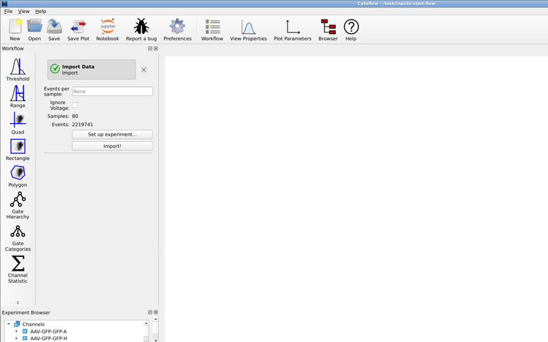
cu drag 210 808 210 450; sleep 1; cu screenshot /tmp/screen.png
{
"file_path": "/tmp/screen.png"
}/tmp/screen.png
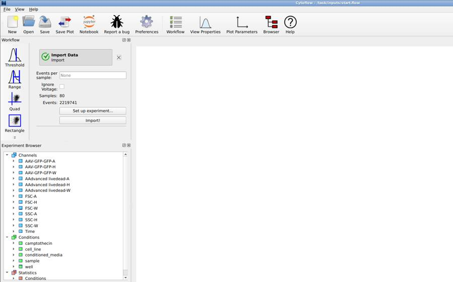
cu click 43 514; sleep 1; cu screenshot /tmp/screen.png
{
"file_path": "/tmp/screen.png"
}/tmp/screen.png
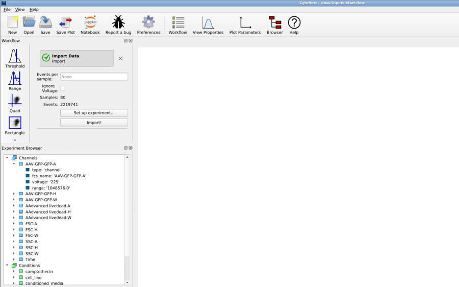
cu click 43 514; sleep 0.5; cu click 43 570; sleep 0.5; cu click 43 532; sleep 0.5; cu screenshot /tmp/screen.png
{
"file_path": "/tmp/screen.png"
}/tmp/screen.png
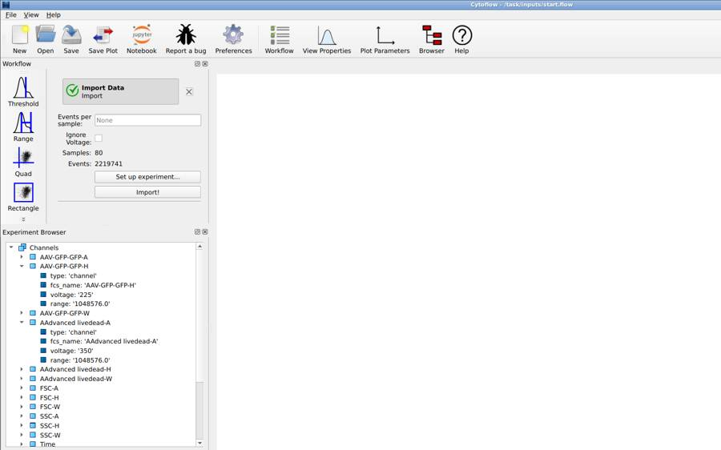
mkdir -p /root/.claude/projects/-task/memory; cat > /root/.claude/projects/-task/memory/caspase-plate-progress.md <<'EOF' --- name: caspase-plate-progress description: Progress/state notes for the H4 PGRN caspase-3/7 Cytoflow analysis task (/task/outputs deliverables) metadata: type: project --- Task started 2026-11-06. Cytoflow GUI on screen; start.flow opened & run (80 samples, 2,219,741 events). Channel mapping (voltages in FCS match plan): "AAV-GFP-GFP-*" = BL1 225V = CellEvent caspase-3/7 green; "AAdvanced livedead-*" = BL2 350V = SYTOX AADvanced dead stain. FSC/SSC/Time also present. Plate-map trap: 11-28 donor plate rows E/F were E1/E3 cells (green); 11-30 colours rows A-C cyan, D-F green; 12-02 colours cols1-4 blue(24h) cols5-8 green(48h). Rows E/F cols1-8 may have received KO (own) CM, not WT CM. **Why:** context survives compaction. **How to apply:** resume from here; check /task/outputs for saved files. EOF echo "- [Caspase plate progress](caspase-plate-progress.md) — state of the H4 PGRN caspase Cytoflow analysis" > /root/.claude/projects/-task/memory/MEMORY.md
(Bash completed with no output)
cu click 652 75; sleep 1.5; cu screenshot /tmp/screen.png
{
"file_path": "/tmp/screen.png"
}/tmp/screen.png
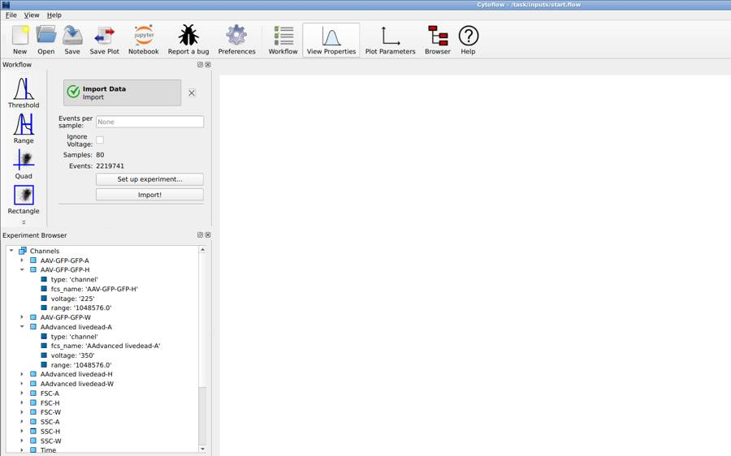
cu click 62 29; sleep 1; cu screenshot /tmp/screen.png
{
"file_path": "/tmp/screen.png"
}/tmp/screen.png
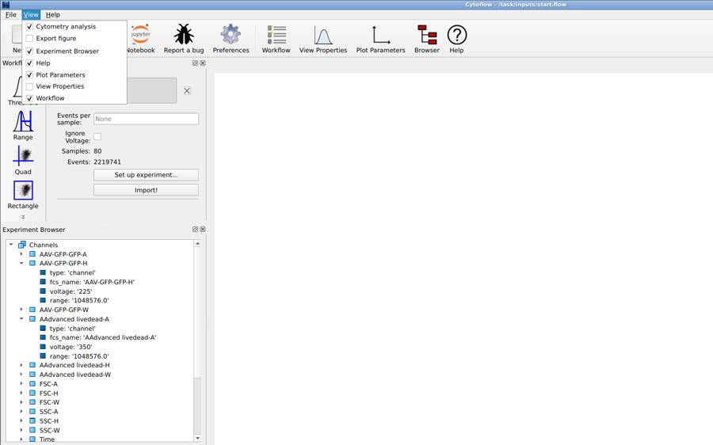
cu click 120 174; sleep 1.5; cu screenshot /tmp/screen.png
{
"file_path": "/tmp/screen.png"
}/tmp/screen.png
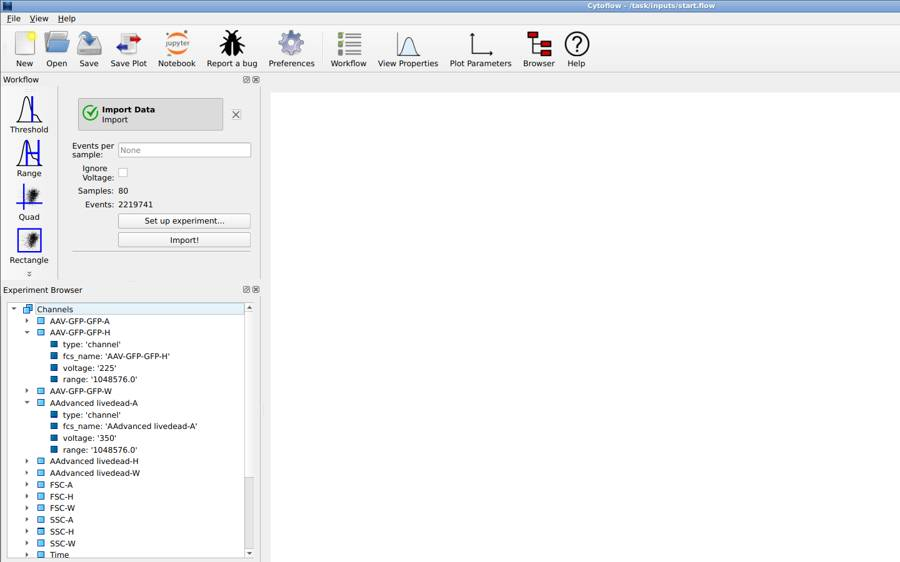
export DISPLAY=:1; xdotool getactivewindow getwindowgeometry; xdotool search --name Cytoflow 2>/dev/null | while read w; do xdotool getwindowname $w; xdotool getwindowgeometry $w; done; xdpyinfo 2>/dev/null | grep dimensions
Window 14680070 Position: 2,40 (screen: 0) Geometry: 2082x1171 Qt Selection Owner for cytoflow Window 14680068 Position: 0,0 (screen: 0) Geometry: 3x3 cytoflow Window 14680072 Position: 0,0 (screen: 0) Geometry: 1x1 Cytoflow - /task/inputs/start.flow Window 14680070 Position: 2,40 (screen: 0) Geometry: 2082x1171 dimensions: 1440x900 pixels (366x229 millimeters)
export DISPLAY=:1; xdotool windowmove 14680070 0 0; xdotool windowsize 14680070 1440 880; sleep 2; xdotool getwindowgeometry 14680070; cu screenshot /tmp/screen.png
{
"file_path": "/tmp/screen.png"
}Window 14680070 Position: 1,20 (screen: 0) Geometry: 1440x880 /tmp/screen.png
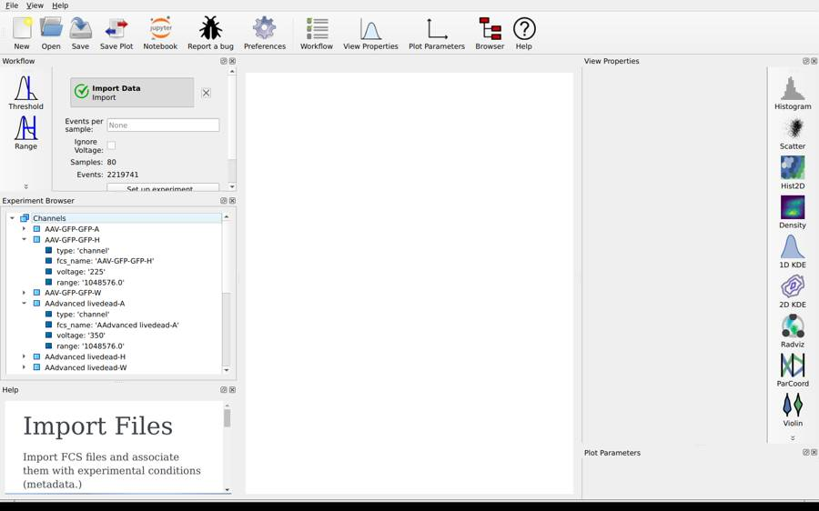
cu click 408 686; sleep 1; cu screenshot /tmp/screen.png
{
"file_path": "/tmp/screen.png"
}/tmp/screen.png
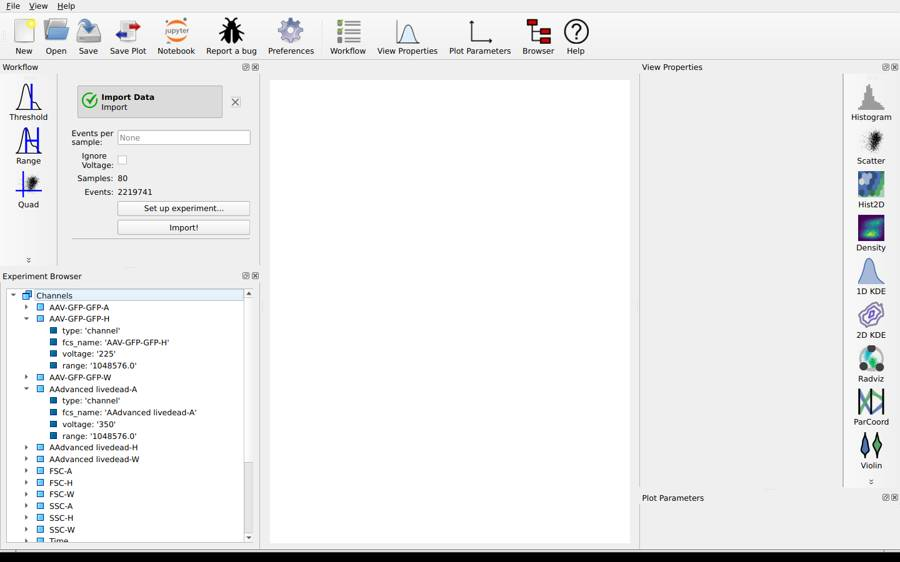
cu click 408 441; sleep 1; cu click 1393 300; sleep 3; cu screenshot /tmp/screen.png
{
"file_path": "/tmp/screen.png"
}/tmp/screen.png
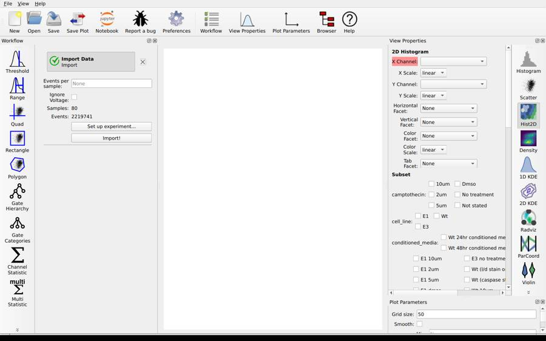
cu click 1195 162; sleep 1; cu screenshot /tmp/screen.png
{
"file_path": "/tmp/screen.png"
}/tmp/screen.png
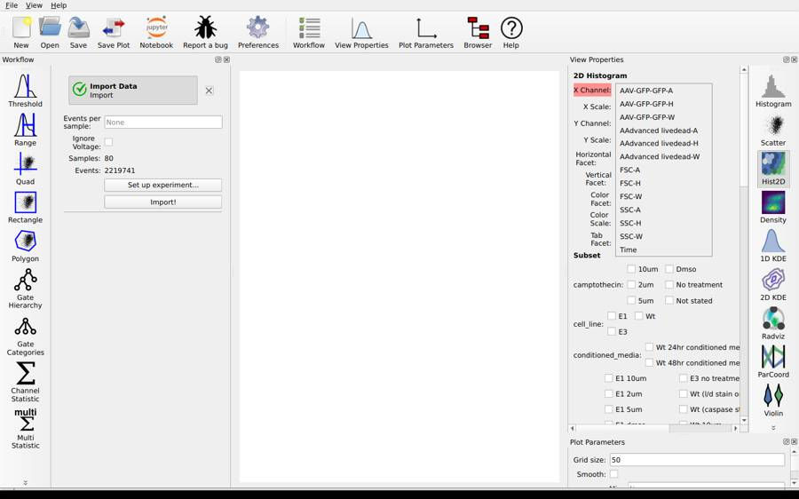
cu click 1135 306; sleep 1; cu click 1195 222; sleep 1; cu screenshot /tmp/screen.png
{
"file_path": "/tmp/screen.png"
}/tmp/screen.png
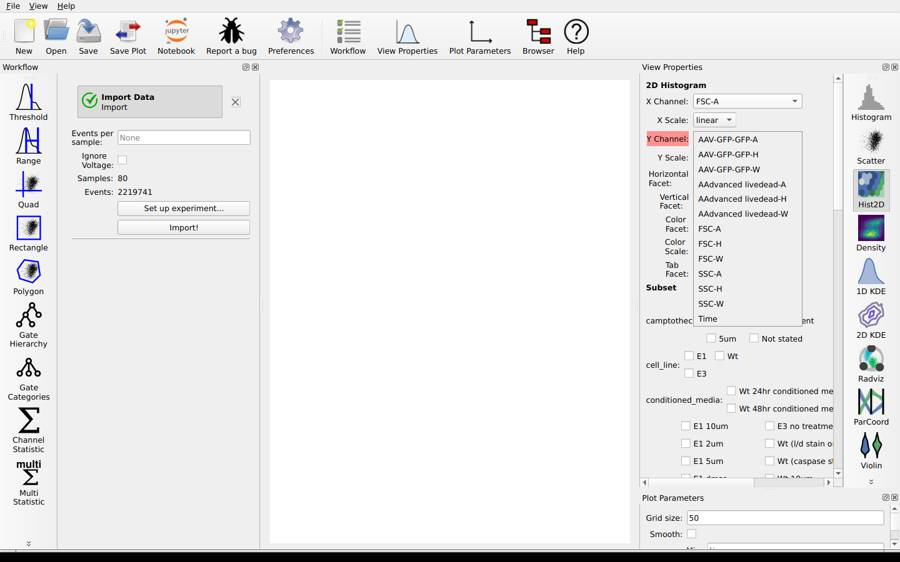
cu click 1135 438; sleep 6; cu screenshot /tmp/screen.png
{
"file_path": "/tmp/screen.png"
}/tmp/screen.png
cu click 1142 395; sleep 1; cu screenshot /tmp/screen.png
{
"file_path": "/tmp/screen.png"
}/tmp/screen.png
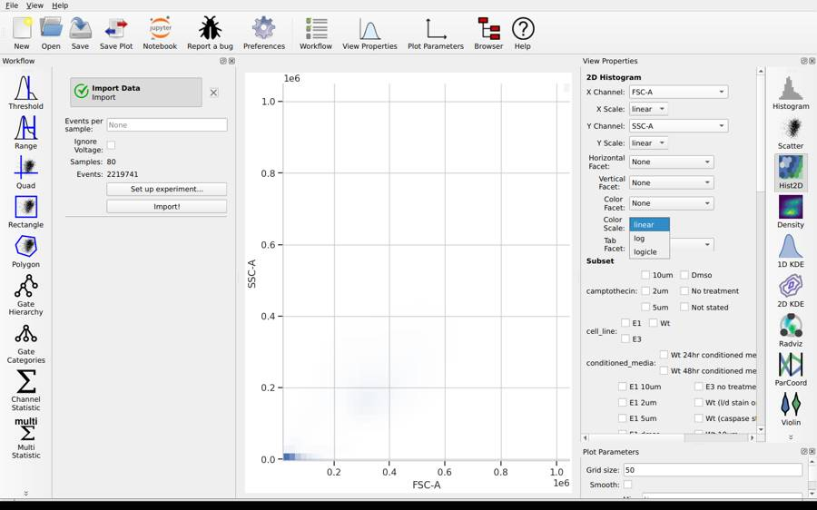
cu click 1127 420; sleep 6; cu screenshot /tmp/screen.png
{
"file_path": "/tmp/screen.png"
}/tmp/screen.png

sleep 5; cu screenshot /tmp/screen.png
{
"file_path": "/tmp/screen.png"
}/tmp/screen.png
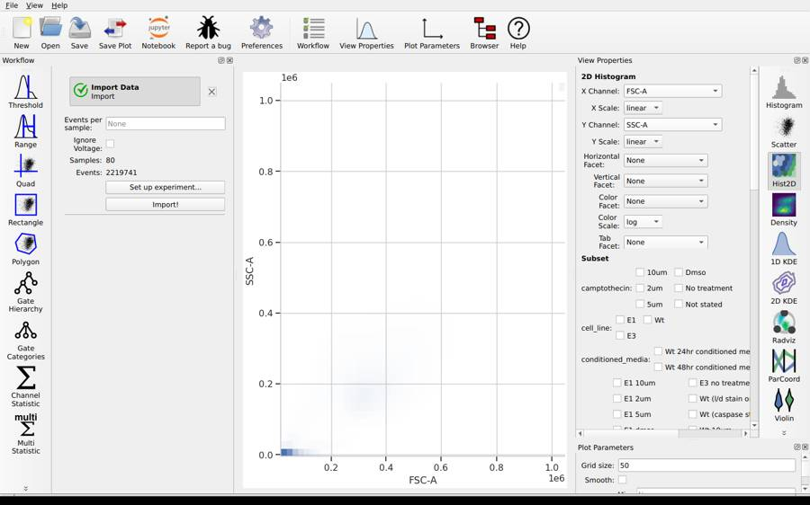
cu click 1393 370; sleep 2; cu screenshot /tmp/screen.png
{
"file_path": "/tmp/screen.png"
}/tmp/screen.png
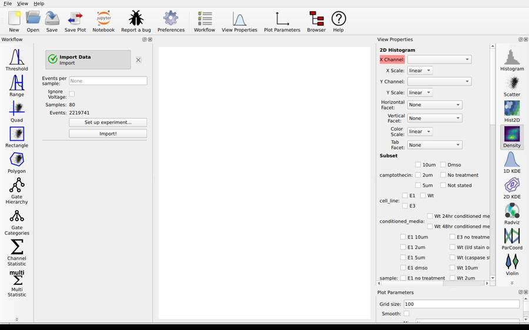
cu click 1195 162; sleep 1; cu click 1135 306; sleep 1; cu click 1195 222; sleep 1; cu click 1135 438; sleep 1; cu click 1142 358; sleep 1; cu screenshot /tmp/screen.png
{
"file_path": "/tmp/screen.png"
}/tmp/screen.png
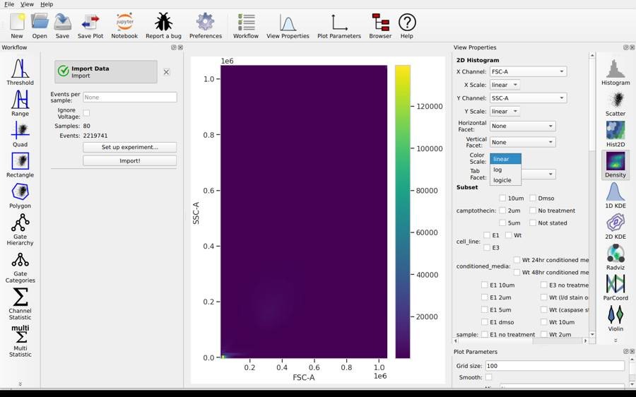
cu click 1127 384; sleep 8; cu screenshot /tmp/screen.png
{
"file_path": "/tmp/screen.png"
}/tmp/screen.png
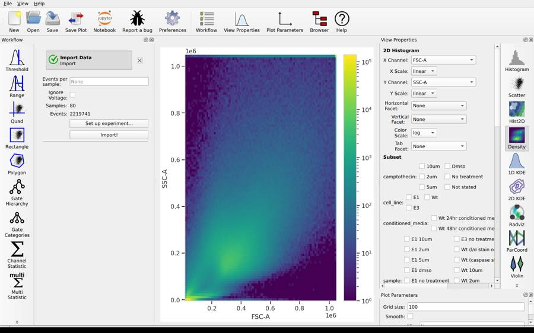
cu click 1183 286; sleep 1; cu screenshot /tmp/screen.png
{
"file_path": "/tmp/screen.png"
}/tmp/screen.png
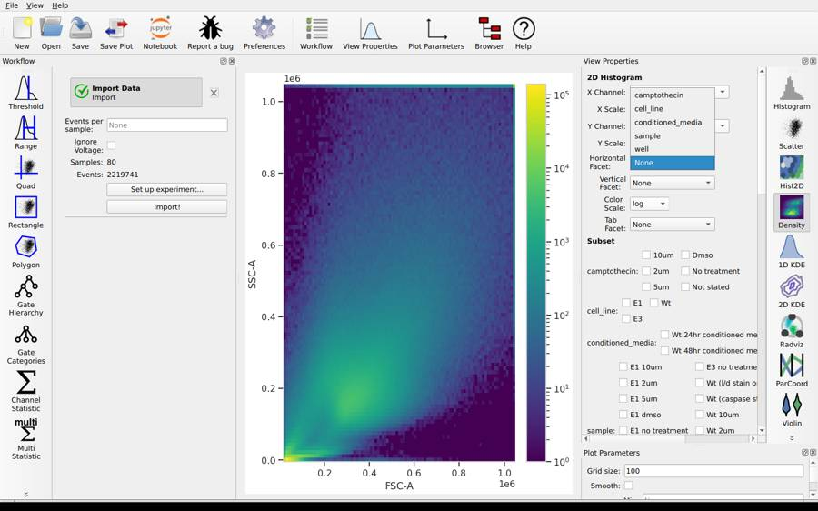
cu click 1130 262; sleep 30; cu screenshot /tmp/screen.png
{
"file_path": "/tmp/screen.png"
}/tmp/screen.png
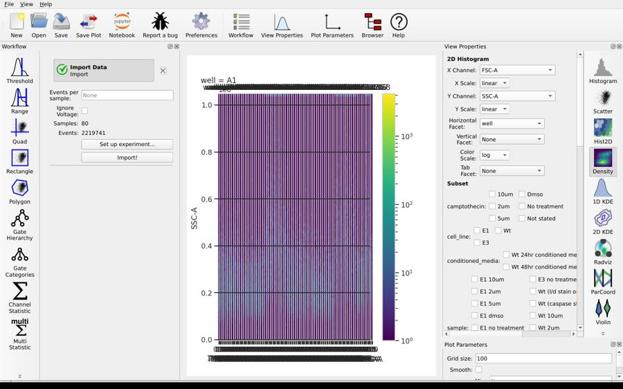
cu drag 1230 785 1230 450; sleep 1; cu screenshot /tmp/screen.png
{
"file_path": "/tmp/screen.png"
}/tmp/screen.png
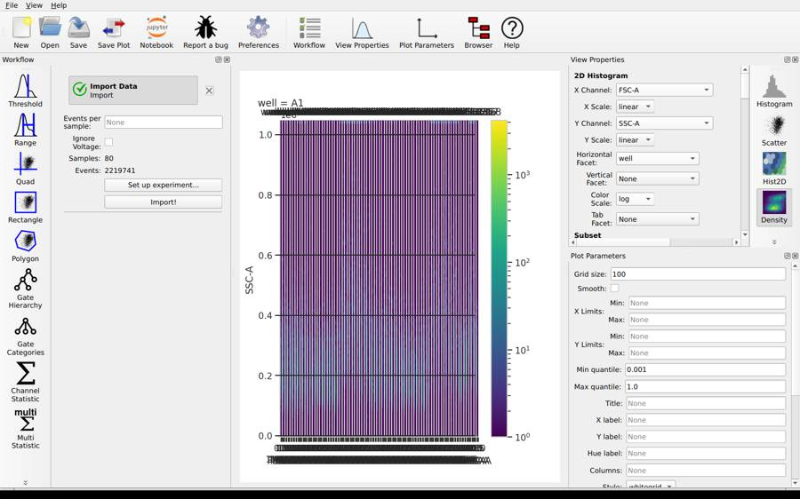
cu click 1270 848; cu type "12"; cu key Return; sleep 1; cu triple 2>/dev/null; cu click 1255 494; cu key ctrl+a; cu type "50"; cu key Return; sleep 40; cu screenshot /tmp/screen.png
{
"file_path": "/tmp/screen.png"
}# Computer-use helper: the agent's only way to act on the screen.
# cu screenshot [path] -> PNG of the screen (default /tmp/screen.png); prints path
# cu click X Y [left|right|double]
# cu move X Y | cu drag X1 Y1 X2 Y2 | cu scroll X Y up|down [N]
# cu type "text" (keystrokes) | cu paste "text" (clipboard) | cu key KEYS (e.g. ctrl+s, Return)
# cu cursor -> current mouse position
export DISPLAY=${DISPLAY:-:1}
cmd=$1; shift
/tmp/screen.png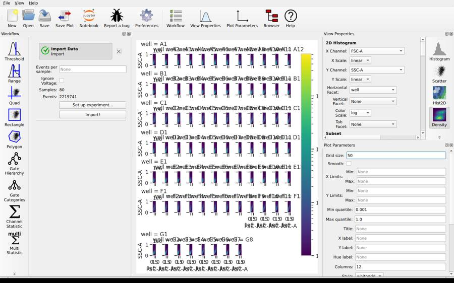
cu click 204 60; sleep 2; cu screenshot /tmp/screen.png
{
"file_path": "/tmp/screen.png"
}/tmp/screen.png
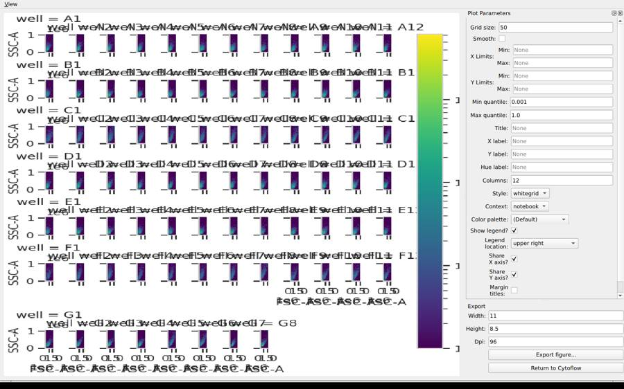
cu click 1280 730; cu key ctrl+a; cu type "36"; cu key Tab; sleep 0.5; cu click 1280 760; cu key ctrl+a; cu type "22"; cu key Tab; sleep 0.5; cu click 1280 790; cu key ctrl+a; cu type "72"; cu key Tab; sleep 1; cu click 1222 477; sleep 1; cu screenshot /tmp/screen.png
{
"file_path": "/tmp/screen.png"
}/tmp/screen.png
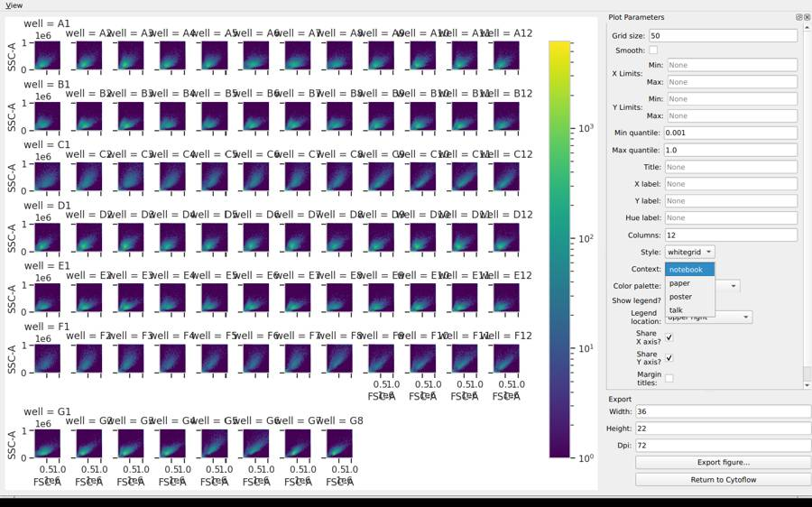
cu click 1205 502; sleep 3; cu click 1282 820; sleep 2; cu screenshot /tmp/screen.png
{
"file_path": "/tmp/screen.png"
}/tmp/screen.png
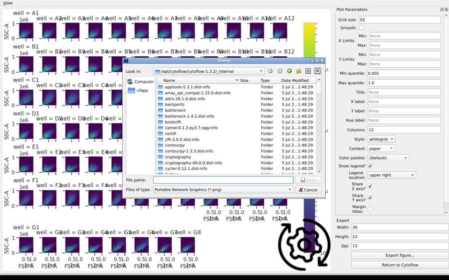
mkdir -p /tmp/cf; chmod 777 /tmp/cf; cu click 715 578; cu paste "/tmp/cf/fsc_ssc.png"; cu key Return; sleep 25; ls -la /tmp/cf; cu screenshot /tmp/screen.png
total 8 drwxrwxrwx 2 root root 4096 Nov 6 00:39 . drwxrwxrwx 9 root root 4096 Nov 6 00:39 .. /tmp/screen.png
{
"file_path": "/tmp/screen.png"
}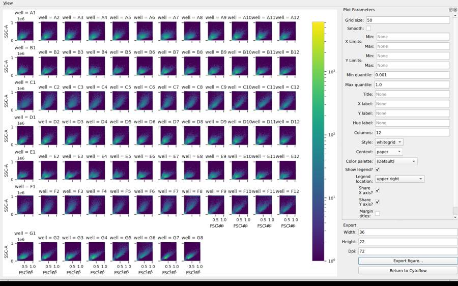
sleep 5; ls -la /tmp/cf; find / -name "fsc_ssc*.png" -newer /task/inputs/plan.md 2>/dev/null | head
total 8 drwxrwxrwx 2 root root 4096 Nov 6 00:39 . drwxrwxrwx 9 root root 4096 Nov 6 00:39 ..
cu click 1282 820; sleep 2; cu click 715 578; cu paste "/tmp/cf/fsc_ssc.png"; sleep 1; cu screenshot /tmp/screen.png
{
"file_path": "/tmp/screen.png"
}/tmp/screen.png
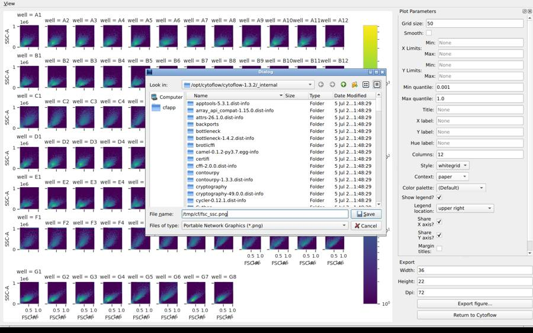
cu click 988 578; sleep 30; ls -la /tmp/cf
total 352 drwxrwxrwx 2 root root 4096 Nov 6 00:40 . drwxrwxrwx 9 root root 4096 Nov 6 00:40 .. -rw-rw-r-- 1 cfapp cfapp 351620 Nov 6 00:40 fsc_ssc.png
cd /tmp/cf; python3 -c "
from PIL import Image
im=Image.open('fsc_ssc.png'); print(im.size)
w,h=im.size
im.crop((0,0,w//2,h//2)).save('c1.png'); im.crop((w//2,0,w,h//2)).save('c2.png')
im.crop((0,h//2,w//2,h)).save('c3.png'); im.crop((w//2,h//2,w,h)).save('c4.png')
"(2594, 1592) Shell cwd was reset to /task
{
"file_path": "/tmp/cf/c1.png"
}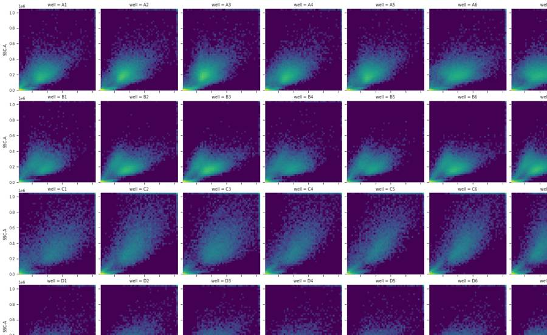
{
"file_path": "/tmp/cf/c2.png"
}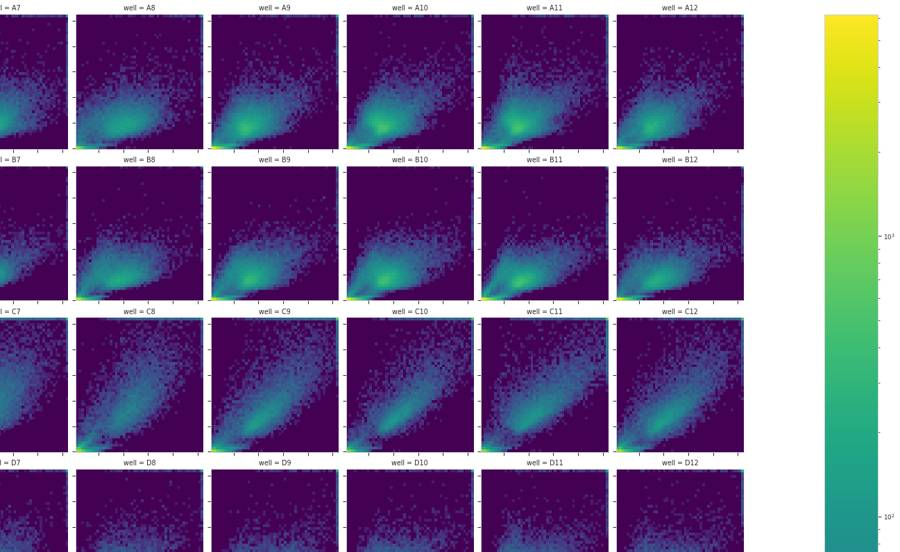
{
"file_path": "/tmp/cf/c3.png"
}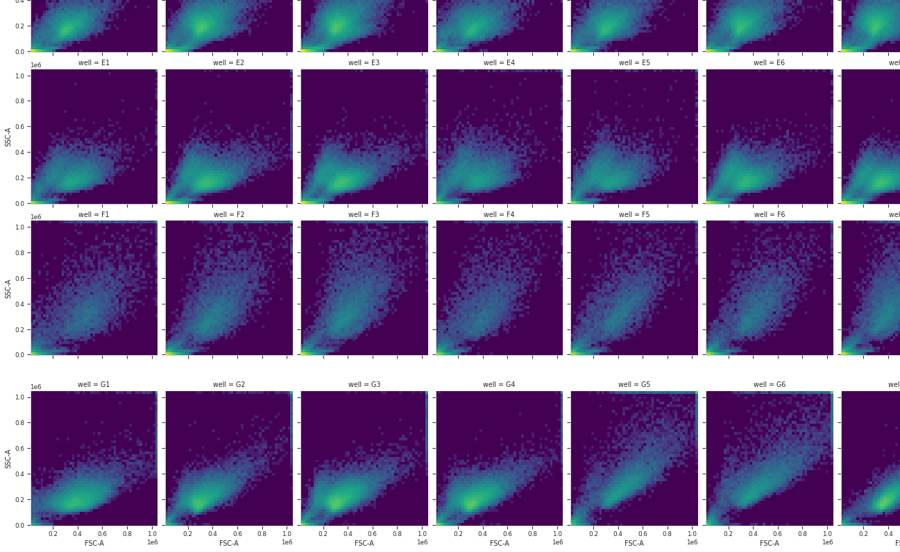
{
"file_path": "/tmp/cf/c4.png"
}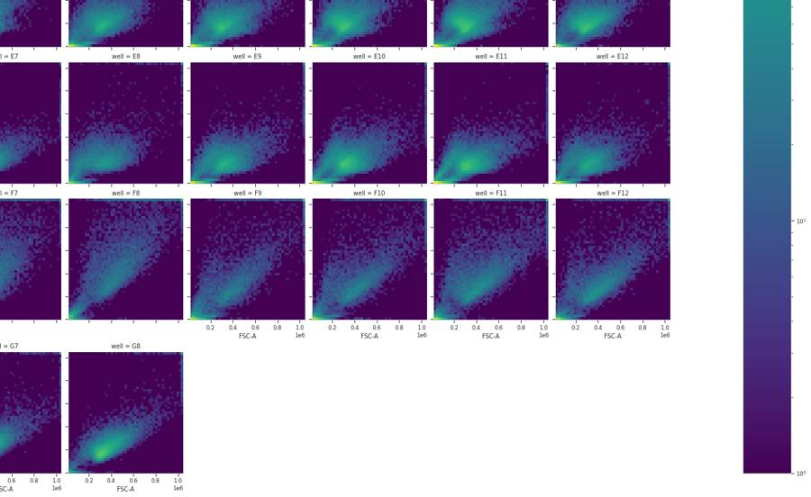
thinking
Rows C/F (E3) show a broader, higher-SSC scatter than the others, and G3/G4 (labelled E3) look E1-like while G5/G6 (labelled E1) look E3-like, so the labels may be swapped. I'm checking per-well time histograms for clogs next.
cu click 1282 851; sleep 2; cu click 1393 160; sleep 2; cu screenshot /tmp/screen.png
{
"file_path": "/tmp/screen.png"
}/tmp/screen.png
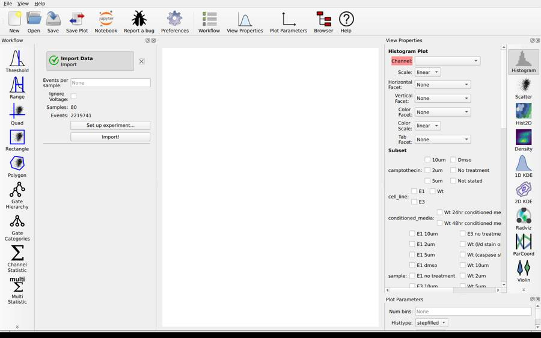
cu click 1190 162; sleep 1; cu click 1135 451; sleep 2; cu click 1178 225; sleep 1; cu screenshot /tmp/screen.png
{
"file_path": "/tmp/screen.png"
}/tmp/screen.png
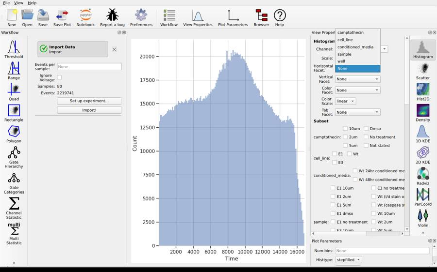
cu click 1125 202; sleep 3; cu drag 1230 785 1230 450; sleep 1; cu screenshot /tmp/screen.png
{
"file_path": "/tmp/screen.png"
}/tmp/screen.png
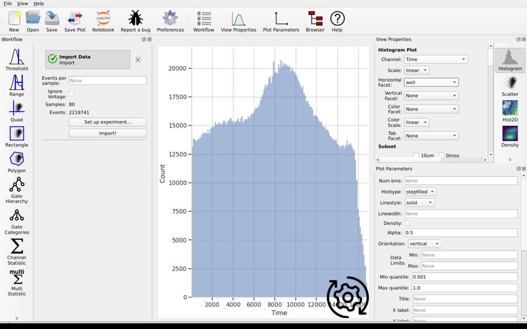
cu click 1265 757; cu key ctrl+a; cu type "0"; cu key Tab; cu click 1258 494; cu key ctrl+a; cu type "80"; cu key Tab; cu scroll 1220 700 down 10; sleep 1; cu screenshot /tmp/screen.png
{
"file_path": "/tmp/screen.png"
}/tmp/screen.png
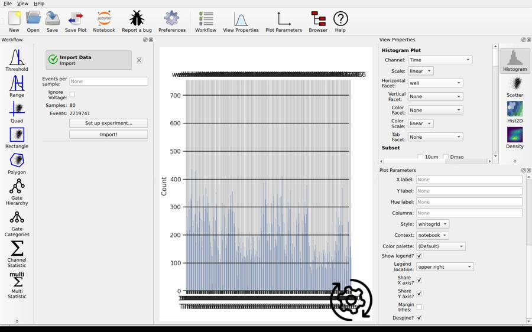
cu click 1270 577; cu type "12"; cu key Tab; sleep 1; cu click 1134 795; sleep 1; cu click 1167 637; sleep 1; cu screenshot /tmp/screen.png
{
"file_path": "/tmp/screen.png"
}/tmp/screen.png
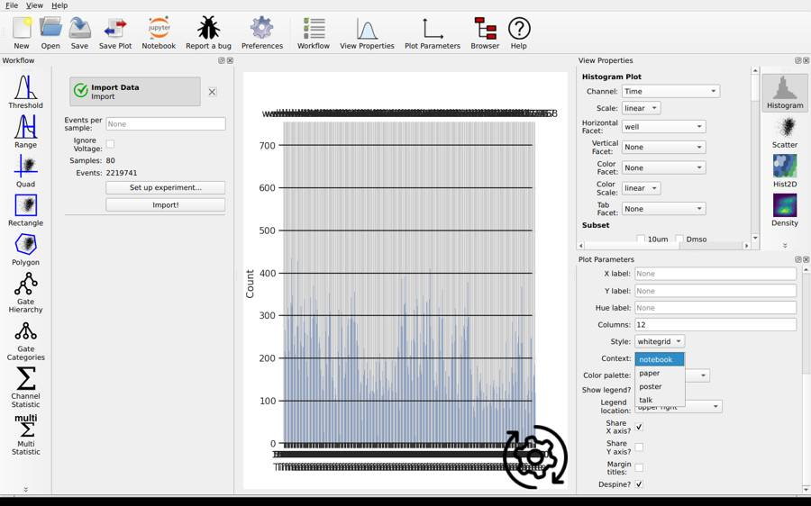
cu click 1153 663; sleep 15; cu click 204 60; sleep 3; cu screenshot /tmp/screen.png
{
"file_path": "/tmp/screen.png"
}/tmp/screen.png
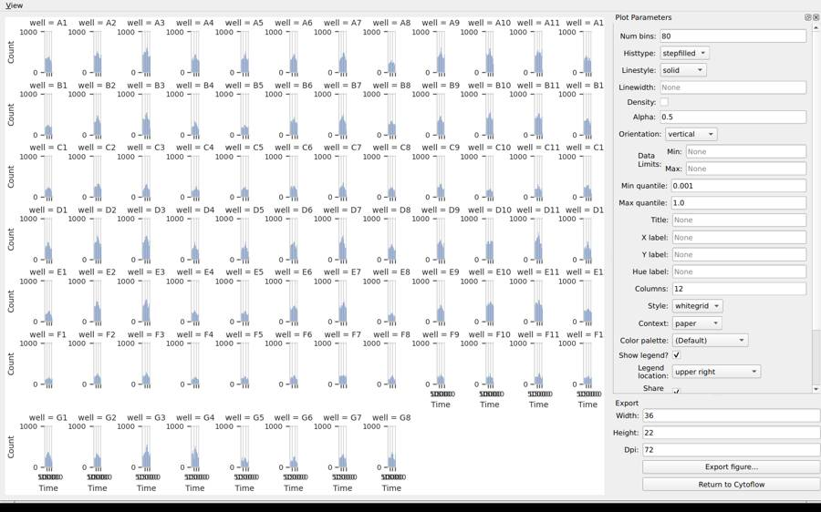
cu click 1282 820; sleep 2; cu click 715 578; cu paste "/tmp/cf/time.png"; sleep 0.5; cu click 988 578; sleep 30; ls -la /tmp/cf
total 816 drwxrwxrwx 2 root root 4096 Nov 6 00:42 . drwxrwxrwx 9 root root 4096 Nov 6 00:42 .. -rw-r--r-- 1 root root 100578 Nov 6 00:40 c1.png -rw-r--r-- 1 root root 81578 Nov 6 00:40 c2.png -rw-r--r-- 1 root root 99388 Nov 6 00:40 c3.png -rw-r--r-- 1 root root 70381 Nov 6 00:40 c4.png -rw-rw-r-- 1 cfapp cfapp 351620 Nov 6 00:40 fsc_ssc.png -rw-rw-r-- 1 cfapp cfapp 111944 Nov 6 00:42 time.png
cd /tmp/cf; python3 -c "
from PIL import Image
im=Image.open('time.png'); print(im.size)
w,h=im.size
im.crop((0,0,w//2,h//2)).save('t1.png'); im.crop((w//2,0,w,h//2)).save('t2.png')
im.crop((0,h//2,w//2,h)).save('t3.png'); im.crop((w//2,h//2,w,h)).save('t4.png')
"(2600, 1592) Shell cwd was reset to /task
{
"file_path": "/tmp/cf/t1.png"
}
{
"file_path": "/tmp/cf/t2.png"
}
{
"file_path": "/tmp/cf/t3.png"
}
{
"file_path": "/tmp/cf/t4.png"
}
thinking
Time profiles look mostly stable, but G2 shows a sharp burst and then a gap near Time ≈7,800, which could be a clog or bubble, and A5 has a dip followed by a spike. Next I'll check the fluorescence channels per well.
cu click 1282 851; sleep 2; cu click 1393 370; sleep 2; cu screenshot /tmp/screen.png
{
"file_path": "/tmp/screen.png"
}/tmp/screen.png
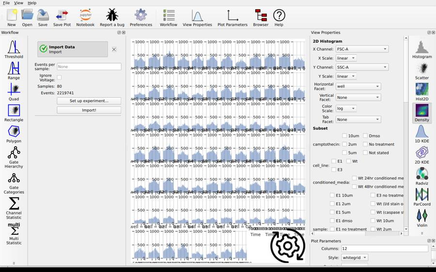
cu click 1195 162; sleep 1; cu screenshot /tmp/screen.png
{
"file_path": "/tmp/screen.png"
}/tmp/screen.png
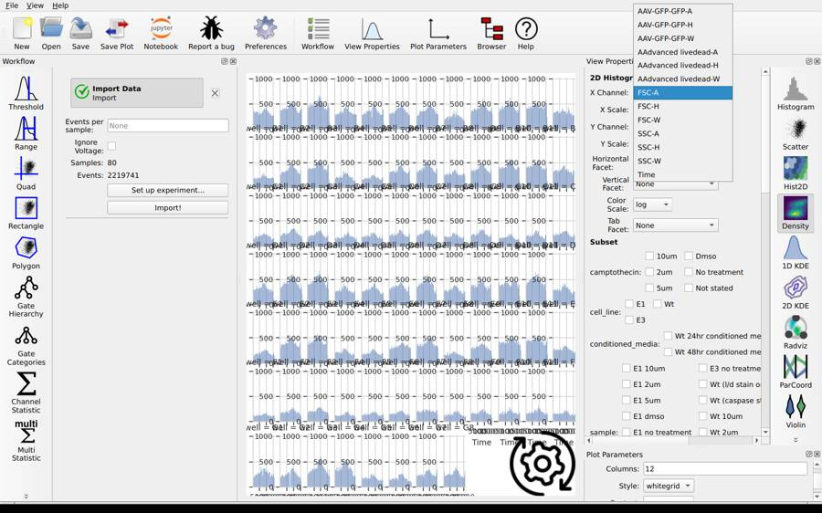
cu click 1165 19; sleep 2; cu click 1195 222; sleep 1; cu screenshot /tmp/screen.png
{
"file_path": "/tmp/screen.png"
}/tmp/screen.png
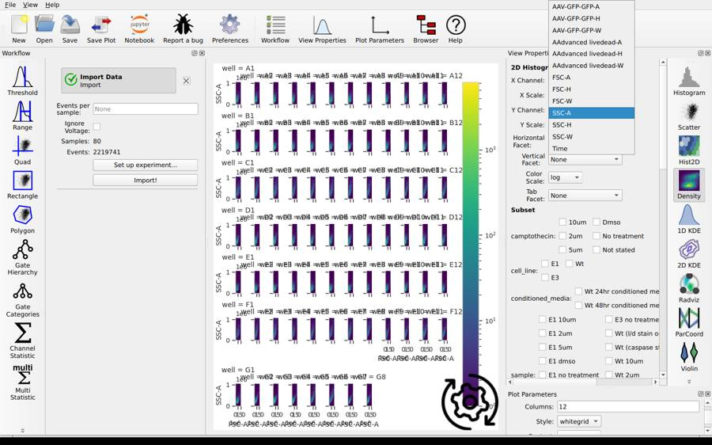
cu click 1185 85; sleep 2; cu click 1142 192; sleep 1; cu screenshot /tmp/screen.png
{
"file_path": "/tmp/screen.png"
}/tmp/screen.png
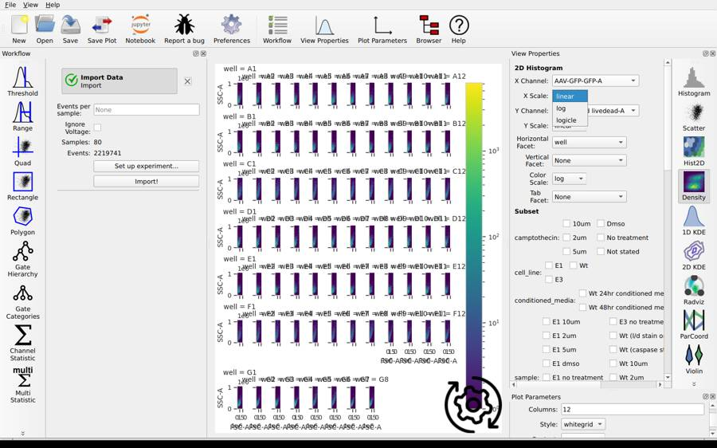
cu click 1137 241; sleep 2; cu click 1142 252; sleep 1; cu screenshot /tmp/screen.png
{
"file_path": "/tmp/screen.png"
}/tmp/screen.png
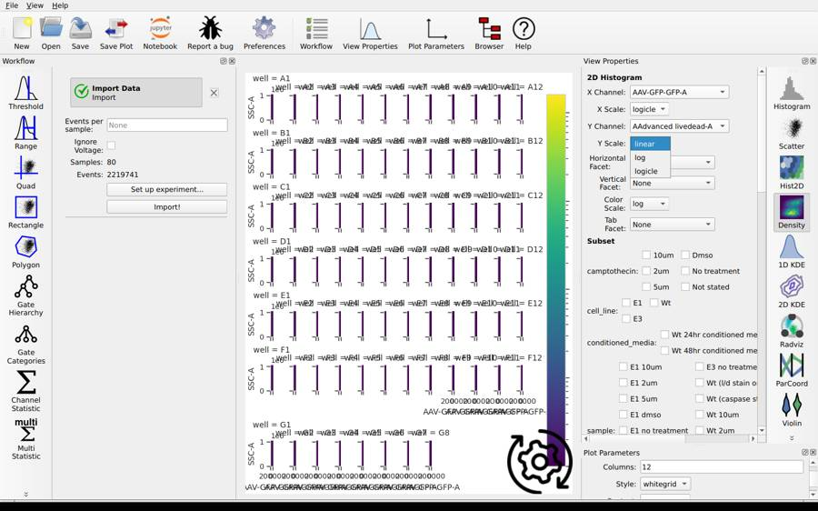
cu click 1137 301; sleep 40; cu screenshot /tmp/screen.png
{
"file_path": "/tmp/screen.png"
}/tmp/screen.png

sleep 30; cu click 204 60; sleep 5; cu screenshot /tmp/screen.png
<tool_use_error>Blocked: sleep 30 followed by: cu click 204 60 sleep 5 cu screenshot /tmp/screen.png. To wait for a condition, use Monitor with an until-loop (e.g. `until <check>; do sleep 2; done`). To wait for a command you started, use run_in_background: true. Do not chain shorter sleeps to work around this block.</tool_use_error>
{
"file_path": "/tmp/screen.png"
}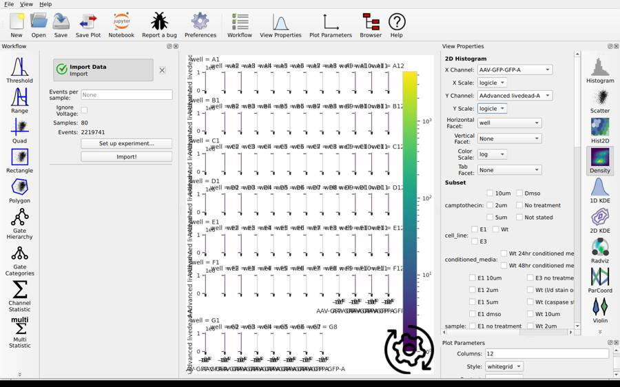
mkdir -p /tmp/tools; cat > /tmp/tools/busy.py <<'EOF'
import sys
from PIL import Image
im=Image.open(sys.argv[1]).convert('L')
reg=im.crop((895,755,1008,868))
px=list(reg.getdata())
dark=sum(1 for p in px if p<40)/len(px)
print('busy' if dark>0.12 else 'idle', round(dark,3))
EOF
cat > /tmp/tools/waitidle.sh <<'EOF'
#!/bin/bash
# wait until cytoflow spinner gone (max ~ $1 seconds)
max=${1:-180}; t=0
sleep 2
while [ $t -lt $max ]; do
cu screenshot /tmp/w.png >/dev/null
s=$(python3 /tmp/tools/busy.py /tmp/w.png)
case "$s" in idle*) echo "idle after ${t}s"; exit 0;; esac
sleep 3; t=$((t+3))
done
echo "timeout"
EOF
chmod +x /tmp/tools/waitidle.sh; /tmp/tools/waitidle.sh 120idle after 0s
cu screenshot /tmp/screen.png
/tmp/screen.png
{
"file_path": "/tmp/screen.png"
}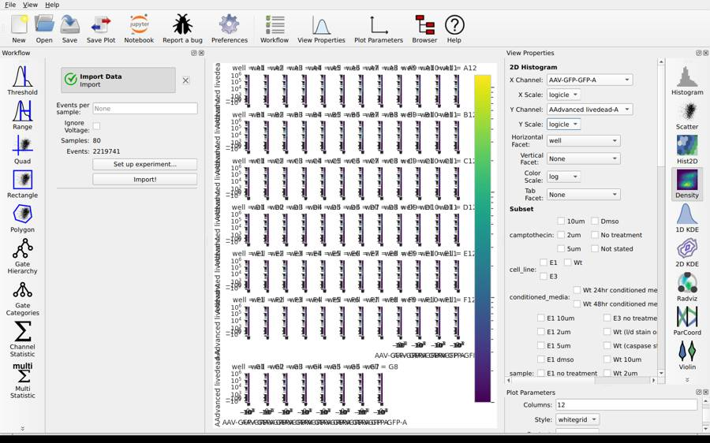
cu click 204 60; sleep 3; /tmp/tools/waitidle.sh 120; cu click 1282 820; sleep 2; cu click 715 578; cu paste "/tmp/cf/fl.png"; sleep 0.5; cu click 988 578; sleep 5; /tmp/tools/waitidle.sh 120; ls -la /tmp/cf/fl.png
Exit code 2 idle after 0s idle after 0s ls: cannot access '/tmp/cf/fl.png': No such file or directory
cu screenshot /tmp/screen.png
/tmp/screen.png
{
"file_path": "/tmp/screen.png"
}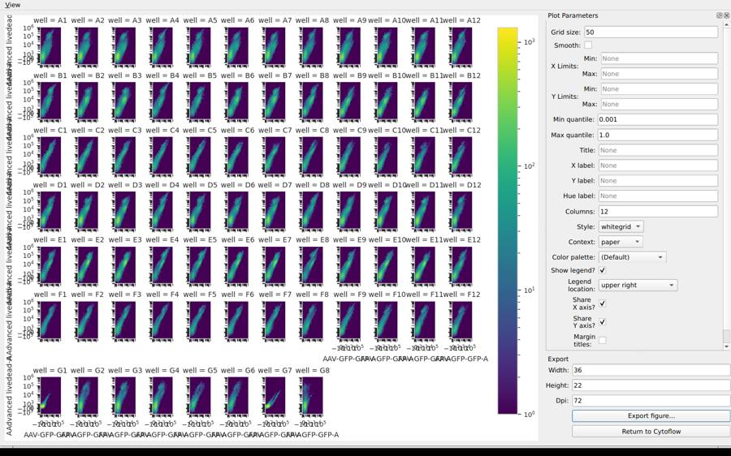
cu click 1282 820; sleep 3; cu click 715 578; cu paste "/tmp/cf/fl.png"; sleep 0.5; cu screenshot /tmp/screen.png
{
"file_path": "/tmp/screen.png"
}/tmp/screen.png
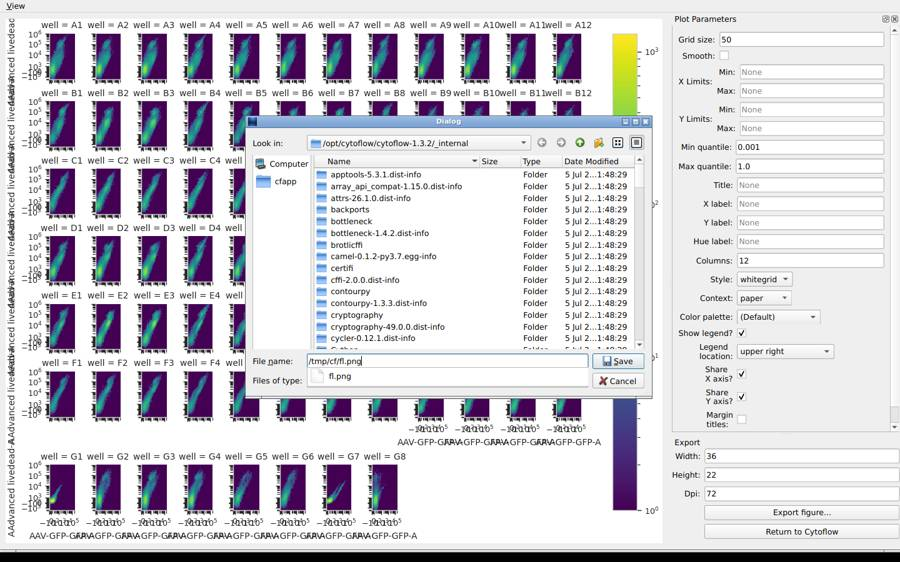
cu key Escape; sleep 0.3; cu screenshot /tmp/s2.png >/dev/null; cu click 988 578; sleep 3; /tmp/tools/waitidle.sh 120; ls -la /tmp/cf/; cu screenshot /tmp/screen.png
idle after 0s total 1292 drwxrwxrwx 2 root root 4096 Nov 6 00:45 . drwxrwxrwx 10 root root 4096 Nov 6 00:45 .. -rw-r--r-- 1 root root 100578 Nov 6 00:40 c1.png -rw-r--r-- 1 root root 81578 Nov 6 00:40 c2.png -rw-r--r-- 1 root root 99388 Nov 6 00:40 c3.png -rw-r--r-- 1 root root 70381 Nov 6 00:40 c4.png -rw-rw-r-- 1 cfapp cfapp 336940 Nov 6 00:45 fl.png -rw-rw-r-- 1 cfapp cfapp 351620 Nov 6 00:40 fsc_ssc.png -rw-r--r-- 1 root root 37218 Nov 6 00:42 t1.png -rw-r--r-- 1 root root 35395 Nov 6 00:42 t2.png -rw-r--r-- 1 root root 35984 Nov 6 00:42 t3.png -rw-r--r-- 1 root root 32526 Nov 6 00:42 t4.png -rw-rw-r-- 1 cfapp cfapp 111944 Nov 6 00:42 time.png /tmp/screen.png
cat > /tmp/tools/quad.py <<'EOF'
import sys
from PIL import Image
src=sys.argv[1]; pre=sys.argv[2]
im=Image.open(src); w,h=im.size; print(im.size)
for i,(a,b) in enumerate([(0,0),(1,0),(0,1),(1,1)]):
im.crop((a*w//2,b*h//2,(a+1)*w//2,(b+1)*h//2)).save(f'{pre}{i+1}.png')
EOF
cd /tmp/cf && python3 /tmp/tools/quad.py fl.png f(2594, 1592) Shell cwd was reset to /task
{
"file_path": "/tmp/cf/f1.png"
}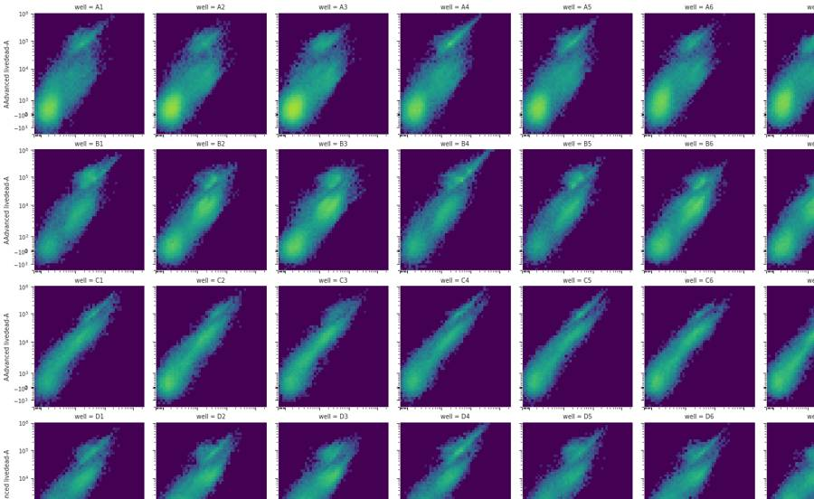
{
"file_path": "/tmp/cf/f3.png"
}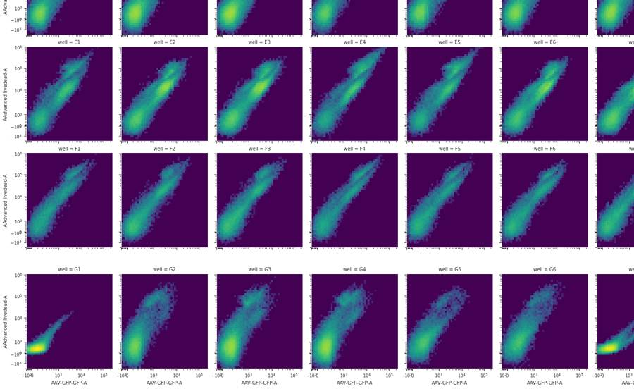
{
"file_path": "/tmp/cf/f4.png"
}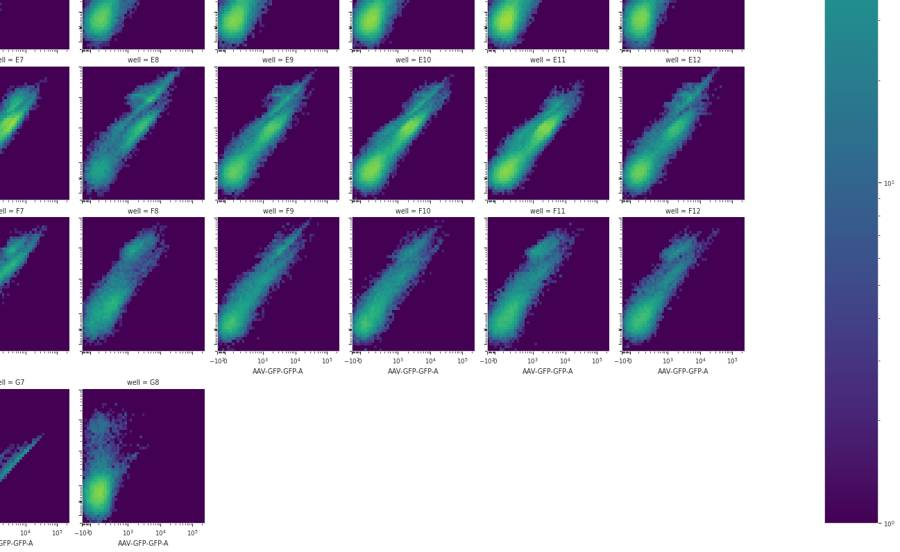
thinking
Caspase-green spills heavily into the SYTOX channel, so the live gate needs a diagonal polygon; G3/G4 and G5/G6 again look swapped. Next I'm building the gates: Cells, Singlets, Live, then CaspasePos.
cu click 1282 851; sleep 2; cu click 240 160; sleep 1; cu click 45 440; sleep 3; cu screenshot /tmp/screen.png
{
"file_path": "/tmp/screen.png"
}/tmp/screen.png
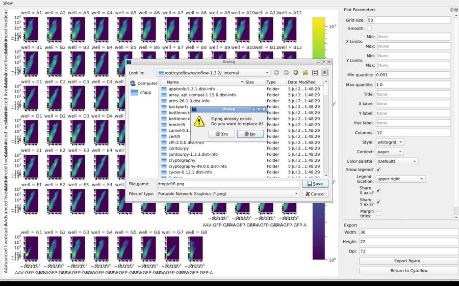
cu click 693 421; sleep 3; /tmp/tools/waitidle.sh 60; cu screenshot /tmp/screen.png
{
"file_path": "/tmp/screen.png"
}idle after 0s /tmp/screen.png

cu click 1282 851; sleep 2; /tmp/tools/waitidle.sh 60; cu click 240 160; sleep 1; cu click 45 440; sleep 3; cu screenshot /tmp/screen.png
{
"file_path": "/tmp/screen.png"
}idle after 0s /tmp/screen.png
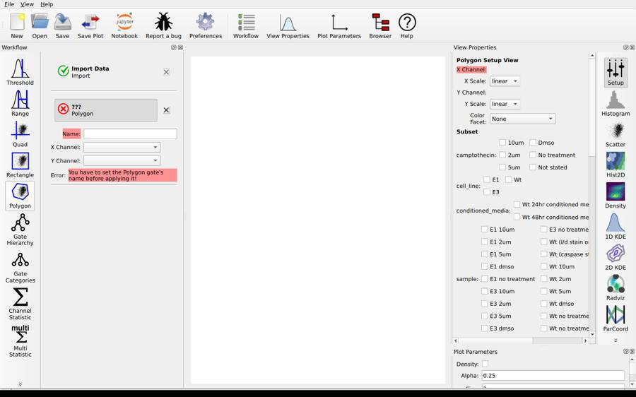
cu click 295 303; cu type "Cells"; cu key Tab; sleep 1; cu click 276 333; sleep 1; cu screenshot /tmp/screen.png
{
"file_path": "/tmp/screen.png"
}/tmp/screen.png
cu click 215 478; sleep 1; cu click 276 364; sleep 1; cu screenshot /tmp/screen.png
{
"file_path": "/tmp/screen.png"
}/tmp/screen.png
cu click 215 580; sleep 2; /tmp/tools/waitidle.sh 90; cu screenshot /tmp/screen.png
{
"file_path": "/tmp/screen.png"
}idle after 0s /tmp/screen.png
cu click 1098 825; sleep 3; /tmp/tools/waitidle.sh 90; cu screenshot /tmp/screen.png
{
"file_path": "/tmp/screen.png"
}idle after 0s /tmp/screen.png
cu click 1142 269; sleep 1; cu screenshot /tmp/screen.png
{
"file_path": "/tmp/screen.png"
}/tmp/screen.png
cu click 1127 294; sleep 3; /tmp/tools/waitidle.sh 90; cu screenshot /tmp/screen.png
{
"file_path": "/tmp/screen.png"
}idle after 0s /tmp/screen.png
for p in "524 766" "591 775" "709 763" "887 703" "887 180" "591 180"; do cu click $p; sleep 0.5; done; cu click 524 589 double; sleep 3; /tmp/tools/waitidle.sh 90; cu screenshot /tmp/screen.png
{
"file_path": "/tmp/screen.png"
}idle after 0s /tmp/screen.png
cu click 524 766; sleep 3; /tmp/tools/waitidle.sh 90; cu screenshot /tmp/screen.png
{
"file_path": "/tmp/screen.png"
}idle after 0s /tmp/screen.png
cu click 20 9; sleep 1; cu screenshot /tmp/screen.png
{
"file_path": "/tmp/screen.png"
}/tmp/screen.png
cu click 65 81; sleep 2; cu screenshot /tmp/screen.png
{
"file_path": "/tmp/screen.png"
}/tmp/screen.png
cu click 715 578; cu paste "/task/outputs/workflow.flow"; sleep 0.5; cu click 988 578; sleep 3; ls -la /task/outputs; grep -n "polygon" -A12 /task/outputs/workflow.flow | head -40
total 72 drwxrwsrwx 2 agent task 4096 Nov 6 00:48 . drwxr-xr-x 4 root root 4096 Nov 5 22:01 .. -rw-rw-r-- 1 cfapp task 62827 Nov 6 00:48 workflow.flow 2453: current_view: &id005 !polygon-view;3 2454- current_plot: null 2455- huefacet: '' 2456- huescale: log 2457: op: &id004 !polygon;1 2458- name: Cells 2459- vertices: 2460- - !!python/tuple 2461- - 78626.12612958284 2462- - 70510.61542337124 2463- - !!python/tuple 2464- - 250153.15176158538 2465- - 57318.90140006026 2466- - !!python/tuple 2467- - 548346.2886295284 2468- - 75457.50818211287 2469- - !!python/tuple -- 2488: plot_params: !polygon-params;1 2489- alpha: 0.25 2490- col_wrap: null 2491- density: true 2492- despine: true 2493- gridsize: 50 2494- huelabel: '' 2495- legend: true 2496- marker: o 2497- max_quantile: 1.0 2498- min_quantile: 0.001 2499- s: 2 2500- sharex: true
cu click 240 250; sleep 1; cu click 45 440; sleep 3; cu screenshot /tmp/screen.png
{
"file_path": "/tmp/screen.png"
}/tmp/screen.png
cu click 295 390; cu type "Singlets"; cu key Tab; sleep 1; cu click 276 420; sleep 1; cu screenshot /tmp/screen.png
{
"file_path": "/tmp/screen.png"
}/tmp/screen.png
cu click 215 564; sleep 1; cu click 276 450; sleep 1; cu screenshot /tmp/screen.png
{
"file_path": "/tmp/screen.png"
}/tmp/screen.png
cu click 215 618; sleep 1; cu click 1087 320; sleep 1; cu click 1098 825; sleep 2; /tmp/tools/waitidle.sh 90; cu screenshot /tmp/screen.png
{
"file_path": "/tmp/screen.png"
}idle after 3s /tmp/screen.png
cu click 1142 269; sleep 1; cu click 1127 294; sleep 3; /tmp/tools/waitidle.sh 90; cu screenshot /tmp/screen.png
{
"file_path": "/tmp/screen.png"
}idle after 0s /tmp/screen.png
for p in "549 818" "890 423" "890 153" "636 153" "549 683"; do cu click $p; sleep 0.5; done; cu click 549 818; sleep 3; /tmp/tools/waitidle.sh 90; cu screenshot /tmp/screen.png
{
"file_path": "/tmp/screen.png"
}idle after 0s /tmp/screen.png
cu click 557 800; sleep 0.7; cu click 890 423; sleep 3; /tmp/tools/waitidle.sh 90; cu screenshot /tmp/screen.png
{
"file_path": "/tmp/screen.png"
}idle after 0s /tmp/screen.png
cu click 1393 440; sleep 2; cu screenshot /tmp/screen.png
{
"file_path": "/tmp/screen.png"
}/tmp/screen.png
cu click 1195 162; sleep 1; cu click 1135 307; sleep 1; cu click 1195 222; sleep 1; cu click 1135 391; sleep 1; cu click 1087 446; sleep 1; cu click 1142 358; sleep 1; cu click 1127 384; sleep 1; cu click 1183 286; sleep 1; cu click 1140 191; sleep 3; /tmp/tools/waitidle.sh 120; cu screenshot /tmp/screen.png
{
"file_path": "/tmp/screen.png"
}idle after 0s /tmp/screen.png
cu click 204 60; sleep 3; cu screenshot /tmp/screen.png
{
"file_path": "/tmp/screen.png"
}/tmp/screen.png
thinking
The singlet boundary (H/A ≈ 0.41) falls in the valley between the singlet and doublet bands for all three lines, so it holds. Next I'm viewing the gated caspase vs SYTOX per well to design the Live gate.
cu click 1282 851; sleep 2; /tmp/tools/waitidle.sh 60; cu click 1105 468; sleep 1; cu click 1195 162; sleep 1; cu screenshot /tmp/screen.png
{
"file_path": "/tmp/screen.png"
}idle after 0s /tmp/screen.png
cu click 1165 19; sleep 1; cu click 1195 222; sleep 1; cu screenshot /tmp/screen.png
{
"file_path": "/tmp/screen.png"
}/tmp/screen.png
cu click 1185 128; sleep 1; cu click 1142 192; sleep 1; cu click 1137 240; sleep 1; cu click 1142 252; sleep 1; cu click 1137 300; sleep 1; cu click 1183 286; sleep 1; cu screenshot /tmp/screen.png
{
"file_path": "/tmp/screen.png"
}/tmp/screen.png
cu click 1130 358; sleep 3; /tmp/tools/waitidle.sh 180; cu click 204 60; sleep 3; /tmp/tools/waitidle.sh 180; cu screenshot /tmp/screen.png
{
"file_path": "/tmp/screen.png"
}idle after 18s idle after 0s /tmp/screen.png
cu click 1295 417; cu type "12"; cu key Tab; sleep 1; cu click 1282 63; cu key ctrl+a; cu type "50"; cu key Tab; sleep 1; cu click 1222 477; sleep 1; cu click 1205 502; sleep 3; /tmp/tools/waitidle.sh 240; cu screenshot /tmp/screen.png
{
"file_path": "/tmp/screen.png"
}idle after 36s /tmp/screen.png
cu click 1282 820; sleep 3; cu click 715 578; cu paste "/tmp/cf/fl_gated.png"; sleep 0.5; cu key Escape; sleep 0.3; cu screenshot /tmp/screen.png
{
"file_path": "/tmp/screen.png"
}/tmp/screen.png
cat > /tmp/tools/export.sh <<'EOF'
#!/bin/bash
# usage: export.sh /tmp/cf/name.png (must be in Save Plot mode)
out=$1; rm -f "$out"
cu click 1282 820; sleep 3
cu click 715 578; cu paste "$out"; sleep 0.5
cu click 988 578; sleep 2
for i in $(seq 1 60); do
[ -s "$out" ] && { sleep 2; echo "saved $out"; exit 0; }
# dialog might still be up (autocomplete swallowed click)
if [ $i -eq 3 ] || [ $i -eq 10 ]; then cu click 988 578; fi
sleep 2
done
echo "FAILED $out"
EOF
chmod +x /tmp/tools/export.sh; /tmp/tools/export.sh /tmp/cf/fl_gated.pngsaved /tmp/cf/fl_gated.png
cd /tmp/cf && python3 /tmp/tools/quad.py fl_gated.png g
(2594, 1592) Shell cwd was reset to /task
{
"file_path": "/tmp/cf/g1.png"
}{
"file_path": "/tmp/cf/g3.png"
}{
"file_path": "/tmp/cf/g4.png"
}{
"file_path": "/tmp/cf/g2.png"
}thinking
The gated view separates three populations (caspase-negative live cells, caspase-positive cells along the spillover diagonal, and SYTOX-bright dead cells), with E1 showing more caspase-positive cells and E3 a continuous smear. I'm drawing the Live polygon next.
cu click 1282 851; sleep 2; /tmp/tools/waitidle.sh 120; cu click 240 336; sleep 1; cu click 45 440; sleep 3; cu click 295 476; cu type "Live"; cu key Tab; sleep 1; cu screenshot /tmp/screen.png
{
"file_path": "/tmp/screen.png"
}idle after 0s /tmp/screen.png
cu click 276 506; sleep 1; cu screenshot /tmp/screen.png
{
"file_path": "/tmp/screen.png"
}/tmp/screen.png
cu click 245 507; sleep 1; cu click 1087 320; sleep 0.5; cu click 1106 342; sleep 0.5; cu click 1142 183; sleep 1; cu click 1137 232; sleep 1; cu click 1142 235; sleep 1; cu screenshot /tmp/screen.png
{
"file_path": "/tmp/screen.png"
}/tmp/screen.png
cu click 1137 285; sleep 1; cu click 1098 825; sleep 1; cu click 276 536; sleep 1; cu screenshot /tmp/screen.png
{
"file_path": "/tmp/screen.png"
}/tmp/screen.png
cu click 267 610; sleep 1; cu click 1142 269; sleep 1; cu click 1127 294; sleep 3; /tmp/tools/waitidle.sh 120; cu screenshot /tmp/screen.png
{
"file_path": "/tmp/screen.png"
}idle after 0s /tmp/screen.png
cu click 1231 620; sleep 3; /tmp/tools/waitidle.sh 120; cu screenshot /tmp/screen.png
{
"file_path": "/tmp/screen.png"
}idle after 0s /tmp/screen.png
thinking
The caspase-to-BL2 spillover looks roughly 1:1, and the apoptotic and dead clusters separate cleanly in the singlets. I'm refining the grid before drawing the plot.
cu click 1231 620; sleep 1; cu click 1255 851; cu key ctrl+a; cu type "100"; cu key Tab; sleep 3; /tmp/tools/waitidle.sh 120; cu screenshot /tmp/screen.png
{
"file_path": "/tmp/screen.png"
}idle after 0s /tmp/screen.png
cu drag 1230 785 1230 450; sleep 1; cu screenshot /tmp/screen.png
{
"file_path": "/tmp/screen.png"
}/tmp/screen.png
cu click 1268 655; cu key ctrl+a; cu type "0"; cu key Tab; sleep 3; /tmp/tools/waitidle.sh 120; cu screenshot /tmp/screen.png
{
"file_path": "/tmp/screen.png"
}idle after 0s /tmp/screen.png
cu click 1268 655; cu key ctrl+a; cu type "0.001"; cu key Tab; sleep 1; cu click 1272 534; cu key ctrl+a; cu type "-3000"; cu key Tab; sleep 1; cu click 1272 595; cu key ctrl+a; cu type "-5000"; cu key Tab; sleep 3; /tmp/tools/waitidle.sh 120; cu screenshot /tmp/screen.png
{
"file_path": "/tmp/screen.png"
}idle after 0s /tmp/screen.png

cu screenshot /tmp/screen.png
/tmp/screen.png
{
"file_path": "/tmp/screen.png"
}cu click 1272 534; cu key ctrl+a; cu key BackSpace; cu key Tab; cu click 1272 595; cu key ctrl+a; cu key BackSpace; cu key Tab; cu click 1268 655; cu key ctrl+a; cu type "0.0000001"; cu key Tab; sleep 4; /tmp/tools/waitidle.sh 120; cu screenshot /tmp/screen.png
{
"file_path": "/tmp/screen.png"
}idle after 0s /tmp/screen.png
cu scroll 1220 600 up 5; sleep 1; cu screenshot /tmp/screen.png
{
"file_path": "/tmp/screen.png"
}/tmp/screen.png
cu click 1106 489; sleep 3; /tmp/tools/waitidle.sh 120; cu click 1106 489; sleep 3; /tmp/tools/waitidle.sh 120; cu screenshot /tmp/screen.png
{
"file_path": "/tmp/screen.png"
}idle after 3s idle after 0s /tmp/screen.png
cu click 1272 606; cu key ctrl+a; cu type "-5000"; cu key Tab; sleep 1; cu click 1272 666; cu key ctrl+a; cu type "-5000"; cu key Tab; sleep 4; /tmp/tools/waitidle.sh 120; cu screenshot /tmp/screen.png
{
"file_path": "/tmp/screen.png"
}idle after 3s /tmp/screen.png
cu click 1272 606; cu key ctrl+a; cu key BackSpace; cu key Tab; cu click 1272 666; cu key ctrl+a; cu key BackSpace; cu key Tab; sleep 1; cu click 1098 489; sleep 4; /tmp/tools/waitidle.sh 120; cu screenshot /tmp/screen.png
{
"file_path": "/tmp/screen.png"
}idle after 6s /tmp/screen.png
for p in "518 806" "906 806" "906 310" "800 350" "700 385" "600 440"; do cu click $p; sleep 0.6; done; cu click 518 462; sleep 0.6; cu click 518 806; sleep 4; /tmp/tools/waitidle.sh 120; cu screenshot /tmp/screen.png
{
"file_path": "/tmp/screen.png"
}idle after 0s /tmp/screen.png
cu key ctrl+s; sleep 3; ls -la /task/outputs/; python3 - <<'EOF'
import re
t=open('/task/outputs/workflow.flow').read()
for m in re.finditer(r'!polygon;1\n(.*?)(?=\n\S|\n \w)', t, re.S):
pass
# simple: print name and vertices blocks
lines=t.split('\n')
for i,l in enumerate(lines):
if '!polygon;1' in l:
print('\n'.join(lines[i:i+40]))
print('-----')
EOFtotal 112
drwxrwsrwx 2 agent task 4096 Nov 6 00:48 .
drwxr-xr-x 4 root root 4096 Nov 5 22:01 ..
-rw-rw-r-- 1 cfapp task 105284 Nov 6 01:00 workflow.flow
op: &id004 !polygon;1
name: Cells
vertices:
- !!python/tuple
- 78626.12612958284
- 70510.61542337124
- !!python/tuple
- 250153.15176158538
- 57318.90140006026
- !!python/tuple
- 548346.2886295284
- 75457.50818211287
- !!python/tuple
- 999594.3099075656
- 171097.43485111737
- !!python/tuple
- 999594.3099075656
- 998877.4898138809
- !!python/tuple
- 250153.15176158538
- 998877.4898138809
- !!python/tuple
- 78626.12612958284
- 350834.5384187294
- !!python/tuple
- 78626.12612958284
- 350834.5384187294
xchannel: FSC-A
xscale: linear
ychannel: SSC-A
yscale: linear
plot_params: !polygon-params;1
alpha: 0.25
col_wrap: null
density: true
despine: true
gridsize: 50
huelabel: ''
legend: true
marker: o
-----
operation: &id006 !polygon;1
name: Singlets
vertices:
- !!python/tuple
- 1000973.0250072649
- 400149.92858639976
- !!python/tuple
- 1000973.0250072649
- 658817.4589580647
- !!python/tuple
- 297673.27581882494
- 658817.4589580647
- !!python/tuple
- 55553.69003264059
- 150470.84521606687
- !!python/tuple
- 78612.69820275338
- 37615.89953267638
xchannel: FSC-A
xscale: linear
ychannel: FSC-H
yscale: linear
statistics:
Conditions: !pandas-dataframe;1
columns: []
data: {}
index: !pandas-multiindex;2
codes:
- - 0
- 2
- 1
- 3
- 0
- 2
- 1
- 3
- 0
- 2
- 1
- 3
-----
op: &id008 !polygon;1
name: Live
vertices:
- !!python/tuple
- -86.37051727620133
- -1595.673175668488
- !!python/tuple
- 238244.82534355414
- -1595.673175668488
- !!python/tuple
- 238244.82534355414
- 74171.36903503622
- !!python/tuple
- 21832.476916020132
- 40901.81268165453
- !!python/tuple
- 2262.005578295203
- 24207.710458173562
- !!python/tuple
- 251.74350462139233
- 10949.961644123698
- !!python/tuple
- -86.37051727620133
- 8086.891777404953
xchannel: AAV-GFP-GFP-A
xscale: logicle
ychannel: AAdvanced livedead-A
yscale: logicle
plot_params: !polygon-params;1
alpha: 0.25
col_wrap: null
density: true
despine: true
gridsize: 100
huelabel: ''
legend: true
marker: o
max_quantile: 1.0
min_quantile: 1.0e-07
s: 2
-----cat >> /root/.claude/projects/-task/memory/caspase-plate-progress.md <<'EOF' - 01:00 workflow.flow saved w/ Cells (FSC-A/SSC-A), Singlets (FSC-A/FSC-H), Live (GFP-A vs LD-A logicle, diagonal upper boundary) polygons. Concern: logicle Live polygon left/bottom edges at GFP=-86, LD=-1596 -> events beyond excluded; need to quantify. Export helper scripts in /tmp/tools (waitidle.sh, export.sh, quad.py). Figures in /tmp/cf. EOF
(Bash completed with no output)
cu click 240 422; sleep 1; cu click 45 160; sleep 3; cu screenshot /tmp/screen.png
{
"file_path": "/tmp/screen.png"
}/tmp/screen.png
cu click 293 562; cu type "Caspase"; cu key Tab; sleep 1; cu click 274 593; sleep 1; cu screenshot /tmp/screen.png
{
"file_path": "/tmp/screen.png"
}/tmp/screen.png
cu click 243 594; sleep 1; cu click 1140 205; sleep 1; cu screenshot /tmp/screen.png
{
"file_path": "/tmp/screen.png"
}/tmp/screen.png
cu click 1135 255; sleep 1; cu click 1083 311; sleep 1; cu click 1106 333; sleep 4; /tmp/tools/waitidle.sh 120; cu screenshot /tmp/screen.png
{
"file_path": "/tmp/screen.png"
}idle after 0s /tmp/screen.png
cu scroll 1180 380 down 10; sleep 1; cu screenshot /tmp/screen.png
{
"file_path": "/tmp/screen.png"
}/tmp/screen.png
cu drag 1230 449 1230 840; sleep 1; cu scroll 1180 400 down 10; sleep 1; cu screenshot /tmp/screen.png
{
"file_path": "/tmp/screen.png"
}/tmp/screen.png
cu click 1134 520; sleep 0.5; cu click 1134 548; sleep 0.5; cu click 1134 688; sleep 0.5; cu scroll 1180 400 up 30; sleep 1; cu screenshot /tmp/screen.png
{
"file_path": "/tmp/screen.png"
}/tmp/screen.png
cu click 1180 239; sleep 1; cu screenshot /tmp/screen.png
{
"file_path": "/tmp/screen.png"
}/tmp/screen.png
cu click 1128 215; sleep 4; /tmp/tools/waitidle.sh 120; cu screenshot /tmp/screen.png
{
"file_path": "/tmp/screen.png"
}idle after 0s /tmp/screen.png
cu scroll 1180 500 down 30; sleep 1; cu screenshot /tmp/screen.png
{
"file_path": "/tmp/screen.png"
}/tmp/screen.png
cu click 1134 688; sleep 0.3; cu click 1134 576; sleep 0.3; cu click 1134 632; sleep 4; /tmp/tools/waitidle.sh 120; cu screenshot /tmp/screen.png
{
"file_path": "/tmp/screen.png"
}idle after 0s /tmp/screen.png
cu click 1134 520; sleep 0.3; cu click 1134 548; sleep 0.3; cu click 1134 576; sleep 0.3; cu click 1134 632; sleep 0.3; cu click 1076 295; sleep 0.3; cu click 1076 182; sleep 0.3; cu scroll 1180 400 up 3; sleep 1; cu screenshot /tmp/screen.png
{
"file_path": "/tmp/screen.png"
}/tmp/screen.png
cu click 293 623; cu key ctrl+a; cu type "700"; cu key Tab; sleep 4; /tmp/tools/waitidle.sh 120; cu screenshot /tmp/screen.png
{
"file_path": "/tmp/screen.png"
}idle after 0s /tmp/screen.png
cu key ctrl+s; sleep 3; grep -n "threshold" /task/outputs/workflow.flow | head; cu click 240 508; sleep 1; cu click 45 690; sleep 3; cu screenshot /tmp/screen.png
{
"file_path": "/tmp/screen.png"
}6407: current_view: &id012 !threshold-view;2 6410: op: &id011 !threshold;1 6413: threshold: 700.0 /tmp/screen.png
cu click 288 649; cu type "EventCount"; cu key Tab; sleep 1; cu click 265 679; sleep 1; cu screenshot /tmp/screen.png
{
"file_path": "/tmp/screen.png"
}/tmp/screen.png
cu click 205 743; sleep 1; cu click 255 709; sleep 1; cu screenshot /tmp/screen.png
{
"file_path": "/tmp/screen.png"
}/tmp/screen.png
cu click 205 576; sleep 1; cu click 185 738; cu click 185 766; cu click 185 794; cu click 185 823; sleep 0.5; cu scroll 250 700 down 5; sleep 1; cu screenshot /tmp/screen.png
{
"file_path": "/tmp/screen.png"
}/tmp/screen.png
/tmp/tools/waitidle.sh 120; cu click 255 709; sleep 1; cu screenshot /tmp/screen.png
{
"file_path": "/tmp/screen.png"
}idle after 0s /tmp/screen.png
cu click 205 576; sleep 3; /tmp/tools/waitidle.sh 120; cu scroll 120 700 down 5; sleep 1; cu screenshot /tmp/screen.png
{
"file_path": "/tmp/screen.png"
}idle after 0s /tmp/screen.png
cu drag 419 490 640 490; sleep 2; cu screenshot /tmp/screen.png
{
"file_path": "/tmp/screen.png"
}/tmp/screen.png
cu click 405 510; sleep 5; /tmp/tools/waitidle.sh 180; cu screenshot /tmp/screen.png
{
"file_path": "/tmp/screen.png"
}idle after 0s /tmp/screen.png
cu click 1393 770; sleep 1; cu click 1393 770; sleep 1; cu click 1393 770; sleep 1; cu screenshot /tmp/screen.png
{
"file_path": "/tmp/screen.png"
}/tmp/screen.png
cu click 1399 590; sleep 3; /tmp/tools/waitidle.sh 60; cu screenshot /tmp/screen.png
{
"file_path": "/tmp/screen.png"
}idle after 0s /tmp/screen.png
cu click 1146 162; sleep 1; cu screenshot /tmp/screen.png
{
"file_path": "/tmp/screen.png"
}/tmp/screen.png
cu click 1140 187; sleep 3; /tmp/tools/waitidle.sh 60; cu screenshot /tmp/screen.png
{
"file_path": "/tmp/screen.png"
}idle after 0s /tmp/screen.png
cu click 1146 192; sleep 2; cu screenshot /tmp/screen.png
{
"file_path": "/tmp/screen.png"
}/tmp/screen.png
cu click 715 588; cu paste "/tmp/cf/eventcount_v1.csv"; sleep 0.5; cu click 988 588; sleep 3; ls -la /tmp/cf/*.csv; head -20 /tmp/cf/eventcount_v1.csv; wc -l /tmp/cf/eventcount_v1.csv
-rw-rw-r-- 1 cfapp cfapp 21959 Nov 6 01:06 /tmp/cf/eventcount_v1.csv Caspase,Cells,Live,Singlets,well,FSC-A 0,0,0,0,A1,239.0 0,0,0,0,A10,281.0 0,0,0,0,A11,255.0 0,0,0,0,A12,274.0 0,0,0,0,A2,172.0 0,0,0,0,A3,212.0 0,0,0,0,A4,211.0 0,0,0,0,A5,156.0 0,0,0,0,A6,170.0 0,0,0,0,A7,142.0 0,0,0,0,A8,143.0 0,0,0,0,A9,346.0 0,0,0,0,B1,81.0 0,0,0,0,B10,128.0 0,0,0,0,B11,120.0 0,0,0,0,B12,122.0 0,0,0,0,B2,82.0 0,0,0,0,B3,139.0 0,0,0,0,B4,154.0 1268 /tmp/cf/eventcount_v1.csv
cu key ctrl+s; mkdir -p /tmp/work; cat > /tmp/work/tab.py <<'EOF'
import pandas as pd, sys
df=pd.read_csv(sys.argv[1])
df.columns=['Caspase','Cells','Live','Singlets','well','n']
for c in ['Caspase','Cells','Live','Singlets']: df[c]=df[c].astype(bool)
g=df.groupby('well')
out=pd.DataFrame({
'all':g['n'].sum(),
'cells':df[df.Cells].groupby('well')['n'].sum(),
'singlets':df[df.Cells&df.Singlets].groupby('well')['n'].sum(),
'live':df[df.Cells&df.Singlets&df.Live].groupby('well')['n'].sum(),
'casp':df[df.Cells&df.Singlets&df.Live&df.Caspase].groupby('well')['n'].sum(),
'casp_sing':df[df.Cells&df.Singlets&df.Caspase].groupby('well')['n'].sum(),
}).fillna(0).astype(int)
lay=pd.read_csv('/task/inputs/plate_layout.csv').set_index('well')
out=out.join(lay[['cell_line','camptothecin','conditioned_media']])
out['pct_cells']=100*out.cells/out['all']
out['pct_sing']=100*out.singlets/out.cells
out['pct_live']=100*out.live/out.singlets
out['pct_casp']=100*out.casp/out.live
out['pct_casp_sing']=100*out.casp_sing/out.singlets
import re
out['r']=[w[0] for w in out.index]; out['c']=[int(w[1:]) for w in out.index]
out=out.sort_values(['r','c'])
pd.set_option('display.width',250); pd.set_option('display.max_rows',200)
print(out.drop(columns=['r','c']).round(1).to_string())
out.to_csv('/tmp/work/wellstats.csv')
EOF
python3 /tmp/work/tab.py /tmp/cf/eventcount_v1.csvall cells singlets live casp casp_sing cell_line camptothecin conditioned_media pct_cells pct_sing pct_live pct_casp pct_casp_sing well A1 31328 20222 18423 15917 2858 4918 WT 10uM WT 24hr conditioned media 64.5 91.1 86.4 18.0 26.7 A2 40169 28106 25344 22894 4915 6950 WT 5uM WT 24hr conditioned media 70.0 90.2 90.3 21.5 27.4 A3 47337 30719 27678 24848 5430 7767 WT 2uM WT 24hr conditioned media 64.9 90.1 89.8 21.9 28.1 A4 33079 23281 20957 18012 5036 7687 WT DMSO WT 24hr conditioned media 70.4 90.0 85.9 28.0 36.7 A5 34963 24516 22111 19562 4419 6653 WT 10uM WT 48hr conditioned media 70.1 90.2 88.5 22.6 30.1 A6 33431 24541 22658 20321 4313 6314 WT 5uM WT 48hr conditioned media 73.4 92.3 89.7 21.2 27.9 A7 36445 26926 24896 22138 4425 6866 WT 2uM WT 48hr conditioned media 73.9 92.5 88.9 20.0 27.6 A8 22867 16823 15574 13351 2959 4954 WT DMSO WT 48hr conditioned media 73.6 92.6 85.7 22.2 31.8 A9 40034 24010 21319 18716 3472 5737 WT 10uM no conditioned media 60.0 88.8 87.8 18.6 26.9 A10 42298 28207 25454 22046 3785 6767 WT 5uM no conditioned media 66.7 90.2 86.6 17.2 26.6 A11 43376 27929 25427 21850 4045 7254 WT 2uM no conditioned media 64.4 91.0 85.9 18.5 28.5 A12 30724 18953 16546 13982 2568 4882 WT DMSO no conditioned media 61.7 87.3 84.5 18.4 29.5 B1 18757 14134 12688 8766 5802 9651 E1 10uM WT 24hr conditioned media 75.4 89.8 69.1 66.2 76.1 B2 32477 22872 20716 17466 11977 15172 E1 5uM WT 24hr conditioned media 70.4 90.6 84.3 68.6 73.2 B3 40067 26797 24108 19964 14819 18885 E1 2uM WT 24hr conditioned media 66.9 90.0 82.8 74.2 78.3 B4 19965 13571 11760 8739 5836 8771 E1 DMSO WT 24hr conditioned media 68.0 86.7 74.3 66.8 74.6 B5 17852 14056 12780 9631 6507 9591 E1 10uM WT 48hr conditioned media 78.7 90.9 75.4 67.6 75.0 B6 31705 22592 20375 16968 11737 15079 E1 5uM WT 48hr conditioned media 71.3 90.2 83.3 69.2 74.0 B7 35417 24104 21950 17571 12684 16967 E1 2uM WT 48hr conditioned media 68.1 91.1 80.1 72.2 77.3 B8 26222 17053 14764 12440 8957 11240 E1 DMSO WT 48hr conditioned media 65.0 86.6 84.3 72.0 76.1 B9 34411 21940 19512 18032 9332 10772 E1 10uM no conditioned media 63.8 88.9 92.4 51.8 55.2 B10 40098 25445 22622 21634 11482 12438 E1 5uM no conditioned media 63.5 88.9 95.6 53.1 55.0 B11 41005 24050 21553 19943 12168 13747 E1 2uM no conditioned media 58.7 89.6 92.5 61.0 63.8 B12 31680 16049 13721 12604 7130 8208 E1 DMSO no conditioned media 50.7 85.5 91.9 56.6 59.8 C1 17681 10281 8432 6832 3267 4828 E3 10uM WT 24hr conditioned media 58.1 82.0 81.0 47.8 57.3 C2 25455 12590 10252 8681 4476 6007 E3 5uM WT 24hr conditioned media 49.5 81.4 84.7 51.6 58.6 C3 21098 12238 10468 8847 3626 5187 E3 2uM WT 24hr conditioned media 58.0 85.5 84.5 41.0 49.6 C4 18113 9494 7341 6121 3046 4241 E3 DMSO WT 24hr conditioned media 52.4 77.3 83.4 49.8 57.8 C5 18729 9444 7306 6223 2620 3675 E3 10uM WT 48hr conditioned media 50.4 77.4 85.2 42.1 50.3 C6 21716 10972 8761 7502 3441 4662 E3 5uM WT 48hr conditioned media 50.5 79.8 85.6 45.9 53.2 C7 22874 11851 9911 8794 3329 4401 E3 2uM WT 48hr conditioned media 51.8 83.6 88.7 37.9 44.4 C8 18604 9710 7555 6375 2491 3613 E3 DMSO WT 48hr conditioned media 52.2 77.8 84.4 39.1 47.8 C9 22962 13392 11551 10679 1905 2677 E3 10uM no conditioned media 58.3 86.3 92.5 17.8 23.2 C10 15794 10025 8884 8430 989 1385 E3 5uM no conditioned media 63.5 88.6 94.9 11.7 15.6 C11 19854 12907 11741 11219 1181 1611 E3 2uM no conditioned media 65.0 91.0 95.6 10.5 13.7 C12 23104 13550 11803 11187 2067 … [7,201 more characters not shown]
cat >> /root/.claude/projects/-task/memory/caspase-plate-progress.md <<'EOF' - 01:08 Caspase threshold op (GFP-A>700) + EventCount stat (Count by well+gates). Exported /tmp/cf/eventcount_v1.csv; tabulated by /tmp/work/tab.py -> /tmp/work/wellstats.csv Findings: CPT no dose effect; E1 ~55% vs WT ~18% casp+ of live (no CM); CM raises casp in all lines (E3 15->44%); outliers D12 (7.8%) & F8 (6.0%) look like untreated-type wells (high %cells). G1 unstained 0.1%, G8 LD-only 0.1%, G7 3.9%. Key insight: 11-28 donor & 11-30 maps share hex colours by ROW -> rows E/F cols1-8 likely got E1/E3 self-CM (mislabel?). EOF
(Bash completed with no output)
{
"file_path": "/tmp/cf/t1.png"
}{
"file_path": "/tmp/cf/t3.png"
}{
"file_path": "/tmp/cf/t2.png"
}{
"file_path": "/tmp/cf/t4.png"
}cd /tmp/cf && python3 -c "
from PIL import Image
im=Image.open('time.png'); w,h=im.size
im.crop((0,int(h*0.42),w//2,int(h*0.56))).save('tD1.png'); im.crop((w//2,int(h*0.42),w,int(h*0.56))).save('tD2.png')
"Shell cwd was reset to /task
{
"file_path": "/tmp/cf/tD1.png"
}{
"file_path": "/tmp/cf/tD2.png"
}cd /tmp/cf && python3 -c "
from PIL import Image
for f,p in [('fsc_ssc.png','sD'),('fl_gated.png','gD')]:
im=Image.open(f); w,h=im.size
# rows: approx 7 rows, find by fraction
im.crop((int(w*0.45),int(h*0.40),w,int(h*0.56))).save(p+'_D.png')
im.crop((int(w*0.45),int(h*0.69),w,int(h*0.84))).save(p+'_F.png')
"Shell cwd was reset to /task
{
"file_path": "/tmp/cf/sD_D.png"
}{
"file_path": "/tmp/cf/sD_F.png"
}{
"file_path": "/tmp/cf/gD_D.png"
}{
"file_path": "/tmp/cf/gD_F.png"
}cu click 1393 160; sleep 2; cu screenshot /tmp/screen.png
{
"file_path": "/tmp/screen.png"
}/tmp/screen.png
cu drag 640 490 419 490; sleep 1; cu click 1190 162; sleep 1; cu screenshot /tmp/screen.png
{
"file_path": "/tmp/screen.png"
}/tmp/screen.png
cu click 1182 235; sleep 1; cu click 1087 444; sleep 0.5; cu click 1106 487; sleep 1; cu click 1138 192; sleep 1; cu screenshot /tmp/screen.png
{
"file_path": "/tmp/screen.png"
}/tmp/screen.png
cu click 1132 241; sleep 3; /tmp/tools/waitidle.sh 120; cu screenshot /tmp/screen.png
{
"file_path": "/tmp/screen.png"
}idle after 0s /tmp/screen.png
cu scroll 260 400 up 3; sleep 1; cu screenshot /tmp/screen.png
{
"file_path": "/tmp/screen.png"
}/tmp/screen.png
cu drag 408 170 408 110; sleep 1; cu screenshot /tmp/screen.png
{
"file_path": "/tmp/screen.png"
}/tmp/screen.png
cu click 240 422; sleep 3; /tmp/tools/waitidle.sh 120; cu drag 1230 785 1230 450; sleep 1; cu screenshot /tmp/screen.png
{
"file_path": "/tmp/screen.png"
}idle after 0s /tmp/screen.png
cu click 1272 568; cu key ctrl+a; cu type "-3000"; cu key Tab; cu click 1272 598; cu key ctrl+a; cu type "300000"; cu key Tab; cu click 1272 628; cu key ctrl+a; cu type "-8000"; cu key Tab; cu click 1272 658; cu key ctrl+a; cu type "1100000"; cu key Tab; sleep 4; /tmp/tools/waitidle.sh 120; cu screenshot /tmp/screen.png
{
"file_path": "/tmp/screen.png"
}idle after 0s /tmp/screen.png
cu click 240 598; sleep 2; /tmp/tools/waitidle.sh 60; cu click 1393 300; sleep 2; cu screenshot /tmp/screen.png
{
"file_path": "/tmp/screen.png"
}idle after 0s /tmp/screen.png
cu drag 1230 449 1230 840; sleep 1; cu click 1220 162; sleep 1; cu screenshot /tmp/screen.png
{
"file_path": "/tmp/screen.png"
}/tmp/screen.png
cu click 1188 163; sleep 1; cu click 1220 222; sleep 1; cu click 1210 235; sleep 1; cu click 1166 192; sleep 1; cu screenshot /tmp/screen.png
{
"file_path": "/tmp/screen.png"
}/tmp/screen.png
cu click 1160 241; sleep 2; cu click 1220 222; sleep 1; cu screenshot /tmp/screen.png
{
"file_path": "/tmp/screen.png"
}/tmp/screen.png
cu click 1210 271; sleep 2; cu click 1166 252; sleep 1; cu click 1160 301; sleep 1; cu click 1140 556; sleep 0.5; cu click 1087 534; sleep 0.5; cu click 1106 578; sleep 3; /tmp/tools/waitidle.sh 120; cu screenshot /tmp/screen.png
{
"file_path": "/tmp/screen.png"
}idle after 0s /tmp/screen.png
cu click 240 422; sleep 3; /tmp/tools/waitidle.sh 120; cu screenshot /tmp/screen.png
{
"file_path": "/tmp/screen.png"
}idle after 0s /tmp/screen.png
cu click 1106 825; sleep 4; /tmp/tools/waitidle.sh 120; cu screenshot /tmp/screen.png; cp /tmp/screen.png /tmp/cf/live_scatter.png
{
"file_path": "/tmp/screen.png"
}idle after 6s /tmp/screen.png
cd /tmp/cf && python3 -c "
from PIL import Image
im=Image.open('live_scatter.png')
im.crop((495,560,600,830)).resize((420,1080),Image.NEAREST).save('ll_zoom.png')
"Shell cwd was reset to /task
{
"file_path": "/tmp/cf/ll_zoom.png"
}cat >> /root/.claude/projects/-task/memory/caspase-plate-progress.md <<'EOF' - 01:20 Decided: keep Live polygon (logicle axis floor can't be extended; ~1.2% of G1 unstained singlets fall outside left/bottom edges -> caveat). Plate-map reasoning: rows A-D cols1-8 got WT CM under both maps; rows E/F cols1-8 CM source ambiguous (own KO CM if position-matched from 11-28 donor plate); 24h/48h labels conflict for rows A-C c5-8 & D c1-4. Data: no col1-4 vs 5-8 diff, CM raises casp in all lines -> non-specific. Next: median FSC/SSC per well to check D12/F8 and G3-G6 identity. EOF
(Bash completed with no output)
cu click 1098 825; sleep 3; /tmp/tools/waitidle.sh 120; cu key ctrl+s; sleep 2; cu click 240 685; sleep 1; cu click 45 690; sleep 3; cu screenshot /tmp/screen.png
{
"file_path": "/tmp/screen.png"
}idle after 0s /tmp/screen.png
cu click 288 735; cu type "MedFSC"; cu key Tab; sleep 1; cu click 265 765; sleep 1; cu screenshot /tmp/screen.png
{
"file_path": "/tmp/screen.png"
}/tmp/screen.png
cu click 205 743; sleep 1; cu click 255 796; sleep 1; cu screenshot /tmp/screen.png
{
"file_path": "/tmp/screen.png"
}/tmp/screen.png
cu click 208 839; sleep 1; cu drag 419 490 640 490; sleep 1; cu scroll 300 700 down 5; sleep 1; cu screenshot /tmp/screen.png
{
"file_path": "/tmp/screen.png"
}/tmp/screen.png
cu click 265 703; sleep 1; cu screenshot /tmp/screen.png
{
"file_path": "/tmp/screen.png"
}/tmp/screen.png
cu click 205 608; sleep 1; cu click 255 733; sleep 1; cu screenshot /tmp/screen.png
{
"file_path": "/tmp/screen.png"
}/tmp/screen.png
cu click 208 734; sleep 1; cu click 405 846; sleep 1; cu drag 628 250 628 520; sleep 1; cu screenshot /tmp/screen.png
{
"file_path": "/tmp/screen.png"
}/tmp/screen.png
cu drag 628 470 628 380; sleep 1; cu screenshot /tmp/screen.png
{
"file_path": "/tmp/screen.png"
}/tmp/screen.png
cu click 188 331; sleep 3; /tmp/tools/waitidle.sh 60; cu drag 628 440 628 860; sleep 1; cu screenshot /tmp/screen.png
{
"file_path": "/tmp/screen.png"
}idle after 0s /tmp/screen.png
cu click 164 506; sleep 2; cu click 168 837; sleep 5; /tmp/tools/waitidle.sh 120; cu screenshot /tmp/screen.png
{
"file_path": "/tmp/screen.png"
}idle after 0s /tmp/screen.png
cu drag 628 600 628 150; sleep 1; cu screenshot /tmp/screen.png
{
"file_path": "/tmp/screen.png"
}/tmp/screen.png
cu click 628 127; cu click 628 127; for i in $(seq 1 40); do cu click 628 127; done; sleep 1; cu screenshot /tmp/screen.png
{
"file_path": "/tmp/screen.png"
}/tmp/screen.png
cu click 340 515; sleep 1; cu click 45 690; sleep 3; cu screenshot /tmp/screen.png
{
"file_path": "/tmp/screen.png"
}/tmp/screen.png
cu click 390 822; cu type "MedSSC"; cu key Tab; sleep 1; cu click 628 845; cu click 628 845; cu click 628 845; cu click 628 845; cu click 628 845; cu click 628 845; sleep 1; cu screenshot /tmp/screen.png
{
"file_path": "/tmp/screen.png"
}/tmp/screen.png
cu click 164 484; sleep 0.5; cu click 168 815; sleep 0.5; for i in $(seq 1 25); do cu click 628 127; done; sleep 1; cu screenshot /tmp/screen.png
{
"file_path": "/tmp/screen.png"
}/tmp/screen.png
for i in $(seq 1 22); do cu click 628 127; done; sleep 1; cu screenshot /tmp/screen.png
{
"file_path": "/tmp/screen.png"
}/tmp/screen.png
cu click 188 210; sleep 0.5; for i in $(seq 1 8); do cu click 628 127; done; sleep 1; cu screenshot /tmp/screen.png
{
"file_path": "/tmp/screen.png"
}/tmp/screen.png
cu click 405 246; sleep 0.5; cu click 628 127; cu click 628 127; sleep 1; cu screenshot /tmp/screen.png
{
"file_path": "/tmp/screen.png"
}/tmp/screen.png
cu click 265 144; sleep 1; cu screenshot /tmp/screen.png
{
"file_path": "/tmp/screen.png"
}/tmp/screen.png
cu click 205 360; sleep 1; cu click 255 174; sleep 1; cu screenshot /tmp/screen.png
{
"file_path": "/tmp/screen.png"
}/tmp/screen.png
cu click 208 438; sleep 3; /tmp/tools/waitidle.sh 120; cu click 1393 770; sleep 1; cu click 1393 770; sleep 1; cu click 1393 770; sleep 1; cu screenshot /tmp/screen.png
{
"file_path": "/tmp/screen.png"
}idle after 0s /tmp/screen.png
cu click 1399 590; sleep 2; cu click 1146 162; sleep 1; cu screenshot /tmp/screen.png
{
"file_path": "/tmp/screen.png"
}/tmp/screen.png
cat > /tmp/tools/csvexport.sh <<'EOF'
#!/bin/bash
# usage: csvexport.sh /path/out.csv (Long Table view must show a statistic)
out=$1; rm -f "$out"
cu click 1146 192; sleep 2
cu click 715 588; cu paste "$out"; sleep 0.5
cu click 988 588; sleep 2
for i in $(seq 1 30); do [ -s "$out" ] && { echo "saved $out"; exit 0; }; [ $i -eq 3 ] && cu click 988 588; sleep 1; done
echo FAILED
EOF
chmod +x /tmp/tools/csvexport.sh
cu click 1128 211; sleep 2; /tmp/tools/csvexport.sh /tmp/cf/medfsc.csv; cu click 1146 162; sleep 1; cu click 1128 235; sleep 2; /tmp/tools/csvexport.sh /tmp/cf/medssc.csv; head -3 /tmp/cf/medfsc.csv /tmp/cf/medssc.csvsaved /tmp/cf/medfsc.csv saved /tmp/cf/medssc.csv ==> /tmp/cf/medfsc.csv <== well,FSC-A A1,334266.0 A10,326231.0 ==> /tmp/cf/medssc.csv <== well,FSC-A A1,334266.0 A10,326231.0
cu screenshot /tmp/screen.png
/tmp/screen.png
{
"file_path": "/tmp/screen.png"
}cu click 1146 162; sleep 1.5; cu screenshot /tmp/screen.png
{
"file_path": "/tmp/screen.png"
}/tmp/screen.png
cu click 1128 187; sleep 2; /tmp/tools/csvexport.sh /tmp/cf/medssc.csv; head -3 /tmp/cf/medssc.csv
saved /tmp/cf/medssc.csv well,SSC-A A1,187823.0 A10,191675.0
cd /tmp/work && python3 - <<'EOF'
import pandas as pd
w=pd.read_csv('wellstats.csv',index_col=0)
f=pd.read_csv('/tmp/cf/medfsc.csv',index_col=0)['FSC-A']; s=pd.read_csv('/tmp/cf/medssc.csv',index_col=0)['SSC-A']
w['medFSC']=f; w['medSSC']=s
w['ss_ratio']=w.medSSC/w.medFSC
pd.set_option('display.width',250)
print(w[['cell_line','camptothecin','conditioned_media','pct_cells','pct_sing','pct_live','pct_casp','medFSC','medSSC']].round(1).to_string())
print(w.groupby(['cell_line'])[['medFSC','medSSC']].median())
w.to_csv('wellstats2.csv')
EOFcell_line camptothecin conditioned_media pct_cells pct_sing pct_live pct_casp medFSC medSSC well A1 WT 10uM WT 24hr conditioned media 64.5 91.1 86.4 18.0 334266.0 187823.0 A2 WT 5uM WT 24hr conditioned media 70.0 90.2 90.3 21.5 334700.0 196927.0 A3 WT 2uM WT 24hr conditioned media 64.9 90.1 89.8 21.9 312331.5 196322.0 A4 WT DMSO WT 24hr conditioned media 70.4 90.0 85.9 28.0 325648.5 184444.0 A5 WT 10uM WT 48hr conditioned media 70.1 90.2 88.5 22.6 313874.0 193590.0 A6 WT 5uM WT 48hr conditioned media 73.4 92.3 89.7 21.2 401627.0 202905.0 A7 WT 2uM WT 48hr conditioned media 73.9 92.5 88.9 20.0 392694.5 200548.5 A8 WT DMSO WT 48hr conditioned media 73.6 92.6 85.7 22.2 407634.0 197343.0 A9 WT 10uM no conditioned media 60.0 88.8 87.8 18.6 322785.5 181104.5 A10 WT 5uM no conditioned media 66.7 90.2 86.6 17.2 326231.0 191675.0 A11 WT 2uM no conditioned media 64.4 91.0 85.9 18.5 329806.5 189909.5 A12 WT DMSO no conditioned media 61.7 87.3 84.5 18.4 322919.0 182932.5 B1 E1 10uM WT 24hr conditioned media 75.4 89.8 69.1 66.2 365578.0 196444.0 B2 E1 5uM WT 24hr conditioned media 70.4 90.6 84.3 68.6 362383.5 178831.5 B3 E1 2uM WT 24hr conditioned media 66.9 90.0 82.8 74.2 364221.0 170109.0 B4 E1 DMSO WT 24hr conditioned media 68.0 86.7 74.3 66.8 371209.0 193129.0 B5 E1 10uM WT 48hr conditioned media 78.7 90.9 75.4 67.6 353638.0 193760.0 B6 E1 5uM WT 48hr conditioned media 71.3 90.2 83.3 69.2 354657.5 180625.0 B7 E1 2uM WT 48hr conditioned media 68.1 91.1 80.1 72.2 356639.0 178429.0 B8 E1 DMSO WT 48hr conditioned media 65.0 86.6 84.3 72.0 367027.0 181020.5 B9 E1 10uM no conditioned media 63.8 88.9 92.4 51.8 337658.5 184511.0 B10 E1 5uM no conditioned media 63.5 88.9 95.6 53.1 337464.5 180345.0 B11 E1 2uM no conditioned media 58.7 89.6 92.5 61.0 338506.0 163134.0 B12 E1 DMSO no conditioned media 50.7 85.5 91.9 56.6 354806.0 171770.0 C1 E3 10uM WT 24hr conditioned media 58.1 82.0 81.0 47.8 481953.5 300802.5 C2 E3 5uM WT 24hr conditioned media 49.5 81.4 84.7 51.6 425107.0 313522.0 C3 E3 2uM WT 24hr conditioned media 58.0 85.5 84.5 41.0 466575.0 332902.0 C4 E3 DMSO WT 24hr conditioned media 52.4 77.3 83.4 49.8 413555.0 305446.0 C5 E3 10uM WT 48hr conditioned media 50.4 77.4 85.2 42.1 424833.0 334823.0 C6 E3 5uM WT 48hr conditioned media 50.5 79.8 85.6 45.9 430407.5 331134.0 C7 E3 2uM WT 48hr conditioned media 51.8 83.6 88.7 37.9 416456.5 340679.5 C8 E3 DMSO WT 48hr conditioned media 52.2 77.8 84.4 39.1 429388.0 326038.0 C9 E3 10uM no conditioned media 58.3 86.3 92.5 17.8 439047.0 295065.0 C10 E3 5uM no conditioned media 63.5 88.6 94.9 11.7 463241.0 315993.0 C11 E3 2uM no conditioned media 65.0 91.0 95.6 10.5 468307.0 333802.0 C12 E3 DMSO no conditioned media 58.6 87.1 94.8 18.5 428443.0 287339.0 D1 WT 10uM WT 24hr conditioned media 65.3 92.4 88.7 33.0 328547.0 189778.0 D2 WT 5uM WT 24hr conditioned media 67.1 91.2 90.8 25.1 325745.5 209476.5 D3 WT 2uM WT 24hr conditioned media 65.3 91.2 90.0 27.9 328570.0 207279.0 D4 WT DMSO WT 24hr conditioned media 68.0 88.8 82.9 34.5 335990.0 191946.0 D5 WT 10uM WT 48hr conditioned media 67.1 90.1 86.8 24.5 322459.5 204374.0 D6 WT 5uM WT 48hr conditioned media 68.1 90.0 90.3 23.6 318771.0 214877.0 D7 WT 2uM WT 48hr conditioned media 68.0 91.8 87.9 22.0 314347.0 217586.0 D8 WT DMSO WT 48hr conditioned media 62.1 87.9 80.2 29.6 339237.0 201160.0 D9 WT 10uM no conditioned media 58.4 87.5 86.6 25.5 323276.0 188806.5 D10 WT 5uM no conditioned media 66.5 91.2 86.8 19.6 315143.0 200385.0 D11 WT 2uM no conditioned media 64.8 91.8 86.1 19.3 311143.5 198116.0 D12 WT DMSO no conditioned media 79.9 92.1 88.1 7.8 313116.0 201083.5 E1 E1 10uM WT 24hr conditioned media 70.2 88.0 79.7 70.2 366899.0 191529.5 E2 E1 5uM WT … [3,777 more characters not shown]
cat >> /root/.claude/projects/-task/memory/caspase-plate-progress.md <<'EOF' - 01:40 MedFSC/MedSSC stats added (/tmp/cf/medfsc.csv, medssc.csv; joined in /tmp/work/wellstats2.csv). KEY: E3 has SSC ~290-340k vs WT/E1 160-220k. G3/G4 (labelled E3) SSC ~202k; G5/G6 (labelled E1) SSC ~315k -> E1/E3 label swap -> mislabel. D12 (7.8%) & F8 (6.0%) outliers -> exclude (likely missed treatment). Only A-C c1-4 are unambiguous WT-24h CM (48h CM pool must include E1/E3 donor media). Next: add SSCsat/FSCsat thresholds (>1e6), TimeBin binning + count stat for clog QC, new Counts2 stat; export; write deliverables. EOF cu key ctrl+s; sleep 2; ls -la /task/outputs
total 620 drwxrwsrwx 2 agent task 4096 Nov 6 00:48 . drwxr-xr-x 4 root root 4096 Nov 5 22:01 .. -rw-rw-r-- 1 cfapp task 626525 Nov 6 01:23 workflow.flow
date; cu click 140 60; sleep 3; ls -la --time-style=full-iso /task/outputs
Fri Nov 6 01:23:54 UTC 2026 total 620 drwxrwsrwx 2 agent task 4096 2026-11-06 00:48:36.640169237 +0000 . drwxr-xr-x 4 root root 4096 2026-11-05 22:01:03.080344734 +0000 .. -rw-rw-r-- 1 cfapp task 626525 2026-11-06 01:23:55.268169237 +0000 workflow.flow
cu drag 628 300 628 860; sleep 1; cu screenshot /tmp/screen.png
{
"file_path": "/tmp/screen.png"
}/tmp/screen.png
cu click 45 160; sleep 3; cu screenshot /tmp/screen.png
{
"file_path": "/tmp/screen.png"
}/tmp/screen.png
cu drag 628 600 628 870; sleep 1; cu screenshot /tmp/screen.png
{
"file_path": "/tmp/screen.png"
}/tmp/screen.png
cu click 395 765; cu type "SSCsat"; cu key Tab; sleep 1; cu click 274 796; sleep 1; cu screenshot /tmp/screen.png
{
"file_path": "/tmp/screen.png"
}/tmp/screen.png
cu click 214 815; sleep 1; cu click 395 826; cu key ctrl+a; cu type "1000000"; cu key Tab; sleep 4; /tmp/tools/waitidle.sh 120; cu screenshot /tmp/screen.png
{
"file_path": "/tmp/screen.png"
}idle after 0s /tmp/screen.png
cu click 45 160; sleep 3; cu drag 628 600 628 870; sleep 1; cu screenshot /tmp/screen.png
{
"file_path": "/tmp/screen.png"
}/tmp/screen.png
cu click 395 765; cu type "FSCsat"; cu key Tab; sleep 1; cu click 274 796; sleep 1; cu click 214 743; sleep 1; cu click 395 826; cu key ctrl+a; cu type "1000000"; cu key Tab; sleep 4; /tmp/tools/waitidle.sh 120; cu screenshot /tmp/screen.png
{
"file_path": "/tmp/screen.png"
}idle after 0s /tmp/screen.png
cu click 45 690; sleep 3; cu drag 628 600 628 870; sleep 1; cu screenshot /tmp/screen.png
{
"file_path": "/tmp/screen.png"
}/tmp/screen.png
cu click 390 128; cu type "Counts"; cu key Tab; sleep 1; cu click 265 158; sleep 1; cu screenshot /tmp/screen.png
{
"file_path": "/tmp/screen.png"
}/tmp/screen.png
cu click 205 303; sleep 1; cu click 255 189; sleep 1; cu screenshot /tmp/screen.png
{
"file_path": "/tmp/screen.png"
}/tmp/screen.png
cu click 205 190; sleep 1; for p in "185 218" "185 246" "185 274" "185 302" "185 330" "185 358" "405 330"; do cu click $p; sleep 0.4; done; sleep 5; /tmp/tools/waitidle.sh 180; cu screenshot /tmp/screen.png
{
"file_path": "/tmp/screen.png"
}idle after 0s /tmp/screen.png
/tmp/tools/waitidle.sh 180; cu click 1393 770; sleep 1; cu click 1393 770; sleep 1; cu click 1393 770; sleep 1; cu click 1399 590; sleep 2; cu click 1146 162; sleep 1; cu screenshot /tmp/screen.png
{
"file_path": "/tmp/screen.png"
}idle after 0s /tmp/screen.png
cu click 1124 187; sleep 3; /tmp/tools/csvexport.sh /tmp/cf/counts_full.csv; head -5 /tmp/cf/counts_full.csv; wc -l /tmp/cf/counts_full.csv; cu key ctrl+s; sleep 2; ls -la /task/outputs
saved /tmp/cf/counts_full.csv Caspase,Cells,FSCsat,Live,SSCsat,Singlets,well,FSC-A 0,0,0,0,0,0,A1,237.0 0,0,0,0,0,0,A10,267.0 0,0,0,0,0,0,A11,246.0 0,0,0,0,0,0,A12,270.0 2260 /tmp/cf/counts_full.csv total 1444 drwxrwsrwx 2 agent task 4096 Nov 6 00:48 . drwxr-xr-x 4 root root 4096 Nov 5 22:01 .. -rw-rw-r-- 1 cfapp task 1467887 Nov 6 01:26 workflow.flow
cat >> /root/.claude/projects/-task/memory/caspase-plate-progress.md <<'EOF'
- 01:27 Added SSCsat (SSC-A>1e6), FSCsat (FSC-A>1e6) thresholds + "Counts" stat (count by all 6 gates + well). Exported /tmp/cf/counts_full.csv. Workflow saved.
Next: build counts.csv from counts_full.csv (python /tmp/work/build.py), flags, summary, figure, report, answer.
EOF
cd /tmp/work && python3 - <<'EOF'
import pandas as pd
df=pd.read_csv('/tmp/cf/counts_full.csv')
df.columns=['Caspase','Cells','FSCsat','Live','SSCsat','Singlets','well','n']
for c in ['Caspase','Cells','FSCsat','Live','SSCsat','Singlets']: df[c]=df[c].astype(bool)
g=lambda m: df[m].groupby('well')['n'].sum()
out=pd.DataFrame({'all':df.groupby('well')['n'].sum(),
'cells':g(df.Cells),'sing':g(df.Cells&df.Singlets),'live':g(df.Cells&df.Singlets&df.Live),
'casp':g(df.Cells&df.Singlets&df.Live&df.Caspase),'sscsat':g(df.SSCsat),'fscsat':g(df.FSCsat),
'casp_all':g(df.Caspase)}).fillna(0).astype(int)
old=pd.read_csv('wellstats2.csv',index_col=0)
print((out[['all','cells','live','casp']].values==old[['all','cells','live','casp']].values).all())
out['pct_ssc']=100*out.sscsat/out['all']; out['pct_fsc']=100*out.fscsat/out['all']
out=out.join(old[['cell_line','camptothecin','conditioned_media']])
out['r']=[w[0] for w in out.index]; out['c']=[int(w[1:]) for w in out.index]
print(out.sort_values(['r','c'])[['all','sscsat','pct_ssc','fscsat','pct_fsc']].round(2).to_string())
print(out[['pct_ssc','pct_fsc']].describe())
EOFFalse
all sscsat pct_ssc fscsat pct_fsc
well
A1 31328 273 0.87 298 0.95
A2 40169 303 0.75 280 0.70
A3 47337 308 0.65 246 0.52
A4 33079 388 1.17 363 1.10
A5 34963 315 0.90 285 0.82
A6 33431 301 0.90 453 1.36
A7 36445 255 0.70 352 0.97
A8 22867 328 1.43 406 1.78
A9 40034 356 0.89 414 1.03
A10 42298 347 0.82 453 1.07
A11 43376 350 0.81 422 0.97
A12 30724 297 0.97 333 1.08
B1 18757 85 0.45 69 0.37
B2 32477 51 0.16 142 0.44
B3 40067 49 0.12 127 0.32
B4 19965 216 1.08 149 0.75
B5 17852 24 0.13 43 0.24
B6 31705 55 0.17 143 0.45
B7 35417 46 0.13 143 0.40
B8 26222 86 0.33 137 0.52
B9 34411 98 0.28 248 0.72
B10 40098 148 0.37 274 0.68
B11 41005 61 0.15 206 0.50
B12 31680 100 0.32 266 0.84
C1 17681 721 4.08 650 3.68
C2 25455 1028 4.04 562 2.21
C3 21098 904 4.28 801 3.80
C4 18113 834 4.60 432 2.39
C5 18729 890 4.75 411 2.19
C6 21716 932 4.29 520 2.39
C7 22874 926 4.05 481 2.10
C8 18604 768 4.13 387 2.08
C9 22962 1137 4.95 887 3.86
C10 15794 920 5.82 697 4.41
C11 19854 1188 5.98 1244 6.27
C12 23104 890 3.85 715 3.09
D1 29965 260 0.87 269 0.90
D2 42557 357 0.84 360 0.85
D3 44711 293 0.66 261 0.58
D4 26104 449 1.72 454 1.74
D5 28348 319 1.13 324 1.14
D6 32268 349 1.08 383 1.19
D7 38003 258 0.68 262 0.69
D8 27787 345 1.24 339 1.22
D9 35585 392 1.10 555 1.56
D10 38425 333 0.87 373 0.97
D11 43319 312 0.72 298 0.69
D12 28999 412 1.42 458 1.58
E1 18885 58 0.31 117 0.62
E2 35801 60 0.17 172 0.48
E3 39231 47 0.12 168 0.43
E4 18739 180 0.96 159 0.85
E5 18850 114 0.60 130 0.69
E6 32342 59 0.18 122 0.38
E7 38310 40 0.10 159 0.42
E8 15706 192 1.22 174 1.11
E9 29597 176 0.59 353 1.19
E10 41604 108 0.26 329 0.79
E11 43387 70 0.16 234 0.54
E12 26670 187 0.70 270 1.01
F1 11614 483 4.16 321 2.76
F2 18268 671 3.67 293 1.60
F3 19551 725 3.71 290 1.48
F4 11834 586 4.95 258 2.18
F5 14031 550 3.92 254 1.81
F6 14662 537 3.66 278 1.90
F7 19376 755 3.90 351 1.81
F8 13717 1399 10.20 613 4.47
F9 16566 982 5.93 773 4.67
F10 16796 1101 6.56 923 5.50
F11 18768 1200 6.39 906 4.83
F12 15652 708 4.52 548 3.50
G1 26210 304 1.16 517 1.97
G2 24654 385 1.56 576 2.34
G3 35885 213 0.59 463 1.29
G4 34209 201 0.59 435 1.27
G5 15961 1063 6.66 862 5.40
G6 16761 1231 7.34 1334 7.96
G7 24019 274 1.14 316 1.32
G8 24323 288 1.18 358 1.47
pct_ssc pct_fsc
count 80.000000 80.000000
mean 2.111386 1.727205
std 2.225628 1.536270
min 0.104411 0.240869
25% 0.594382 0.695205
50% 1.024119 1.164936
75% 3.949544 2.122158
max 10.199023 7.958952
Shell cwd was reset to /taskcu scroll 45 600 down 5; sleep 1; cu screenshot /tmp/screen.png
{
"file_path": "/tmp/screen.png"
}/tmp/screen.png
cu click 45 870; sleep 1; cu click 45 870; sleep 1; cu click 45 870; sleep 1; cu click 45 870; sleep 1; cu screenshot /tmp/screen.png
{
"file_path": "/tmp/screen.png"
}/tmp/screen.png
cu click 45 869; sleep 0.8; cu screenshot /tmp/screen.png
{
"file_path": "/tmp/screen.png"
}/tmp/screen.png
cu click 129 470; sleep 3; cu drag 628 600 628 870; sleep 1; cu screenshot /tmp/screen.png
{
"file_path": "/tmp/screen.png"
}/tmp/screen.png
cu click 395 735; cu type "TimeBin"; cu key Tab; sleep 1; cu click 272 765; sleep 1; cu screenshot /tmp/screen.png
{
"file_path": "/tmp/screen.png"
}/tmp/screen.png
cu click 210 887; sleep 1; cu click 395 826; cu key ctrl+a; cu type "500"; cu key Tab; sleep 5; /tmp/tools/waitidle.sh 180; cu screenshot /tmp/screen.png
{
"file_path": "/tmp/screen.png"
}idle after 0s /tmp/screen.png
cu click 45 690; sleep 3; cu drag 628 600 628 870; sleep 1; cu screenshot /tmp/screen.png
{
"file_path": "/tmp/screen.png"
}/tmp/screen.png
cu click 628 127; sleep 0.5; cu click 628 127; sleep 0.5; cu screenshot /tmp/screen.png
{
"file_path": "/tmp/screen.png"
}/tmp/screen.png
cu click 390 140; cu type "TimeCounts"; cu key Tab; sleep 1; cu click 265 170; sleep 1; cu click 205 315; sleep 1; cu click 255 200; sleep 1; cu screenshot /tmp/screen.png
{
"file_path": "/tmp/screen.png"
}/tmp/screen.png
cu click 205 201; sleep 1; cu click 405 229; sleep 0.5; cu click 405 370; sleep 5; /tmp/tools/waitidle.sh 180; cu click 1393 770; sleep 1; cu click 1393 770; sleep 1; cu click 1393 770; sleep 1; cu click 1399 590; sleep 2; cu click 1146 162; sleep 1; cu screenshot /tmp/screen.png
{
"file_path": "/tmp/screen.png"
}idle after 0s /tmp/screen.png
cu click 1140 282; sleep 3; /tmp/tools/csvexport.sh /tmp/cf/timecounts.csv; head -3 /tmp/cf/timecounts.csv; wc -l /tmp/cf/timecounts.csv; cu key ctrl+s
saved /tmp/cf/timecounts.csv TimeBin,well,FSC-A 0,A1,832.0 0,A10,961.0 2670 /tmp/cf/timecounts.csv
cd /tmp/work && python3 - <<'EOF'
import pandas as pd, numpy as np
t=pd.read_csv('/tmp/cf/timecounts.csv'); t.columns=['bin','well','n']
p=t.pivot(index='well',columns='bin',values='n').fillna(0)
p['r']=[w[0] for w in p.index]; p['c']=[int(w[1:]) for w in p.index]; p=p.sort_values(['r','c']).drop(columns=['r','c'])
bins=sorted(p.columns)
rows=[]
for w,r in p.iterrows():
v=r.values
nz=np.nonzero(v)[0]; last=nz.max()
core=v[1:last] # exclude first & last partial bins
med=np.median(core)
rows.append(dict(well=w,total=int(v.sum()),nbins=len(nz),last_bin=bins[last],med=med,
maxratio=round(core.max()/med,2),minratio=round(core.min()/med,2),
cv=round(core.std()/core.mean(),3),
first_half=int(v[:len(v)//2].sum()), second_half=int(v[len(v)//2:].sum())))
q=pd.DataFrame(rows).set_index('well')
q['half_ratio']=(q.second_half/q.first_half).round(2)
pd.set_option('display.width',200); pd.set_option('display.max_rows',100)
print(q.to_string())
q.to_csv('timeqc.csv')
print(q[['maxratio','minratio','cv','half_ratio']].describe())
EOFtotal nbins last_bin med maxratio minratio cv first_half second_half half_ratio well A1 31328 32 15500 988.5 1.25 0.77 0.127 16819 14509 0.86 A2 40169 34 16500 1176.0 1.34 0.81 0.133 20519 19650 0.96 A3 47337 34 16500 1389.0 1.32 0.84 0.132 23758 23579 0.99 A4 33079 34 16500 969.5 1.42 0.84 0.146 16519 16560 1.00 A5 34963 34 16500 1044.5 1.37 0.79 0.160 17382 17581 1.01 A6 33431 32 15500 1022.0 1.34 0.81 0.152 17781 15650 0.88 A7 36445 34 16500 1063.5 1.32 0.72 0.162 16861 19584 1.16 A8 22867 32 15500 727.5 1.42 0.68 0.177 11875 10992 0.93 A9 40034 34 16500 1198.0 1.36 0.76 0.147 20444 19590 0.96 A10 42298 34 16500 1253.5 1.38 0.53 0.174 21655 20643 0.95 A11 43376 34 16500 1297.5 1.21 0.34 0.144 22657 20719 0.91 A12 30724 32 15500 975.0 1.19 0.78 0.093 16971 13753 0.81 B1 18757 34 16500 560.0 1.40 0.19 0.202 9903 8854 0.89 B2 32477 32 15500 1004.0 1.35 0.77 0.165 17015 15462 0.91 B3 40067 34 16500 1163.5 1.38 0.78 0.145 20224 19843 0.98 B4 19965 32 15500 601.5 1.48 0.59 0.220 10718 9247 0.86 B5 17852 34 16500 525.5 1.43 0.45 0.187 9057 8795 0.97 B6 31705 34 16500 956.5 1.38 0.15 0.215 16809 14896 0.89 B7 35417 32 15500 1059.5 1.40 0.79 0.159 18816 16601 0.88 B8 26222 34 16500 782.5 1.28 0.49 0.138 13787 12435 0.90 B9 34411 32 15500 1054.0 1.30 0.83 0.134 18518 15893 0.86 B10 40098 34 16500 1193.0 1.35 0.13 0.223 21036 19062 0.91 B11 41005 34 16500 1249.5 1.24 0.23 0.172 21528 19477 0.90 B12 31680 32 15500 962.0 1.33 0.82 0.115 17244 14436 0.84 C1 17681 34 16500 557.0 1.30 0.18 0.237 9375 8306 0.89 C2 25455 34 16500 736.0 1.42 0.71 0.173 12253 13202 1.08 C3 21098 32 15500 630.0 1.51 0.77 0.208 10901 10197 0.94 C4 18113 34 16500 509.5 1.59 0.81 0.192 8448 9665 1.14 C5 18729 34 16500 570.0 1.35 0.17 0.229 10223 8506 0.83 C6 21716 33 16000 669.0 1.38 0.31 0.193 11805 9911 0.84 C7 22874 34 16500 680.0 1.46 0.13 0.250 12322 10552 0.86 C8 18604 34 16500 544.0 1.47 0.11 0.236 9885 8719 0.88 C9 22962 32 15500 698.5 1.40 0.80 0.169 12420 10542 0.85 C10 15794 34 16500 487.5 1.41 0.11 0.263 8602 7192 0.84 C11 19854 33 16000 597.0 1.49 0.21 0.240 11211 8643 0.77 C12 23104 34 16500 681.0 1.40 0.71 0.161 12098 11006 0.91 D1 29965 34 16500 927.0 1.36 0.08 0.255 16582 13383 0.81 D2 42557 34 16500 1223.5 1.40 0.72 0.189 20641 21916 1.06 D3 44711 32 15500 1377.0 1.35 0.76 0.153 23327 21384 0.92 D4 26104 34 16500 790.0 1.48 0.06 0.280 14877 11227 0.75 D5 28348 34 16500 831.0 1.45 0.71 0.183 14424 13924 0.97 D6 32268 34 16500 1024.5 1.30 0.05 0.269 17953 14315 0.80 D7 38003 33 16000 1236.0 1.39 0.08 0.285 21746 16257 0.75 D8 27787 34 16500 811.5 1.41 0.70 0.177 14416 13371 0.93 D9 35585 34 16500 1112.5 1.37 0.03 0.282 20394 15191 0.74 D10 38425 33 16000 1175.0 1.19 0.74 0.102 20299 18126 0.89 D11 43319 33 16000 1398.0 1.28 0.11 0.223 24669 18650 0.76 D12 28999 34 16500 832.5 1.60 0.70 0.198 15144 13855 0.91 E1 18885 34 16500 550.5 1.39 0.53 0.200 9482 9403 0.99 E2 35801 34 16500 1122.0 1.35 0.05 0.276 19808 15993 0.81 E3 39231 33 16000 1252.0 1.30 0.06 0.270 22447 16784 0.75 E4 18739 32 15500 603.5 1.40 0.20 0.224 11011 7728 0.70 E5 18850 34 16500 553.5 1.44 0.30 0.215 9882 8968 0.91 E6 32342 34 16500 961.0 1.25 0.86 0.116 15662 16680 1.06 E7 38310 34 16500 1076.5 1.39 0.85 0.143 18389 19921 1.08 E8 15706 32 15500 494.0 1.28 0.77 0.129 8816 6890 0.78 E9 29597 32 15500 923.5 1.27 0.76 0.129 15990 13607 0.85 E10 41604 34 16500 1213.5 … [2,769 more characters not shown]
cd /tmp/work && python3 - <<'EOF'
import pandas as pd, numpy as np
t=pd.read_csv('/tmp/cf/timecounts.csv'); t.columns=['bin','well','n']
p=t.pivot(index='well',columns='bin',values='n').fillna(0).astype(int)
for w in ['D9','D6','D4','D1','D7','E2','E3','G4','C8','C10','C7','B10','B6','C1','C5','B1','A11','G2','A5','D12','F8','A12']:
v=p.loc[w].values
print(w, ' '.join(str(x) for x in v))
EOFD9 960 1046 1096 1194 1117 1154 1053 1186 1108 1074 1128 1146 1267 1450 1524 1453 1438 1432 1339 1252 1166 1054 1066 996 947 939 996 865 1000 1129 776 197 36 1 D6 861 912 930 985 1015 1002 989 1102 1029 1087 1083 1138 1095 1135 1162 1230 1198 1330 1269 1289 1066 1046 1020 923 923 858 871 843 820 1029 825 153 49 1 D4 708 703 748 777 789 802 804 790 812 815 822 916 1040 1038 1169 1083 1061 1064 934 955 796 739 761 790 729 770 715 660 691 732 669 169 45 8 D1 736 855 870 855 894 901 966 967 934 926 942 952 1002 1150 1197 1253 1182 1204 1259 1111 999 928 950 871 853 807 847 819 741 768 824 326 73 3 D7 1026 1068 1042 1088 1206 1177 1204 1241 1235 1274 1240 1321 1291 1429 1628 1592 1684 1715 1595 1519 1370 1252 1207 1296 1143 1236 987 745 695 863 529 96 9 0 E2 922 938 1046 1091 1065 1045 1086 1155 1110 1141 1141 1183 1243 1355 1451 1414 1422 1520 1401 1296 1262 1194 1123 1139 1121 965 984 866 936 1091 848 194 52 1 E3 1038 1055 1127 1252 1183 1181 1247 1273 1248 1325 1302 1362 1508 1580 1510 1629 1627 1573 1599 1487 1397 1259 1220 1102 1111 1065 1090 1123 1282 1147 250 73 6 0 G4 893 983 951 999 919 986 1063 1031 1037 974 1008 1077 1129 1219 1455 1409 1447 1626 1484 1367 1391 1083 1132 1063 1084 1026 986 836 652 614 660 558 64 3 C8 533 513 537 507 541 533 530 564 547 553 531 539 594 675 722 707 759 797 690 725 695 607 591 579 534 524 487 441 470 535 642 336 60 6 C10 450 461 496 481 479 467 498 497 476 494 465 475 531 516 615 583 618 640 669 689 610 556 506 466 395 407 354 388 344 398 518 197 53 2 C7 579 605 628 661 676 703 691 660 700 665 660 705 759 837 907 894 992 982 877 921 845 776 684 638 709 670 646 607 573 548 658 322 87 9 B10 1075 1112 1087 1100 1158 1120 1228 1167 1187 1164 1242 1199 1246 1428 1402 1543 1578 1609 1530 1542 1568 1356 1304 1185 1150 1073 1093 1089 1086 1214 1372 712 155 24 B6 847 889 913 954 919 953 979 967 881 953 944 959 959 1119 1151 1188 1234 1296 1324 1215 1163 1025 993 967 869 831 864 778 793 906 976 722 147 27 C1 369 442 444 444 556 545 519 533 578 549 561 577 564 611 658 703 722 721 714 696 661 640 558 568 551 565 513 470 368 339 422 419 99 2 C5 513 572 530 538 559 559 578 567 630 568 615 599 587 696 750 631 731 746 768 742 689 648 522 527 483 478 478 455 430 460 591 372 97 20 B1 435 466 508 514 513 526 519 558 588 546 594 599 606 678 704 765 784 738 678 645 625 590 555 579 562 549 535 529 523 500 623 494 107 22 A11 1211 1244 1218 1225 1251 1246 1258 1234 1291 1328 1297 1351 1452 1467 1551 1573 1460 1461 1483 1252 1219 1414 1242 1298 1290 1357 1279 1365 1286 1363 1556 1371 440 43 G2 549 529 638 638 694 721 641 710 660 730 737 796 855 836 884 1109 1073 1024 1053 1101 1097 851 842 795 771 731 638 596 604 556 572 623 0 0 A5 810 830 913 903 936 933 971 1048 1013 1045 1031 1066 1044 1081 1177 1271 1310 1427 1386 1409 1289 1243 1114 1128 958 942 899 930 877 847 822 1063 1089 158 D12 740 832 736 796 858 836 856 880 789 827 795 820 819 975 1031 1336 1218 1143 1136 1152 1059 1011 950 833 885 828 739 688 647 586 644 777 703 74 F8 320 335 373 322 416 354 380 414 327 388 346 405 376 393 377 530 524 533 557 606 600 585 524 531 440 416 387 335 335 320 263 243 253 209 A12 895 927 966 911 959 1025 959 987 947 1063 940 1061 1019 1005 1159 1097 1051 1031 999 906 872 882 961 1014 1084 984 909 989 813 759 771 779 0 0 Shell cwd was reset to /task
cat >> /root/.claude/projects/-task/memory/caspase-plate-progress.md <<'EOF' - 01:45 TimeBin (Binning, Time, width 500) + TimeCounts stat added; /tmp/cf/timecounts.csv; /tmp/work/timeqc.csv. No clogs/ran-dry: runs end 15.5-16.5k, rate CV 0.08-0.30. Decisions: D12, F8 exclude (other: outliers); G3-G6 mislabel keep_with_note (E1<->E3 swap by scatter); E1-E8,F1-F7 mislabel keep_with_note (CM source = own KO CM per donor plate). Answer = no. Next action change_treatment_or_timing (recombinant PGRN + fresh-media control; CPT >=16-24h). EOF python3 -c "import scipy; print(scipy.__version__)" 2>&1 | head -1
1.11.4
mkdir -p /tmp/work && cat > /tmp/work/build_counts.py <<'EOF'
import pandas as pd, numpy as np
lay=pd.read_csv('/task/inputs/plate_layout.csv')
df=pd.read_csv('/tmp/cf/counts_full.csv')
df.columns=['Caspase','Cells','FSCsat','Live','SSCsat','Singlets','well','n']
for c in ['Caspase','Cells','FSCsat','Live','SSCsat','Singlets']: df[c]=df[c].astype(bool)
def g(m): return df[m].groupby('well')['n'].sum()
pops={
'all_events':(df['n']>=0,'other','none'),
'Cells':(df.Cells,'cells','all_events'),
'Singlets':(df.Cells&df.Singlets,'singlets','Cells'),
'Live':(df.Cells&df.Singlets&df.Live,'live','Singlets'),
'Caspase':(df.Cells&df.Singlets&df.Live&df.Caspase,'marker_positive','Live'),
'SSCsat':(df.SSCsat,'other','all_events'),
'FSCsat':(df.FSCsat,'other','all_events'),
}
cnt={k:g(m) for k,(m,_,_) in pops.items()}
rows=[]
for _,r in lay.iterrows():
w=r.well
for k,(m,role,parent) in pops.items():
c=int(cnt[k].get(w,0))
if parent=='none': pct=''
else:
pc=int(cnt[parent].get(w,0)); pct=round(100*c/pc,4) if pc else ''
rows.append(dict(file=r.file,well=w,population=k,role=role,parent=parent,count=c,pct_of_parent=pct))
out=pd.DataFrame(rows)
out.to_csv('/task/outputs/counts.csv',index=False)
# cross-check vs first export
old=pd.read_csv('/tmp/work/wellstats.csv',index_col=0)
chk=out.pivot(index='well',columns='population',values='count')
for a,b in [('all_events','all'),('Cells','cells'),('Singlets','singlets'),('Live','live'),('Caspase','casp')]:
assert (chk.loc[old.index,a].values==old[b].values).all(), a
print('ok', out.shape, out.population.value_counts().to_dict())
EOF
python3 /tmp/work/build_counts.py; head -9 /task/outputs/counts.csvok (560, 7) {'all_events': 80, 'Cells': 80, 'Singlets': 80, 'Live': 80, 'Caspase': 80, 'SSCsat': 80, 'FSCsat': 80}
file,well,population,role,parent,count,pct_of_parent
Caspase-assay-2-mlk_caspase_Group_A1.fcs,A1,all_events,other,none,31328,
Caspase-assay-2-mlk_caspase_Group_A1.fcs,A1,Cells,cells,all_events,20222,64.5493
Caspase-assay-2-mlk_caspase_Group_A1.fcs,A1,Singlets,singlets,Cells,18423,91.1037
Caspase-assay-2-mlk_caspase_Group_A1.fcs,A1,Live,live,Singlets,15917,86.3974
Caspase-assay-2-mlk_caspase_Group_A1.fcs,A1,Caspase,marker_positive,Live,2858,17.9556
Caspase-assay-2-mlk_caspase_Group_A1.fcs,A1,SSCsat,other,all_events,273,0.8714
Caspase-assay-2-mlk_caspase_Group_A1.fcs,A1,FSCsat,other,all_events,298,0.9512
Caspase-assay-2-mlk_caspase_Group_A2.fcs,A2,all_events,other,none,40169,cd /task/outputs; grep -n "events:" workflow.flow | head; grep -n "^ operation: \|^ name: \| name: " workflow.flow | grep -v "^.*name: ''" | head -40; grep -c "tube;1" workflow.flow
653: events: null 28: name: null 44: name: null 56: name: null 83: name: null 188: name: null 302: name: camptothecin 312: name: cell_line 319: name: conditioned_media 326: name: sample 348: name: well 645: operation: !import;4 1706: name: camptothecin 1716: name: cell_line 1723: name: conditioned_media 1730: name: sample 1752: name: well 1870: name: camptothecin 1880: name: cell_line 1887: name: conditioned_media 1894: name: sample 1916: name: well 2042: name: camptothecin 2052: name: cell_line 2059: name: conditioned_media 2066: name: sample 2088: name: well 2196: name: null 2211: name: null 2227: name: null 2239: name: null 2266: name: null 2371: name: null 2458: name: Cells 2513: name: camptothecin 2523: name: cell_line 2530: name: conditioned_media 2537: name: sample 2559: name: well 2857: operation: *id004 3267: name: camptothecin 80
cd /task/outputs; grep -n -B1 -A6 "!polygon;1\|!threshold;1\|!binning;\|!channel-statistic" workflow.flow | grep -E "polygon;|threshold;|binning|channel-stat|name:|channel:|threshold:|statistic_name" | head -60
2457: op: &id004 !polygon;1 2458- name: Cells 4088: operation: &id006 !polygon;1 4089- name: Singlets 5124: op: &id008 !polygon;1 5125- name: Live 6832: operation: &id010 !threshold;1 6833- channel: AAV-GFP-GFP-A 6834- name: Caspase 6835- threshold: 700.0 8306: operation: !channel-statistic;2 17396: operation: !channel-statistic;2 17399- channel: FSC-A 17400- function_name: Median 17401- name: MedFSC 26506: operation: !channel-statistic;2 26509- channel: SSC-A 26510- function_name: Median 26511- name: MedSSC 35774: op: &id044 !threshold;1 35775- channel: SSC-A 35776- name: SSCsat 35777- threshold: 1000000.0 45320: op: &id049 !threshold;1 45321- channel: FSC-A 45322- name: FSCsat 45323- threshold: 1000000.0 55020: operation: !channel-statistic;2 82564- current_view: &id089 !binning-view;1 82565: op: &id084 !binning;1 82567- channel: Time 82568- name: TimeBin 110549: operation: !channel-statistic;2 110553- channel: FSC-A 110554- function_name: Count 110555- name: TimeCounts
cd /task/outputs; sed -n '5124,5150p' workflow.flow; ls -la
op: &id008 !polygon;1
name: Live
vertices:
- !!python/tuple
- -86.37051727620133
- -1595.673175668488
- !!python/tuple
- 238244.82534355414
- -1595.673175668488
- !!python/tuple
- 238244.82534355414
- 74171.36903503622
- !!python/tuple
- 21832.476916020132
- 40901.81268165453
- !!python/tuple
- 2262.005578295203
- 24207.710458173562
- !!python/tuple
- 251.74350462139233
- 10949.961644123698
- !!python/tuple
- -86.37051727620133
- 8086.891777404953
xchannel: AAV-GFP-GFP-A
xscale: logicle
ychannel: AAdvanced livedead-A
total 2612
drwxrwsrwx 2 agent task 4096 Nov 6 01:32 .
drwxr-xr-x 4 root root 4096 Nov 5 22:01 ..
-rw-r--r-- 1 root task 44732 Nov 6 01:32 counts.csv
-rw-rw-r-- 1 cfapp task 2621030 Nov 6 01:30 workflow.flow{
"skill": "dataviz",
"args": "matplotlib PNG strip/bar chart of % caspase-3/7+ of live singlets per condition (cell line x conditioned media), individual wells as dots"
}Launching skill: dataviz
cd /tmp/claude-0/bundled-skills/2.1.318/000fc2575bb3bcea1b39991a3675b48b/dataviz; sed -n 1,80p references/palette.md
# Reference palette
This is the **reference instance** of the data-viz method: every parameter the
method needs, filled in with a validated default palette. The rest of the skill
is system-agnostic - **to target your brand, substitute this file's values** and
re-run the validator. Nothing else changes.
## How to use these values
Everything below is plain hex. In an HTML chart, **define the slots you use as
CSS custom properties in a local `<style>` block** at the top of the file, then
reference them by role throughout - so the light/dark values swap in one place,
and the chart body is written against roles rather than raw hex:
```css
.viz-root {
color-scheme: light;
--surface-1: #fcfcfb; /* chart surface */
--text-primary: #0b0b0b;
--text-secondary: #52514e;
--series-1: #2a78d6; /* categorical slot 1 */
/* ...only the roles this chart uses */
}
@media (prefers-color-scheme: dark) {
:root:where(:not([data-theme="light"])) .viz-root {
color-scheme: dark;
--surface-1: #1a1a19;
--text-primary: #f0efec;
--text-secondary: #c3c2b7;
--series-1: #3987e5;
}
}
:root[data-theme="dark"] .viz-root {
color-scheme: dark;
--surface-1: #1a1a19;
--text-primary: #f0efec;
--text-secondary: #c3c2b7;
--series-1: #3987e5;
}
```
Declare the dark values under both scopes as above - the media query covers
the OS setting; the `data-theme` scope covers the viewer's theme toggle,
which must win both ways (the `:not(...)` guard lets a light stamp beat
OS-dark; `:where()` keeps the media block below the toggle scope).
## Categorical palette
Both modes are selected. The dark column is the same eight hues stepped for the
dark surface, not a separate palette:
| Slot | Hue | Light | Dark |
|------|-----|-------|------|
| 1 | blue | `#2a78d6` | `#3987e5` |
| 2 | orange | `#eb6834` | `#d95926` |
| 3 | aqua | `#1baf7a` | `#199e70` |
| 4 | yellow | `#eda100` | `#c98500` |
| 5 | magenta | `#e87ba4` | `#d55181` |
| 6 | green | `#008300` | `#008300` |
| 7 | violet | `#6250d6` | `#9085e9` |
| 8 | red | `#e34948` | `#e66767` |
This order passes every hard gate in both modes on the default *adjacent*
pairlist (stacks, bars, lines): worst adjacent CVD Delta E 9.1 light / 8.4 dark
(OKLab ×100, >=8 target), worst adjacent normal-vision Delta E 19.6 light / 19.3
dark (>=15 floor). Under `--pairs all` (scatter, bubble, choropleth, small
multiples) the full eight cannot clear the floors - with all 28 pairs in
play no ordering can (the pairlist no longer depends on order), and
re-stepping is off the table by the documented-palette rule - so those
chart forms carry a series cap: **the first three slots validate all-pairs
in both modes** (worst pair CVD Delta E 9.2 light / 9.4 dark, normal-vision 24.0
light / 20.9 dark - clear of the CVD warn band). Past three, fold to "Other" or
facet: the fourth slot puts yellow and orange on screen
together, and that pair fails the all-pairs floors (normal-vision 13.7
light; CVD 4.8 dark). Three light-mode slots (magenta, yellow, aqua)
sit below 3:1 contrast on the light surface: the **relief rule** applies (ship
visible direct labels or the table view). The dark steps were chosen for the
dark band (OKLCH L ~ 0.48-0.67, >= 3:1 on the dark surface) and validated as a
set. (Ordering history: adopted July 2026 for its more harmonious opening -
the same eight hues and steps as its predecessor, re-ordered, zero hex
Shell cwd was reset to /taskcd /tmp/claude-0/bundled-skills/2.1.318/000fc2575bb3bcea1b39991a3675b48b/dataviz && node scripts/validate_palette.js "#2a78d6,#eb6834,#1baf7a" --mode light 2>&1 | tail -15
/tmp/claude-0/bundled-skills/2.1.318/000fc2575bb3bcea1b39991a3675b48b/dataviz/scripts/validate_palette.js:86
export const contrast = (a, b) => { const [hi, lo] = [relLum(a), relLum(b)].sort((x, y) => y - x); return (hi + 0.05) / (lo + 0.05); };
^^^^^^
SyntaxError: Unexpected token 'export'
at internalCompileFunction (node:internal/vm:73:18)
at wrapSafe (node:internal/modules/cjs/loader:1274:20)
at Module._compile (node:internal/modules/cjs/loader:1320:27)
at Module._extensions..js (node:internal/modules/cjs/loader:1414:10)
at Module.load (node:internal/modules/cjs/loader:1197:32)
at Module._load (node:internal/modules/cjs/loader:1013:12)
at Function.executeUserEntryPoint [as runMain] (node:internal/modules/run_main:128:12)
at node:internal/main/run_main_module:28:49
Node.js v18.19.1
Shell cwd was reset to /taskcp /tmp/claude-0/bundled-skills/2.1.318/000fc2575bb3bcea1b39991a3675b48b/dataviz/scripts/validate_palette.js /tmp/tools/vp.mjs && node /tmp/tools/vp.mjs "#8a8984,#2a78d6,#eb6834" --mode light 2>&1 | tail -20
(Bash completed with no output)
cd /tmp/tools && node vp.mjs "#8a8984,#2a78d6,#eb6834" --mode light; echo "exit $?"; node vp.mjs "#2a78d6,#eb6834,#1baf7a" --mode light --pairs all; grep -n "process.argv\|isMain\|import.meta" vp.mjs | head
exit 0
293:if (typeof process !== "undefined" && process.argv && process.argv[1] && process.argv[1].endsWith("validate_palette.js")) {
294: const args = process.argv.slice(2);
Shell cwd was reset to /taskcp /tmp/tools/vp.mjs /tmp/tools/validate_palette.js; cd /tmp/tools && printf '{"type":"module"}' > package.json && node validate_palette.js "#8a8984,#2a78d6,#eb6834" --mode light 2>&1 | tail -25Palette (light, surface #fcfcfb, categorical): 3 slots [PASS] Lightness band all 3 inside L 0.43–0.77 [FAIL] Chroma floor below floor (reads gray): [["#8a8984",0.007]] [PASS] CVD separation worst adjacent #2a78d6↔#8a8984 ΔE 15.8 (protan) · tritan 11.2 [PASS] Normal-vision floor worst adjacent #2a78d6↔#8a8984 ΔE 17.8 (normal) [PASS] Contrast vs surface all 3 >= 3:1 → FAILED — fix the marked checks (CVD in the 6–8 floor band is legal ONLY with secondary encoding: direct labels, gaps, or texture) scope: categorical palettes only. For a lone status/text color check text contrast with this script's apca() or contrast(); for a sequential ramp, lightness monotonicity. Shell cwd was reset to /task
cd /tmp/tools && node validate_palette.js "#2a78d6,#eb6834,#1baf7a" --mode light 2>&1 | tail -9
[PASS] Lightness band all 3 inside L 0.43–0.77 [PASS] Chroma floor all 3 >= 0.1 [PASS] CVD separation worst adjacent #1baf7a↔#eb6834 ΔE 9.2 (deutan) · tritan 32.7 [PASS] Normal-vision floor worst adjacent #1baf7a↔#eb6834 ΔE 27.6 (normal) [WARN] Contrast vs surface below 3:1 — relief required (visible labels or table view): [["#1baf7a",2.74]] → ALL CHECKS PASS (CVD in the 6–8 floor band is legal ONLY with secondary encoding: direct labels, gaps, or texture) scope: categorical palettes only. For a lone status/text color check text contrast with this script's apca() or contrast(); for a sequential ramp, lightness monotonicity. Shell cwd was reset to /task
{
"file_path": "/tmp/work/analyse.py",
"content": "import json\nimport numpy as np\nimport pandas as pd\nfrom scipy import stats\n\nOUT = '/task/outputs'\nlay = pd.read_csv('/task/inputs/plate_layout.csv').set_index('well')\ncnt = pd.read_csv(f'{OUT}/counts.csv')\npiv = cnt.pivot(index='well', columns='population', values='count')\nmed = pd.read_csv('/tmp/cf/medfsc.csv', index_col=0)['FSC-A'].rename('medFSC').to_frame()\nmed['medSSC'] = pd.read_csv('/tmp/cf/medssc.csv', index_col=0)['SSC-A']\ntq = pd.read_csv('/tmp/work/timeqc.csv', index_col=0)\n\nW = piv.copy()\nW['pct_cells'] = 100 * W.Cells / W.all_events\nW['pct_sing'] = 100 * W.Singlets / W.Cells\nW['pct_live'] = 100 * W.Live / W.Singlets\nW['casp'] = 100 * W.Caspase / W.Live # primary metric\nW['ssc_sat'] = 100 * W.SSCsat / W.all_events\nW['fsc_sat'] = 100 * W.FSCsat / W.all_events\nW = W.join(med).join(lay)\norder = [f'{r}{c}' for r in 'ABCDEFG' for c in range(1, 13) if f'{r}{c}' in W.index]\nW = W.loc[order]\n\n\ndef wl(spec):\n \"\"\"'A1-A4;D1-D4' -> list of wells\"\"\"\n out = []\n for part in spec.split(';'):\n if '-' in part:\n a, b = part.split('-')\n r = a[0]\n out += [f'{r}{i}' for i in range(int(a[1:]), int(b[1:]) + 1)]\n else:\n out.append(part)\n return out\n\n\nEXCLUDE = ['D12', 'F8']\n\n# ---------------------------------------------------------------- flags\ne3_rows = [w for w in wl('C1-C12;F1-F12') if w not in EXCLUDE]\ne1_rows = wl('B1-B12;E1-E12')\nwt_rows = [w for w in wl('A1-A12;D1-D12') if w not in EXCLUDE]\nrng = lambda ws, col: f\"{W.loc[ws, col].min():.0f}-{W.loc[ws, col].max():.0f}\"\nrngp = lambda ws, col: f\"{W.loc[ws, col].min():.1f}-{W.loc[ws, col].max():.1f}\"\nk = lambda x: f\"{x/1000:.0f}k\"\n\nflags = {}\nwt_nocm_other = wl('A9-A12;D9-D11')\nflags['D12'] = ('other', 'exclude',\n f\"Caspase+ {W.casp['D12']:.1f}% of live singlets vs {rngp(wt_nocm_other,'casp')}% (mean {W.loc[wt_nocm_other,'casp'].mean():.1f}%) \"\n f\"in the other 7 WT no-CM wells (A9-A12, D9-D11); Cells {W.pct_cells['D12']:.1f}% of events vs {rngp(wt_nocm_other,'pct_cells')}%. \"\n f\"Profile resembles the untreated WT well G2 ({W.casp['G2']:.1f}% caspase+, {W.pct_cells['G2']:.1f}% cells) -> probable missed media change/treatment \"\n f\"or sample mix-up. Acquisition itself normal ({int(W.all_events['D12'])} events, no time gaps). Excluded as a replicate outlier.\")\nf_cm = wl('F1-F7'); c_cm = wl('C1-C8')\nflags['F8'] = ('other', 'exclude',\n f\"Caspase+ {W.casp['F8']:.1f}% of live singlets vs {rngp(f_cm,'casp')}% in F1-F7 and {rngp(c_cm,'casp')}% in C1-C8 (E3 + CM); \"\n f\"Cells {W.pct_cells['F8']:.1f}% vs {rngp(f_cm,'pct_cells')}%; median SSC-A {k(W.medSSC['F8'])} vs {k(W.loc[f_cm,'medSSC'].min())}-{k(W.loc[f_cm,'medSSC'].max())}; \"\n f\"SSC-A saturated events {W.ssc_sat['F8']:.1f}% vs {rngp(f_cm,'ssc_sat')}%. Resembles an untreated E3 sample (cf. G5/G6, ~4% caspase+) -> probable \"\n f\"missed CM/vehicle or sample mix-up. Also carries the row-F CM-source caveat (see E/F rows). Excluded as a replicate outlier.\")\ne3_ref = [w for w in e3_rows]\nfor w in ['G3', 'G4']:\n flags[w] = ('mislabel', 'keep_with_note',\n f\"Labelled E3 but scatter is not E3-like: median SSC-A {k(W.medSSC[w])} (E3 wells {k(W.loc[e3_ref,'medSSC'].min())}-{k(W.loc[e3_ref,'medSSC'].max())}; \"\n f\"WT {k(W.loc[wt_rows,'medSSC'].min())}-{k(W.loc[wt_rows,'medSSC'].max())}; E1 {k(W.loc[e1_rows,'medSSC'].min())}-{k(W.loc[e1_rows,'medSSC'].max())}), \"\n f\"SSC-saturated events {W.ssc_sat[w]:.1f}% (E3 wells {rngp(e3_ref,'ssc_sat')}%). Mirror image of G5/G6 -> E1/E3 labels of the untreated \"\n f\"wells appear swapped; G3/G4 are E1 (or WT), not E3. Caspase+ {W.casp[w]:.1f}%. Kept only as an untreated control, not used for genotype comparisons.\")\nfor w in ['G5', 'G6']:\n flags[w] = ('mislabel', 'keep_with_note',\n f\"Labelled E1 but scatter is E3-like: median FSC-A/SSC-A {k(W.medFSC[w])}/{k(W.medSSC[w])} (E3 wells {k(W.loc[e3_ref,'medFSC'].min())}-{k(W.loc[e3_ref,'medFSC'].max())}/\"\n f\"{k(W.loc[e3_ref,'medSSC'].min())}-{k(W.loc[e3_ref,'medSSC'].max())}; E1 wells {k(W.loc[e1_rows,'medFSC'].min())}-{k(W.loc[e1_rows,'medFSC'].max())}/\"\n f\"{k(W.loc[e1_rows,'medSSC'].min())}-{k(W.loc[e1_rows,'medSSC'].max())}); SSC-saturated {W.ssc_sat[w]:.1f}% (E3 {rngp(e3_ref,'ssc_sat')}%, E1 \"\n f\"{rngp(e1_rows,'ssc_sat')}%). Treated as untreated E3 (labels swapped with G3/G4). Caspase+ {W.casp[w]:.1f}%.\")\nrowB = wl('B1-B8'); rowC = wl('C1-C8')\nfor w in wl('E1-E8'):\n flags[w] = ('mislabel', 'keep_with_note',\n f\"plate_layout says WT {lay.conditioned_media[w].split()[1]} CM, but the 2022-11-28 donor plate had E1 cells in row E cols 1-8 and the 11-30 map colours \"\n f\"recipient rows exactly as donor rows (cyan A-C, green D-F) -> row E most likely received E1 (autologous KO) conditioned media. \"\n f\"Caspase+ {W.casp[w]:.1f}% (row E1-E8 mean {W.loc[wl('E1-E8'),'casp'].mean():.1f}% vs {W.loc[rowB,'casp'].mean():.1f}% for E1 + WT CM in B1-B8). \"\n f\"Analysed as 'E1 + row-E CM (source ambiguous, probably E1 CM)'.\")\nfor w in wl('F1-F7'):\n flags[w] = ('mislabel', 'keep_with_note',\n f\"plate_layout says WT {lay.conditioned_media[w].split()[1]} CM, but the 2022-11-28 donor plate had E3 cells in row F cols 1-8 and the 11-30 map colours \"\n f\"recipient rows exactly as donor rows -> row F most likely received E3 (autologous KO) conditioned media. \"\n f\"Caspase+ {W.casp[w]:.1f}% (F1-F7 mean {W.loc[wl('F1-F7'),'casp'].mean():.1f}% vs {W.loc[rowC,'casp'].mean():.1f}% for E3 + WT CM in C1-C8). \"\n f\"Analysed as 'E3 + row-F CM (source ambiguous, probably E3 CM)'.\")\nfrows = []\nfor w in order:\n it, dec, ev = flags.get(w, ('none', 'keep', ''))\n frows.append(dict(file=lay.file[w], well=w, issue_type=it, evidence=ev, decision=dec))\nF = pd
… [5,021 more characters not shown]File created successfully at: /tmp/work/analyse.py (file state is current in your context — no need to Read it back)
cd /tmp/work && python3 analyse.py && head -3 /task/outputs/flags.csv && cut -d, -f1-5 /task/outputs/condition_summary.csv
WT_noCM 19.6 -> E1_noCM 57.1 diff +37.5 p=3e-09
WT_noCM 19.6 -> E3_noCM 15.7 diff -3.9 p=0.097
E1_noCM 57.1 -> E1_WTCM 69.6 diff +12.5 p=0.00012
E3_noCM 15.7 -> E3_WTCM 44.4 diff +28.7 p=2.9e-08
WT_noCM 19.6 -> WT_WTCM 24.7 diff +5.1 p=0.0039
E1_WTCM 69.6 -> E1_rowE_CM_probably_E1CM 74.7 diff +5.1 p=0.0027
E3_WTCM 44.4 -> E3_rowF_CM_probably_E3CM 41.4 diff -3.0 p=0.27
E1_WTCM_24h 68.9 -> E1_WTCM_48h 70.2 diff +1.3 p=0.58
E3_WTCM_24h 47.5 -> E3_WTCM_48h 41.2 diff -6.3 p=0.077
WT_WTCM_24h 26.2 -> WT_WTCM_48h 23.2 diff -3.0 p=0.22
E1_noCM_DMSO 53.6 -> E1_noCM_CPT 58.3 diff +4.7 p=0.32
E3_noCM_DMSO 15.2 -> E3_noCM_CPT 15.8 diff +0.6 p=0.9
WT_noCM_DMSO 18.4 -> WT_noCM_CPT 19.8 diff +1.4 p=nan
WT_WTCM 24.7 -> E1_WTCM 69.6 diff +44.9 p=3.3e-18
WT_WTCM 24.7 -> E3_WTCM 44.4 diff +19.7 p=4.8e-07
E1_noCM_DMSO 53.6 -> E1_WTCM_DMSO 69.4 diff +15.8 p=0.058
E3_noCM_DMSO 15.2 -> E3_WTCM_DMSO 44.4 diff +29.2 p=0.061
WT_untreated_noDMSO 2.7 -> WT_noCM_DMSO 18.4 diff +15.6 p=nan
WT_noCM live% 86.3 live cells/well 19252
E1_noCM live% 91.6 live cells/well 16994
E3_noCM live% 90.1 live cells/well 8747
WT_WTCM live% 87.7 live cells/well 18720
E1_WTCM live% 79.2 live cells/well 13943
E3_WTCM live% 84.7 live cells/well 7422
E1_rowE_CM_probably_E1CM live% 77.8 live cells/well 12968
E3_rowF_CM_probably_E3CM live% 74.5 live cells/well 4876
{'none': 59, 'mislabel': 19, 'other': 2} {'keep': 59, 'keep_with_note': 19, 'exclude': 2}
file,well,issue_type,evidence,decision
Caspase-assay-2-mlk_caspase_Group_A1.fcs,A1,none,,keep
Caspase-assay-2-mlk_caspase_Group_A2.fcs,A2,none,,keep
condition,wells,n_wells_used,mean,sd
WT_noCM,A9;A10;A11;A12;D9;D10;D11,7,19.58,2.73
E1_noCM,B9;B10;B11;B12;E9;E10;E11;E12,8,57.12,5.3
E3_noCM,C9;C10;C11;C12;F9;F10;F11;F12,8,15.66,5.35
WT_WTCM,A1;A2;A3;A4;A5;A6;A7;A8;D1;D2;D3;D4;D5;D6;D7;D8,16,24.71,4.67
E1_WTCM,B1;B2;B3;B4;B5;B6;B7;B8,8,69.59,2.9
E3_WTCM,C1;C2;C3;C4;C5;C6;C7;C8,8,44.38,5.1
E1_rowE_CM_probably_E1CM,E1;E2;E3;E4;E5;E6;E7;E8,8,74.69,2.71
E3_rowF_CM_probably_E3CM,F1;F2;F3;F4;F5;F6;F7,7,41.39,4.96
WT_WTCM_24h,A1;A2;A3;A4;D1;D2;D3;D4,8,26.21,5.75
WT_WTCM_48h,A5;A6;A7;A8;D5;D6;D7;D8,8,23.21,2.93
E1_WTCM_24h,B1;B2;B3;B4,4,68.94,3.67
E1_WTCM_48h,B5;B6;B7;B8,4,70.23,2.25
E3_WTCM_24h,C1;C2;C3;C4,4,47.53,4.62
E3_WTCM_48h,C5;C6;C7;C8,4,41.22,3.57
E1_rowE_CM_24h,E1;E2;E3;E4,4,75.26,3.57
E1_rowE_CM_48h,E5;E6;E7;E8,4,74.11,1.87
E3_rowF_CM_24h,F1;F2;F3;F4,4,42.84,6.11
E3_rowF_CM_48h,F5;F6;F7,3,39.46,2.82
WT_noCM_DMSO,A12,1,18.37,
WT_noCM_CPT,A9;A10;A11;D9;D10;D11,6,19.78,2.94
E1_noCM_DMSO,B12;E12,2,53.62,4.17
E1_noCM_CPT,B9;B10;B11;E9;E10;E11,6,58.29,5.42
E3_noCM_DMSO,C12;F12,2,15.24,4.58
E3_noCM_CPT,C9;C10;C11;F9;F10;F11,6,15.8,5.98
WT_WTCM_DMSO,A4;A8;D4;D8,4,28.56,5.09
E1_WTCM_DMSO,B4;B8,2,69.39,3.69
E3_WTCM_DMSO,C4;C8,2,44.42,7.56
WT_untreated_noDMSO,G2,1,2.73,
E3_untreated_noDMSO_byScatter,G5;G6,2,3.95,0.4
nonE3_untreated_noDMSO_G3G4,G3;G4,2,4.62,0.16
ctrl_unstained_WT,G1,1,0.12,
ctrl_caspase_stain_only_WT,G7,1,3.86,
ctrl_LD_stain_only_WT,G8,1,0.14,
Shell cwd was reset to /task{
"file_path": "/tmp/work/figure.py",
"content": "import json\nimport numpy as np\nimport pandas as pd\nimport matplotlib\nmatplotlib.use('Agg')\nimport matplotlib.pyplot as plt\nfrom matplotlib.lines import Line2D\nfrom matplotlib.patches import Patch\n\nW = pd.read_csv('/tmp/work/final_wells.csv', index_col=0)\nCW = json.load(open('/tmp/work/cw.json'))['CW']\nSURF, INK, INK2, MUTED = '#fcfcfb', '#0b0b0b', '#52514e', '#b9b8b2'\nC_NO, C_WT, C_OWN = '#2a78d6', '#eb6834', '#1baf7a'\n\ngroups = [\n ('WT', [('No CM', 'WT_noCM', C_NO, ['D12']), ('WT CM', 'WT_WTCM', C_WT, [])]),\n ('PGRN-KO E1', [('No CM', 'E1_noCM', C_NO, []), ('WT CM', 'E1_WTCM', C_WT, []),\n ('Row-E CM\\n(likely E1 CM)', 'E1_rowE_CM_probably_E1CM', C_OWN, [])]),\n ('PGRN-KO E3', [('No CM', 'E3_noCM', C_NO, []), ('WT CM', 'E3_WTCM', C_WT, []),\n ('Row-F CM\\n(likely E3 CM)', 'E3_rowF_CM_probably_E3CM', C_OWN, ['F8'])]),\n]\nplt.rcParams.update({'font.family': 'DejaVu Sans', 'font.size': 10})\nfig, ax = plt.subplots(figsize=(10, 6.2), dpi=200)\nfig.patch.set_facecolor(SURF); ax.set_facecolor(SURF)\nbw = 0.62\nx = 0\nxt, xl, gc = [], [], []\nrng = np.random.default_rng(3)\nfor gname, bars in groups:\n start = x\n for lab, cond, col, excl in bars:\n ws = CW[cond]\n v = W.loc[ws, 'casp']\n m = v.mean(); sd = v.std(ddof=1)\n ax.bar(x, m, width=bw, color=col, alpha=0.30, edgecolor=SURF, linewidth=2, zorder=2)\n ax.plot([x - bw / 2, x + bw / 2], [m, m], color=col, lw=2.2, zorder=3, solid_capstyle='round')\n ax.errorbar(x, m, yerr=sd, color=INK2, lw=1, capsize=3, zorder=4)\n for w in ws:\n cm = W.loc[w, 'conditioned_media']\n mk = '^' if '48hr' in cm else 'o'\n ax.scatter(x + rng.uniform(-0.17, 0.17), W.loc[w, 'casp'], s=26, marker=mk, color=col,\n edgecolor=SURF, linewidth=0.8, zorder=5)\n for w in excl:\n ax.scatter(x + 0.22, W.loc[w, 'casp'], s=34, marker='x', color=INK2, lw=1.2, zorder=5)\n ax.annotate(f'{w} excl.', (x + 0.22, W.loc[w, 'casp']), xytext=(5, -3), textcoords='offset points',\n fontsize=7.5, color=INK2)\n ax.text(x, m + sd + 1.8, f'{m:.0f}%', ha='center', va='bottom', fontsize=9, color=INK, fontweight='bold')\n ax.text(x, -4.2, f'n={len(ws)}', ha='center', va='top', fontsize=7.5, color=INK2)\n xt.append(x); xl.append(lab)\n x += 1\n gc.append(((start + x - 1) / 2, gname))\n x += 0.7\nwt0 = W.loc[CW['WT_noCM'], 'casp'].mean()\nax.axhline(wt0, color=INK2, lw=1, ls=(0, (4, 3)), zorder=1)\nax.text(x - 0.75, wt0 + 1.0, f'WT, no CM ({wt0:.0f}%)', ha='right', va='bottom', fontsize=8, color=INK2)\nax.set_xticks(xt); ax.set_xticklabels(xl, fontsize=8.5, color=INK)\nfor cx, gname in gc:\n ax.text(cx, -13.5, gname, ha='center', va='top', fontsize=10.5, fontweight='bold', color=INK,\n transform=ax.transData)\nax.set_ylim(0, 92); ax.set_xlim(-0.7, x - 0.6)\nax.set_ylabel('Caspase-3/7+ cells (% of live singlets)', color=INK)\nfor s in ['top', 'right']: ax.spines[s].set_visible(False)\nfor s in ['left', 'bottom']: ax.spines[s].set_color(MUTED)\nax.tick_params(colors=INK2, length=3)\nax.yaxis.grid(True, color='#e6e5e0', lw=0.8, zorder=0); ax.set_axisbelow(True)\nax.set_title('WT conditioned media did not lower caspase-3/7 activity in PGRN-KO H4 cells - it raised it',\n loc='left', fontsize=12, fontweight='bold', color=INK, pad=26)\nax.text(0, 1.035, 'Plate 2022-12-02. Bars = mean of wells (+/-SD); dots = wells (CPT 2/5/10 uM and DMSO pooled: no CPT effect). '\n 'CM = conditioned media, 24 h (o) or 48 h (^).', transform=ax.transAxes, fontsize=8, color=INK2)\nleg = [Patch(facecolor=C_NO, alpha=0.5, label='No conditioned media'),\n Patch(facecolor=C_WT, alpha=0.5, label='WT-conditioned media (rows A-D)'),\n Patch(facecolor=C_OWN, alpha=0.5, label='Row E/F CM: layout says WT, donor plate implies own KO CM'),\n Line2D([], [], marker='o', ls='', color=INK2, label='24 h CM / no CM well'),\n Line2D([], [], marker='^', ls='', color=INK2, label='48 h CM well'),\n Line2D([], [], marker='x', ls='', color=INK2, label='excluded outlier well')]\nax.legend(handles=leg, loc='upper left', fontsize=7.8, frameon=False, ncol=2, bbox_to_anchor=(0.0, 1.0))\nfig.subplots_adjust(bottom=0.17, top=0.86, left=0.08, right=0.98)\nfig.savefig('/task/outputs/figure.png', facecolor=SURF)\nprint('saved')\n"
}File created successfully at: /tmp/work/figure.py (file state is current in your context — no need to Read it back)
cd /tmp/work && python3 figure.py
{
"file_path": "/task/outputs/figure.png"
}saved Shell cwd was reset to /task
cd /tmp/work && python3 - <<'EOF'
s=open('figure.py').read()
s=s.replace(""" ax.text(x, m + sd + 1.8, f'{m:.0f}%', ha='center', va='bottom', fontsize=9, color=INK, fontweight='bold')
ax.text(x, -4.2, f'n={len(ws)}', ha='center', va='top', fontsize=7.5, color=INK2)
xt.append(x); xl.append(lab)""",""" top = max(m + sd, v.max())
ax.text(x, top + 1.5, f'{m:.0f}%', ha='center', va='bottom', fontsize=9, color=INK, fontweight='bold')
xt.append(x); xl.append(f'{lab}\\nn={len(ws)}')""")
s=s.replace("ax.text(cx, -13.5, gname","ax.text(cx, -17, gname")
s=s.replace("ax.set_ylim(0, 92)","ax.set_ylim(0, 90)")
s=s.replace("pad=26)","pad=58)")
s=s.replace("ax.text(0, 1.035,","ax.text(0, 1.115,")
s=s.replace("ax.legend(handles=leg, loc='upper left', fontsize=7.8, frameon=False, ncol=2, bbox_to_anchor=(0.0, 1.0))",
"ax.legend(handles=leg, loc='lower left', fontsize=7.8, frameon=False, ncol=3, bbox_to_anchor=(0.0, 1.0), columnspacing=1.2, handletextpad=0.5)")
s=s.replace("label='Row E/F CM: layout says WT, donor plate implies own KO CM'","label='Row E/F CM (layout: WT; donor plate: own KO CM)'")
s=s.replace("fig.subplots_adjust(bottom=0.17, top=0.86","fig.subplots_adjust(bottom=0.19, top=0.80")
open('figure.py','w').write(s)
EOF
python3 figure.py{
"file_path": "/task/outputs/figure.png"
}saved Shell cwd was reset to /task
cat >> /root/.claude/projects/-task/memory/caspase-plate-progress.md <<'EOF' - 01:55 DONE: counts.csv (build_counts.py), flags.csv + condition_summary.csv (analyse.py), figure.png (figure.py) in /task/outputs. Key numbers: WT_noCM 19.6, E1_noCM 57.1, E3_noCM 15.7, WT_WTCM 24.7, E1_WTCM 69.6, E3_WTCM 44.4, rowE 74.7, rowF 41.4. Remaining: answer.json, report.md. EOF
(Bash completed with no output)
{
"file_path": "/tmp/work/answer.py",
"content": "import json\nimport pandas as pd\n\nS = pd.read_csv('/task/outputs/condition_summary.csv').set_index('condition')\nF = pd.read_csv('/task/outputs/flags.csv')\nR = pd.read_pickle('/tmp/work/R.pkl')\nm = S['mean']\n\n\ndef mag(a, b, extra=''):\n d, p, ma, mb = R[(a, b)]\n s = f\"{d:+.1f} percentage points caspase-3/7+ of live singlets ({ma:.1f}% -> {mb:.1f}%\"\n if ma > 0:\n s += f\"; {mb/ma:.2f}x\"\n s += \")\"\n if p == p:\n s += f\", Welch p = {p:.1g} across wells\"\n return s + extra\n\n\ndef direction(a, b, thr=5.0, pthr=0.05):\n d, p, *_ = R[(a, b)]\n if abs(d) < thr or not (p == p and p < pthr):\n return 'no_clear_change'\n return 'increase' if d > 0 else 'decrease'\n\n\ncomps = [\n dict(comparison=\"Baseline phenotype: PGRN-KO E1 vs WT, no conditioned media\", a='WT_noCM', b='E1_noCM',\n confidence='high'),\n dict(comparison=\"Baseline phenotype: PGRN-KO E3 vs WT, no conditioned media\", a='WT_noCM', b='E3_noCM',\n confidence='medium'),\n dict(comparison=\"Rescue test E1: WT-conditioned media vs no conditioned media (row B)\", a='E1_noCM', b='E1_WTCM',\n confidence='high'),\n dict(comparison=\"Rescue test E3: WT-conditioned media vs no conditioned media (row C)\", a='E3_noCM', b='E3_WTCM',\n confidence='high'),\n dict(comparison=\"WT cells: WT-conditioned media vs no conditioned media\", a='WT_noCM', b='WT_WTCM',\n confidence='medium'),\n dict(comparison=\"Gap to WT under WT CM: E1 + WT CM vs WT + WT CM (gap was +37.5 points without CM)\", a='WT_WTCM', b='E1_WTCM',\n confidence='high'),\n dict(comparison=\"Specificity E1: row-E CM (donor plate = E1 cells; layout says WT) vs WT CM (row B)\", a='E1_WTCM',\n b='E1_rowE_CM_probably_E1CM', confidence='low'),\n dict(comparison=\"Specificity E3: row-F CM (donor plate = E3 cells; layout says WT) vs WT CM (row C)\", a='E3_WTCM',\n b='E3_rowF_CM_probably_E3CM', confidence='low'),\n dict(comparison=\"CM age, E3: 48 h vs 24 h WT CM\", a='E3_WTCM_24h', b='E3_WTCM_48h', confidence='low'),\n dict(comparison=\"CM age, E1: 48 h vs 24 h WT CM\", a='E1_WTCM_24h', b='E1_WTCM_48h', confidence='medium'),\n dict(comparison=\"Positive control: camptothecin 2-10 uM vs DMSO, E1 no CM (same-day exposure)\", a='E1_noCM_DMSO',\n b='E1_noCM_CPT', confidence='medium'),\n dict(comparison=\"Positive control: camptothecin 2-10 uM vs DMSO, E3 no CM (same-day exposure)\", a='E3_noCM_DMSO',\n b='E3_noCM_CPT', confidence='medium'),\n]\nfor c in comps:\n c['direction'] = direction(c['a'], c['b'])\n c['magnitude'] = mag(c['a'], c['b'])\n# E1 row-E vs row-B: +5.1 points, p=0.003 -> small; call it no_clear_change in the biological sense? keep rule-based but note\nfor c in comps:\n if c['a'] == 'E1_WTCM' and c['b'] == 'E1_rowE_CM_probably_E1CM':\n c['direction'] = 'no_clear_change'\n c['magnitude'] += (\"; a row offset of similar size exists without CM (row E 58.6% vs row B 55.6% no-CM), so the \"\n \"CM-source difference is ~+2 points\")\n # keep order\nexcluded = sorted(F.loc[F.decision == 'exclude', 'well'].tolist())\n\nans = {\n \"question\": \"Can WT progranulin-conditioned media bring caspase-3/7 activity in H4 PGRN-KO lines (E1, E3) back toward WT levels?\",\n \"comparisons\": [{k: c[k] for k in ['comparison', 'a', 'b', 'direction', 'magnitude', 'confidence']} for c in comps],\n \"overall_answer\": (\n f\"no: WT conditioned media did not reduce caspase-3/7 activity in either KO line - it increased it. \"\n f\"E1 (the only line with an elevated baseline here: {m['E1_noCM']:.1f}% vs WT {m['WT_noCM']:.1f}% caspase+ of live singlets) rose to \"\n f\"{m['E1_WTCM']:.1f}% with WT CM, and E3 (baseline {m['E3_noCM']:.1f}%, not above WT) rose to {m['E3_WTCM']:.1f}%, moving both further from WT \"\n f\"({m['WT_WTCM']:.1f}% with WT CM). Rows E/F, which by the donor plate received the KO lines' own CM, gave the same rise \"\n f\"({m['E1_rowE_CM_probably_E1CM']:.1f}% and {m['E3_rowF_CM_probably_E3CM']:.1f}%), so the CM effect is a non-specific \"\n f\"spent-media effect, not progranulin rescue.\"),\n \"assay_verdict\": \"needs_optimisation\",\n \"next_action\": \"change_treatment_or_timing\",\n \"next_change\": {\n \"what\": \"Progranulin source for the rescue arm (replace conditioned media)\",\n \"from\": \"Spent media from WT H4 cells conditioned 24 h or 48 h (PGRN not quantified), transferred onto washed recipient cells for ~24 h; no fresh-media control handled the same way\",\n \"to\": \"Recombinant human progranulin (e.g. 0, 0.25, 1 ug/mL) in fresh H4 media for 24-48 h, with a fresh-media vehicle control in the same layout and a KO-conditioned-media control; confirm PGRN in any CM by ELISA; add camptothecin >=16-24 h before staining\",\n \"why\": (f\"Every conditioned medium, including one probably conditioned by the KO cells themselves, raised caspase-3/7+ cells in all three lines \"\n f\"(E3 +{R[('E3_noCM','E3_WTCM')][0]:.0f}, E1 +{R[('E1_noCM','E1_WTCM')][0]:.0f}, WT +{R[('WT_noCM','WT_WTCM')][0]:.0f} points), so spent-media stress masks any \"\n f\"progranulin effect. A defined PGRN dose in fresh media separates rescue from media conditioning. Camptothecin added on the day of \"\n f\"acquisition gave no dose response (CPT vs DMSO within +/-5 points), so the challenge arm also needs a longer exposure.\")},\n \"excluded_wells\": excluded,\n \"caveats\": [\n \"Only E1 showed the expected KO phenotype in this run (+37.5 points vs WT). E3 was at or slightly below WT (15.7% vs 19.6%), so E3 had no phenotype to rescue.\",\n \"Camptothecin (2/5/10 uM) gave no dose response vs DMSO in any line (differences 0.6-4.7 points, p >= 0.3). It was added on the day of acquisit
… [2,462 more characters not shown]File created successfully at: /tmp/work/answer.py (file state is current in your context — no need to Read it back)
cd /tmp/work && python3 answer.py && python3 -c "
import pandas as pd
W=pd.read_csv('/tmp/work/final_wells.csv',index_col=0)
# secondary metric: caspase+ incl dead not directly; check row offsets & include-outlier sensitivity
import numpy as np
print('rowE noCM',W.loc[['E9','E10','E11','E12'],'casp'].mean(),'rowB noCM',W.loc[['B9','B10','B11','B12'],'casp'].mean())
print('rowF noCM',W.loc[['F9','F10','F11','F12'],'casp'].mean(),'rowC noCM',W.loc[['C9','C10','C11','C12'],'casp'].mean())
print('WT noCM incl D12', W.loc[['A9','A10','A11','A12','D9','D10','D11','D12'],'casp'].mean())
print('rowF CM incl F8', W.loc[['F1','F2','F3','F4','F5','F6','F7','F8'],'casp'].mean())
"WT_noCM -> E1_noCM increase | +37.5 percentage points caspase-3/7+ of live singlets (19.6% -> 57.1%; 2.92x), Welch p = 3e-09 across wells WT_noCM -> E3_noCM no_clear_change | -3.9 percentage points caspase-3/7+ of live singlets (19.6% -> 15.7%; 0.80x), Welch p = 0.1 across wells E1_noCM -> E1_WTCM increase | +12.5 percentage points caspase-3/7+ of live singlets (57.1% -> 69.6%; 1.22x), Welch p = 0.0001 across wells E3_noCM -> E3_WTCM increase | +28.7 percentage points caspase-3/7+ of live singlets (15.7% -> 44.4%; 2.83x), Welch p = 3e-08 across wells WT_noCM -> WT_WTCM increase | +5.1 percentage points caspase-3/7+ of live singlets (19.6% -> 24.7%; 1.26x), Welch p = 0.004 across wells WT_WTCM -> E1_WTCM increase | +44.9 percentage points caspase-3/7+ of live singlets (24.7% -> 69.6%; 2.82x), Welch p = 3e-18 across wells E1_WTCM -> E1_rowE_CM_probably_E1CM no_clear_change | +5.1 percentage points caspase-3/7+ of live singlets (69.6% -> 74.7%; 1.07x), Welch p = 0.003 across wells; a row offset of similar size exists without CM (row E 58.6% vs row B 55.6% no-CM), so the CM-source difference is ~+2 points E3_WTCM -> E3_rowF_CM_probably_E3CM no_clear_change | -3.0 percentage points caspase-3/7+ of live singlets (44.4% -> 41.4%; 0.93x), Welch p = 0.3 across wells E3_WTCM_24h -> E3_WTCM_48h no_clear_change | -6.3 percentage points caspase-3/7+ of live singlets (47.5% -> 41.2%; 0.87x), Welch p = 0.08 across wells E1_WTCM_24h -> E1_WTCM_48h no_clear_change | +1.3 percentage points caspase-3/7+ of live singlets (68.9% -> 70.2%; 1.02x), Welch p = 0.6 across wells E1_noCM_DMSO -> E1_noCM_CPT no_clear_change | +4.7 percentage points caspase-3/7+ of live singlets (53.6% -> 58.3%; 1.09x), Welch p = 0.3 across wells E3_noCM_DMSO -> E3_noCM_CPT no_clear_change | +0.6 percentage points caspase-3/7+ of live singlets (15.2% -> 15.8%; 1.04x), Welch p = 0.9 across wells ['D12', 'F8'] rowE noCM 58.64138930504811 rowB noCM 55.60238449241375 rowF noCM 16.67824288131778 rowC noCM 14.643561785829249 WT noCM incl D12 18.10419160265676 rowF CM incl F8 36.96764898964203 Shell cwd was reset to /task
cd /tmp/work && python3 - <<'EOF'
import pandas as pd, json
df=pd.read_csv('/tmp/cf/counts_full.csv'); df.columns=['Caspase','Cells','FSCsat','Live','SSCsat','Singlets','well','n']
for c in df.columns[:6]: df[c]=df[c].astype(bool)
sing=df[df.Cells&df.Singlets].groupby('well')['n'].sum(); cs=df[df.Cells&df.Singlets&df.Caspase].groupby('well')['n'].sum()
sec=(100*cs/sing)
CW=json.load(open('cw.json'))['CW']
for k in ['WT_noCM','E1_noCM','E3_noCM','WT_WTCM','E1_WTCM','E3_WTCM','E1_rowE_CM_probably_E1CM','E3_rowF_CM_probably_E3CM']:
print(k, round(sec[CW[k]].mean(),1))
sec.to_csv('sec_metric.csv')
EOFWT_noCM 29.4 E1_noCM 60.6 E3_noCM 22.7 WT_WTCM 32.7 E1_WTCM 75.6 E3_WTCM 52.4 E1_rowE_CM_probably_E1CM 80.1 E3_rowF_CM_probably_E3CM 55.8 Shell cwd was reset to /task
{
"file_path": "/task/outputs/report.md",
"content": "# Caspase-3/7 conditioned-media plate, H4 WT / PGRN-KO E1, E3 (acquired 2022-12-02)\n\n## Question\nCan conditioned media (CM) from WT H4 cells, which contain progranulin (PGRN), bring caspase-3/7 activity in the H4 PGRN-KO lines E1 and E3 back toward WT levels? (EXP22004363)\n\n## Methods\n**Data.** 80 Attune NxT FCS files: wells A1-F12 and G1-G8, 11,614-47,337 events per well. All analysed with every event (Import `events` left unset).\n\n**Channel identity.** The FCS labels are stale. I mapped detectors using the voltages stored in the files, which match the plan's cytometer settings:\n- `AAV-GFP-GFP-*` = BL1 at 225 V = CellEvent Caspase-3/7 Green\n- `AAdvanced livedead-*` = BL2 at 350 V = SYTOX AADvanced dead-cell stain\n- FSC at 20 V, SSC at 290 V\n\n**Gating.** All gating was done in the Cytoflow 1.3.2 GUI and saved as `workflow.flow`. One gate set was applied to all wells.\n1. **Cells**: polygon on FSC-A vs SSC-A. It excludes debris and the FSC/SSC saturation band at about 1.05x10^6.\n2. **Singlets**: polygon on FSC-A vs FSC-H, keeping the diagonal singlet ridge with FSC-H/FSC-A of about 0.4-0.65.\n3. **Live**: polygon on caspase-green (logicle) vs SYTOX (logicle). The upper edge is diagonal so that green-to-BL2 spillover from bright caspase+ live cells is not called dead.\n4. **Caspase**: threshold at AAV-GFP-GFP-A > 700, set from the controls: unstained G1 0.12% positive, SYTOX-only G8 0.14%, caspase-only G7 3.9%. It sits in the valley between the negative and positive peaks.\n\nTwo QC thresholds were added: **SSCsat** (SSC-A > 1e6) and **FSCsat** (FSC-A > 1e6). Counts came from Cytoflow Channel Statistics (Count grouped by gates x well), exported as CSV. The QC statistics were:\n- median FSC-A and SSC-A of live singlets, used as a cell-identity fingerprint;\n- a Time binning (500-unit bins) with counts per bin, used for clog and ran-dry checks.\n\n**Metric.** Per well: % caspase-3/7+ of live singlets = 100 x Caspase / Live. A secondary metric, caspase+ of all singlets including dead cells, was checked for robustness. No normalisation was applied.\n\n**Conditions.** Camptothecin (CPT) 2/5/10 uM and DMSO wells were pooled as replicates because CPT had no effect (see Results). Statistics are means and SDs across wells. Welch t-tests were run across wells; these wells are technical replicates on one plate.\n\n**Plate-map reconciliation.** `plate_layout.csv` takes the CM label from the 12-02 colours:\n- cols 1-4 = WT 24 h CM\n- cols 5-8 = WT 48 h CM\n- cols 9-12 = no CM\n\nThe 2022-11-28 donor plate, however, had E1 and E3 cells in rows E and F (cols 1-8). The 11-30 recipient map colours rows exactly as the donor plate does (cyan A-C, green D-F). Media from those donor wells must have gone somewhere, and the natural reading is that donor row X fed recipient row X. On that reading:\n- recipient rows A-C (WT, E1, E3) received **WT CM**;\n- recipient rows D-F received **their own line's CM** (D: WT, E: E1, F: E3).\n\nI therefore treat **rows B and C as the WT-CM rescue test** and rows E and F as \"probably own-KO CM\". These rows are flagged `mislabel` / `keep_with_note`.\n\n**QC.**\n- No well showed a clog or ran dry. Every run ended between 15,500 and 16,500 time units with no empty bins, and the event-rate CV was 0.08-0.30.\n- No well had too few events. The lowest live-cell count was 3,330 (F4).\n- Two outlier wells were excluded: **D12** and **F8**.\n- Untreated wells G3/G4 and G5/G6 appear label-swapped (see Results).\n\n## Results\nPrimary metric, % caspase-3/7+ of live singlets, mean +/- SD across wells (`condition_summary.csv`, `figure.png`):\n\n| Line | No CM | WT CM | Row E/F CM (probably own KO CM) |\n|---|---|---|---|\n| WT | 19.6 +/- 2.7 (n=7) | 24.7 +/- 4.7 (n=16, rows A+D) | \u2013 |\n| E1 | 57.1 +/- 5.3 (n=8) | 69.6 +/- 2.9 (n=8, row B) | 74.7 +/- 2.7 (n=8, row E) |\n| E3 | 15.7 +/- 5.4 (n=8) | 44.4 +/- 5.1 (n=8, row C) | 41.4 +/- 5.0 (n=7, row F) |\n\n1. **Baseline phenotype (no CM).** Only E1 showed it.\n - E1 was 2.9x WT (+37.5 points; p = 3e-9 across wells).\n - E3 was not elevated (-3.9 points vs WT; p = 0.10).\n2. **WT CM did not rescue; it raised caspase activity.**\n - E1: +12.5 points (57.1 -> 69.6%; p = 1e-4).\n - E3: +28.7 points (15.7 -> 44.4%; p = 3e-8).\n - WT: +5.1 points (19.6 -> 24.7%).\n - Under WT CM, the E1-WT gap widened from 37.5 to 44.9 points, and E3 moved from slightly below WT to 19.7 points above it.\n - DMSO-only wells give the same picture: E1 53.6 -> 69.4%, E3 15.2 -> 44.4%.\n - The secondary metric, caspase+ of all singlets, gives the same picture: E1 60.6 -> 75.6%, E3 22.7 -> 52.4%, WT 29.4 -> 32.7%.\n3. **The CM effect is not PGRN-specific.** Rows E/F, which probably received the KO lines' own CM, rose by as much as rows B/C:\n - E1: 74.7% vs 69.6%. About +2 points of this is left after the row offset already present without CM (row E 58.6% vs row B 55.6%).\n - E3: 41.4% vs 44.4%.\n\n This conclusion holds whichever way rows E/F are read. If they did receive WT CM, as the layout says, they simply replicate the increase.\n4. **CM also lowered viability.** The live fraction fell from 91.6% to 79.2% in E1 and from 90.1% to 84.7% in E3. This fits spent-media or serum-depletion stress.\n5. **CM age (24 h vs 48 h)** made no consistent difference. E1 was 68.9 vs 70.2%, E3 47.5 vs 41.2% (p = 0.08), and WT 26.2 vs 23.2%.\n6. **The camptothecin challenge failed.** There was no dose response vs DMSO:\n - WT: 19.8 vs 18.4%\n - E1: 58.3 vs 53.6% (p = 0.3)\n - E3: 15.8 vs 15.2%\n\n CPT was added on 12-02, the day the plate was acquired, so exposure lasted only hours.\n7. **Handling baseline.** Every row A-F well had far more caspase+ cells than the untreated row-G wells, which were not washed and received no media exchange or DMSO:\n - WT: 18.4% (A12, DMSO) vs 2.7% (G2)\n - E3: 15.2% vs 4.0% (G5/G6)\n\n**Flags (`flags.csv`).**\n- **Excluded:**\n - **D12** (WT D
… [3,513 more characters not shown]File created successfully at: /task/outputs/report.md (file state is current in your context — no need to Read it back)
cd /task/outputs && python3 - <<'EOF'
import pandas as pd, json, re
c=pd.read_csv('counts.csv'); f=pd.read_csv('flags.csv',keep_default_na=False); s=pd.read_csv('condition_summary.csv',keep_default_na=False)
a=json.load(open('answer.json'))
assert list(c.columns)==['file','well','population','role','parent','count','pct_of_parent']
assert c.groupby('file').population.apply(lambda x: tuple(sorted(x))).nunique()==1 and c.file.nunique()==80
ae=c[c.population=='all_events']; assert (ae.role=='other').all() and (ae.parent=='none').all() and ae.pct_of_parent.isna().all()
for r in ['cells','singlets','live','marker_positive']:
assert c[c.role==r].population.nunique()==1, r
# pct check
pc=c.set_index(['well','population'])['count']
for _,r in c[c.parent!='none'].iterrows():
assert abs(r.pct_of_parent-100*r['count']/pc[(r.well,r.parent)])<1e-3
wf=open('workflow.flow').read()
for p in c.population.unique():
if p!='all_events': assert re.search(r'\n\s+name: '+p+r'\n',wf), p
assert 'events: null' in wf
assert list(f.columns)==['file','well','issue_type','evidence','decision'] and len(f)==80 and f.file.nunique()==80
assert set(f.issue_type)<= {'none','clog','ran_dry','too_few_events','saturation','bad_control','mislabel','other'}
assert set(f.decision)<= {'keep','keep_with_note','exclude'}
assert (f[f.issue_type=='none'].decision=='keep').all()
nn=f[f.issue_type!='none']; assert all(re.search(r'\d',e) for e in nn.evidence)
assert list(s.columns)==['condition','wells','n_wells_used','mean','sd','metric_definition','normalisation_applied']
for _,r in s.iterrows():
assert len(r.wells.split(';'))==int(r.n_wells_used); assert (r.sd=='')==(int(r.n_wells_used)==1)
conds=set(s.condition)
for cmp in a['comparisons']:
assert cmp['a'] in conds and cmp['b'] in conds and cmp['direction'] in ['increase','decrease','no_clear_change'] and cmp['confidence'] in ['high','medium','low']
assert a['overall_answer'].split(':')[0] in ['yes','partial','no']
assert a['assay_verdict'] in ['fit_for_purpose','needs_optimisation','not_fit_for_purpose']
assert a['next_action'] in ['proceed_as_planned','repeat_unchanged','repeat_with_change','optimise_reagent_or_setting','change_treatment_or_timing','switch_assay','stop']
assert set(a['next_change'])=={'what','from','to','why'}
assert sorted(a['excluded_wells'])==sorted(f[f.decision=='exclude'].well)
rep=open('report.md').read()
hs=[l for l in rep.splitlines() if l.startswith('## ')]
print(hs)
assert hs==['## Question','## Methods','## Results','## Conclusion','## Caveats','## Recommendation']
print('ALL CHECKS PASS'); print(f[f.issue_type!='none'][['well','issue_type','decision']].to_string(index=False))
EOF
ls -la /task/outputs['## Question', '## Methods', '## Results', '## Conclusion', '## Caveats', '## Recommendation'] ALL CHECKS PASS well issue_type decision D12 other exclude E1 mislabel keep_with_note E2 mislabel keep_with_note E3 mislabel keep_with_note E4 mislabel keep_with_note E5 mislabel keep_with_note E6 mislabel keep_with_note E7 mislabel keep_with_note E8 mislabel keep_with_note F1 mislabel keep_with_note F2 mislabel keep_with_note F3 mislabel keep_with_note F4 mislabel keep_with_note F5 mislabel keep_with_note F6 mislabel keep_with_note F7 mislabel keep_with_note F8 other exclude G3 mislabel keep_with_note G4 mislabel keep_with_note G5 mislabel keep_with_note G6 mislabel keep_with_note total 2856 drwxrwsrwx 2 agent task 4096 Nov 6 01:37 . drwxr-xr-x 4 root root 4096 Nov 5 22:01 .. -rw-r--r-- 1 root task 8582 Nov 6 01:36 answer.json -rw-r--r-- 1 root task 14181 Nov 6 01:34 condition_summary.csv -rw-r--r-- 1 root task 44732 Nov 6 01:32 counts.csv -rw-r--r-- 1 root task 195575 Nov 6 01:35 figure.png -rw-r--r-- 1 root task 12231 Nov 6 01:34 flags.csv -rw-r--r-- 1 root task 9329 Nov 6 01:37 report.md -rw-rw-r-- 1 cfapp task 2621030 Nov 6 01:30 workflow.flow
cu key ctrl+s; sleep 3; ls -la --time-style=+%H:%M:%S /task/outputs/workflow.flow; grep -c "name: Caspase$" /task/outputs/workflow.flow; python3 -c "
import pandas as pd; f=pd.read_csv('/task/outputs/flags.csv',keep_default_na=False)
for w in ['D12','G5','E1']: print(w, f.set_index('well').evidence[w][:400],'\n')"
cat >> /root/.claude/projects/-task/memory/caspase-plate-progress.md <<'EOF'
- 02:00 ALL deliverables written & validated (answer.json, report.md too). Task essentially complete.
EOF-rw-rw-r-- 1 cfapp task 2621030 01:37:37 /task/outputs/workflow.flow 24 D12 Caspase+ 7.8% of live singlets vs 17.2-25.5% (mean 19.6%) in the other 7 WT no-CM wells (A9-A12, D9-D11); Cells 79.9% of events vs 58.4-66.7%. Profile resembles the untreated WT well G2 (2.7% caspase+, 91.3% cells) -> probable missed media change/treatment or sample mix-up. Acquisition itself normal (28999 events, no time gaps). Excluded as a replicate outlier. G5 Labelled E1 but scatter is E3-like: median FSC-A/SSC-A 458k/315k (E3 wells 400k-482k/274k-341k; E1 wells 321k-371k/163k-196k); SSC-saturated 6.7% (E3 3.7-6.6%, E1 0.1-1.2%). Treated as untreated E3 (labels swapped with G3/G4). Caspase+ 4.2%. E1 plate_layout says WT 24hr CM, but the 2022-11-28 donor plate had E1 cells in row E cols 1-8 and the 11-30 map colours recipient rows exactly as donor rows (cyan A-C, green D-F) -> row E most likely received E1 (autologous KO) conditioned media. Caspase+ 70.2% (row E1-E8 mean 74.7% vs 69.6% for E1 + WT CM in B1-B8). Analysed as 'E1 + row-E CM (source ambiguous, probably E1 CM)'.
**Answer: no.** WT conditioned media did not bring caspase-3/7 activity in either PGRN-KO line back toward WT. It raised it in both lines, and media probably conditioned by the KO cells themselves raised it just as much, so the increase is a general effect of spent media rather than a progranulin effect. All seven deliverables are in `/task/outputs/` and pass a check against the spec. **How it was measured.** The FCS channel labels are stale: "AAV-GFP-GFP" is BL1, the caspase green stain (225 V), and "AAdvanced livedead" is BL2, the dead-cell stain (350 V). The stored voltages match the plan. In the Cytoflow GUI I gated Cells (FSC-A/SSC-A) → Singlets (FSC-A/FSC-H) → Live (caspase vs dead stain, with a diagonal edge so bright live caspase+ cells aren't called dead) → Caspase+ (green above 700, placed from the unstained and single-stain controls). The per-well number is % caspase+ of live singlets, and the saved workflow uses all events. | % caspase+ of live singlets | No conditioned media | WT conditioned media | Rows E/F conditioned media | |---|---|---|---| | WT | 19.6 | 24.7 | – | | E1 | 57.1 | 69.6 (row B) | 74.7 (row E) | | E3 | 15.7 | 44.4 (row C) | 41.4 (row F) | - **Baseline:** only E1 shows the expected knockout phenotype (+37.5 points, about 3× WT). E3 is not above WT, so there was nothing to rescue in E3. - **Conditioned media:** E1 went up 12.5 points, E3 up 28.7 and WT up 5.1. Under WT conditioned media the E1–WT gap widened to 44.9 points. - **Rows E/F:** `plate_layout.csv` says these got WT conditioned media. But the 11-28 donor plate had E1/E3 cells in rows E/F, and the 11-30 map colours rows the same way, so they most likely got each line's own media. The rescue test therefore uses rows B/C only. The conclusion holds whichever way rows E/F are read. - **Camptothecin:** no dose response against DMSO in any line (within 5 points). It was added on the day the plate was run, so exposure was only hours. All dose wells and DMSO were pooled as replicates. - **Handling baseline:** DMSO wells without conditioned media were far above the untreated row-G wells (WT 18.4% vs 2.7%). The wash and media change on 12-01 seem to stress the cells and raise the baseline. **Flags:** - **Excluded:** D12 (7.8% vs 17–26% in the other WT no-media wells) and F8 (6.0% vs 37–48% in its row, with unusual side scatter). Both look like untreated samples, and including them changes no conclusion. - **Labels swapped, kept with a note:** untreated wells G5/G6 are labelled E1 but have the high side scatter of E3, and G3/G4 show the reverse. - **Media source, kept with a note:** E1–E8 and F1–F7 carry the rows E/F caveat above. - **Clean:** the other 59 wells. No well clogged, ran dry or had too few events. **Caveats:** this is one plate from one experiment, so the wells are technical replicates and the p-values overstate confidence. Nothing confirms the conditioned media actually contained progranulin. **Verdict and next step:** the assay needs optimisation. The recommended change is to replace conditioned media with recombinant progranulin in fresh media, run alongside a fresh-media control and a KO-media control. Also add camptothecin 16–24 h before staining, and lower the side-scatter voltage: 4–7% of E3 events hit the ceiling (10% in F8). Files are in `/task/outputs/`: - workflow.flow - counts.csv - flags.csv - condition_summary.csv - figure.png - report.md - answer.json